總則（Administration）
1.1範圍
本標準規定自動撒水系統與暴露防護撒水系統（Exposure Protection Sprinkler Systems）之最低設計與安裝要求。不涵蓋水霧滅火系統（Water Mist Fire Protection Systems）——水霧系統不視為撒水系統，其設計安裝應依 NFPA 750 辦理。本標準假設撒水系統係設計用於防護單一起火點之火災。
1.2目的
透過設計、安裝、測試要求之標準化，以合理的工程原則、試驗數據與現場經驗為基礎，為生命與財產提供合理程度的防火保護（含私設消防水管）。撒水系統與私設消防水管為專業消防系統，須由具備相關知識與經驗之人員進行設計與安裝。
1.3適用範圍
- 水源之特性與充足性
- 撒水頭、管件、配管、閥件及所有相關材料與配件（含私設消防水管安裝）
- 保護等級：經自動撒水系統防護之建築物，除本標準特定條文允許省略撒水頭之區域外，所有區域皆應設置撒水頭
- 亦適用於同時供應消防與其他用途之「共用給水總管（combined service mains）」
1.4回溯性（Retroactivity）
本標準之規定反映標準發布當時對可接受防護程度之共識。除非另有規定，本標準不溯及既往適用於標準生效前已存在或已核准施工／安裝之設施、設備、構造物或裝置。惟當 AHJ 認定現況存在不可接受之風險時，得要求追溯適用其認為適當之條文部分；若追溯適用明顯不切實際，則可於仍能提供合理安全程度之前提下予以修正。
1.5等效性
本標準不禁止採用品質、強度、耐火性、有效性、耐久性與安全性等效或更優之系統、方法或裝置，惟須提交技術文件向 AHJ 證明等效性，並經 AHJ 核准其用途。
1.6單位與符號
公制單位採用國際單位制（SI），另外承認並常用 公升（L）與 bar 兩個消防界慣用單位。當條文中數值後方附有其他單位之等效值時，第一個列出之數值為規定值。水力計算表所用之標準縮寫規定於 Table 1.6.2（詳 Ch.28）。
| 換算項目 | 單位 | 換算係數 |
|---|---|---|
| 長度 | mm／m | 1 in.=25 mm；1 ft=0.3048 m |
| 流量 | L/min | 1 gpm=3.7848 L/min |
| 壓力 | bar | 1 psi=0.0689 bar |
| 放水密度 | mm/min；(L/min)/m² | 1 gpm/ft²=40.746 mm/min |
| K 值 | L/min/(bar)½ | 1 gpm/(psi)½=14.285 L/min/(bar)½ |
| 重量／密度 | kg；kg/m³ | 1 lb=0.4536 kg；1 lb/ft³=16.02 kg/m³ |
1.7新技術
本標準不限制新技術或替代設計方式，前提是不得降低本標準所規定之安全水準；未經本標準明確指定之材料或裝置，須完全依其認證登記（Listing）之所有條件、要求與限制使用。
引用文件（Referenced Publications）
本章列出強制引用之 NFPA 及其他文件版本，僅供作參照之用，並非本標準之獨立要求。
常見引用之 NFPA 標準
- NFPA 20 消防泵浦
- NFPA 22 私設消防水池與水塔
- NFPA 24 私設消防水管及其相關設備
- NFPA 25 水系消防系統檢測、測試與維護
- NFPA 70 國家電工法規（NEC）
- NFPA 72 國家火警警報與訊號規範
- NFPA 101 生命安全規範
- NFPA 750 水霧滅火系統標準
常見引用之其他機構標準
- ASTM 系列（管材、耐燃／耐燃性測試方法，如 E84、E119、E136 等）
- UL／FM 系列（設備認證測試標準，如 UL 723、UL 263 等）
- ASCE/SEI 7（耐震設計荷載）
- ANSI／ASME 管件標準
[ ] 標示者，表示該段文字係自其他 NFPA 文件擷取（extract），如有解釋或修訂需求應洽該來源文件之技術委員會。定義（Definitions）
本章之定義僅適用於本標準（未定義之用語採一般字典之通常意義）。以下為貫穿全書、對理解後續章節最關鍵之詞彙整理（並非 Ch.3 全部約 250 條定義的逐條翻譯）。
3.2NFPA 通用定義
| 用語 | 定義 |
|---|---|
| Approved 認可 | 經 AHJ（主管機關）可接受 |
| AHJ 主管機關 | 負責執行法規／標準要求，或核准設備、材料、安裝、程序之組織、單位或個人 |
| Listed 已列名 | 由 AHJ 認可之機構列入名冊，並持續追蹤產品／服務品質之設備、材料或服務 |
| Shall／Should | Shall＝強制要求；Should＝建議、非強制 |
3.3系統類型與撒水頭（節錄）
| 用語 | 定義重點 |
|---|---|
| CMDA 撒水頭 3.3.215.4.1 | 密度面積控制模式撒水頭（Control Mode Density/Area） |
| CMSA 撒水頭 3.3.215.4.2 | 特定應用控制模式撒水頭（Control Mode Specific Application） |
| ESFR 撒水頭 3.3.215.4.5 | 早期抑制快速反應撒水頭（Early Suppression Fast-Response） |
| Dry Sprinkler 乾式撒水頭 | 撒水頭本體延伸穿過非加溫空間，內含防止水進入未加溫管段之組件 |
| Extended Coverage 延伸涵蓋型撒水頭 | 較標準型涵蓋更大保護面積之噴頭 |
| Institutional Sprinkler 機構用撒水頭 | 具防拆特性、適用於矯正機構等場所之撒水頭 |
| Fire Control／Fire Suppression 滅火控制／抑制 | Control：以配水限制火勢成長、預先潤濕鄰近可燃物、控制天花板氣體溫度；Suppression：直接大量注水穿透火焰羽流以急遽降低熱釋放率並防止復燃（ESFR 之設計目標） |
| Hydraulically Designed System 水力計算設計系統 | 依壓損計算選定管徑，以提供規定放水密度（gpm/ft²）或最小放水壓力／流量，並在指定面積內達到合理均勻分布 |
3.3儲存與貨架相關用語（節錄，Ch.20–26 適用）
| 用語 | 定義重點 |
|---|---|
| Commodity 商品 | 決定商品分類之產品、包裝材料與容器之組合 |
| High-Piled Storage 高架儲存 | 第I–IV類商品堆高 >12 ft (3.7 m)；A類塑膠堆高 >5 ft (1.5 m) |
| Low-Piled Storage 低架儲存 | 第I–IV類商品堆高 ≤12 ft；A類塑膠堆高 ≤5 ft |
| Miscellaneous Storage 雜項儲存 | 堆高 ≤12 ft、附屬於其他用途、佔建物面積 ≤10%或 4000 ft²（取大者）、單一堆／區 ≤1000 ft²，且與其他儲存區至少相距 25 ft |
| Aisle Width 走道寬度 | 相對貨架載重面之間的水平淨距離 |
| Longitudinal / Transverse Flue Space 縱向／橫向通道空間 | 縱向：垂直於裝載方向、寬度 ≤24 in (600mm) 之列間空隙；橫向：貨架深度方向之通道空間，兩者皆為抑制火勢垂直/水平蔓延之關鍵留空 |
| Single/Double/Multiple-Row Rack 單/雙/多排貨架 | 依貨架深度與走道寬度區分（雙排：深度 ≤12 ft 或背對背，走道 ≥3.5 ft；多排：深度 >12 ft 或走道 <3.5 ft） |
| Open Rack／Closed Array 開放式貨架／封閉式排列 | 影響貨架內氣流與是否需要貨架內撒水頭（In-Rack Sprinklers）之關鍵分類 |
| Encapsulation 封裝 | 以塑膠膜完整包覆棧板載重之包裝方式，會顯著提高火災危害等級 |
3.3.125船舶系統專用定義（僅適用 Ch.31）
包含 A-Class／B-Class Boundary（防火時效邊界）、Central Safety Station（中央安全站）、Marine Water Supply（船舶水源）等術語，僅用於第 31 章「船舶系統」，一般陸上建築設計可略過。
一般要求（General Requirements）
4.1保護等級
建築物經自動撒水系統防護者，除本標準特定條文允許省略處，所有區域皆應設撒水頭。局部區域系統（Limited Area Systems）應盡可能比照本標準要求辦理，並由 AHJ 逐案確認。
4.2業主證明書
建物業主（或授權代理人）於撒水系統佈置設計前，應提供安裝商以下資訊：建物用途與內容物、最大儲存高度、建物初步平面與設計概念、水源資訊（依 5.2.2）、可能影響腐蝕（含微生物影響腐蝕 MIC）之特殊水源狀況、是否需耐震防護及其設計參數。
4.3危害分類（Classification of Hazard）
| 分類 | 適用場所特徵 |
|---|---|
| 輕危險 Light Hazard | 內容物量少且可燃性低之場所 |
| 普通危險一級 OH1 | 內容物量中等、可燃性低；堆疊物可燃性低且不超過 8 ft (2.4m) |
| 普通危險二級 OH2 | 內容物量中至高、可燃性中至高；中放熱速率堆疊 ≤12 ft，高放熱速率堆疊 ≤8 ft |
| 嚴重危險一級 EH1 | 內容物量與可燃性非常高之場所；或存在粉塵、棉絮等易致快速延燒物質 |
| 嚴重危險二級 EH2 | 內容物量與可燃性非常高；存在大量可燃／易燃液體；或可燃物遮蔽情形嚴重 |
4.3.6 不符合雜項儲存／低架儲存標準（4.3.1.4–4.3.1.8）之儲存配置，一律視為高架儲存（High-Piled Storage），須依 Ch.20–25 辦理防護設計。4.3.7 特殊用途危害則依 Ch.27 辦理。
雜項儲存與低架儲存限制（4.3.1.4–4.3.1.7）
雜項儲存 Miscellaneous Storage
- 堆高 ≤12 ft (3.7 m)
- 不超過建物面積 10% 或 4000 ft² (370 m²)，取大者
- 單一堆／區 ≤1000 ft² (93 m²)
- 與其他儲存區至少相距 25 ft (7.6 m)
- 設計面積上限 3000 ft² (280 m²)；不要求消防栓水量
低架儲存 Low-Piled Storage
- 第I–IV類商品堆高 ≤12 ft (3.7 m)
- A類塑膠堆高 ≤5 ft (1.5 m)
- 防護基準依密度／面積法（19.2.3）由 Table 4.3.1.7.1.1 選取
- 設計面積上限 3000 ft² (280 m²)
- 採貨架且用貨架內撒水頭者，依 25.2 辦理
4.4系統保護面積限制
夾層（Mezzanine）樓地板面積是否計入系統面積限制，依其是否與上方天花板撒水頭同一系統邊界而定（4.4.2.1–4.4.2.3）。單一系統同時防護嚴重危險／高架儲存區與普通／輕危險區時，各區不得超過各自的面積上限，且總面積不得超過較低危害等級之面積上限（4.4.3）。獨立建築物（Detached Buildings）原則上應個別設置系統，經 AHJ 同意者例外（4.4.6）。
4.5水源資訊
水流試驗（Flow Test）資訊應包含：測試靜壓表與餘壓表位置及高程、流量測試位置、靜壓、餘壓、流量、測試日期時間、測試人員、其他水源資訊。水流試驗應於工作圖送審前 12 個月內完成，否則須經 AHJ 另行核准（4.5.1.1）。
4.6–4.9添加劑、氣體與材料要求
- 添加劑：矽酸鈉或其衍生物、鹽水等止漏化學藥劑，禁止用於撒水系統
- 氣體：空氣式系統除空氣外，亦可用氮氣或其他經核准氣體加壓／維壓／監控
- 非撒水系統元件之支撐：除本標準明確允許者外，撒水系統元件不得用於支撐非撒水系統之元件
- 不燃材料／限燃材料：依 ASTM E136（不燃材料測試）或 ASTM E2965（限燃材料熱釋放率測試，尖峰熱釋放率 ≤150 kW/m² 且總熱釋放量 ≤8 MJ/m²）判定
水源（Water Supplies）
5.1總則
5.1.1 每一自動撒水系統至少應設置一組自動水源。5.1.2 水源之流量與壓力，應能滿足依 Ch.19–27 所定程序求得之最遠設計區域（remote design area）需求，並於延時內涵蓋適用之消防栓用水量（hose stream allowance）。
消防主管尺寸（5.1.3）
- 原則上私設消防水管管徑不得小於 6 in. (150 mm)（5.1.3.1）
- 不供應消防栓之消防主管，經水力計算證實可滿足總需求與壓力者，允許小於 6 in.（5.1.3.2）
- 單一小於 4 in. (100 mm) 主管同時供應消防與其他用途時，非消防用水量應併入水力計算，除非設有自動隔離非消防用水之措施（5.1.3.3）
- 採管系表（pipe schedule）設計者，地下供水管徑不得小於系統立管管徑（5.1.3.4）
水源處理（5.1.4）
微生物腐蝕 MIC（5.1.4.1）
應評估水源與環境條件是否存在微生物影響腐蝕（Microbiologically Influenced Corrosion）之微生物與條件。如發現相關條件，業主應通知安裝商並訂定處理計畫，得採以下一種或多種方式：
- 使用不受 MIC 微生物影響之配管
- 以核准之殺菌抑制劑（bacterial inhibitor）處理所有進水
- 訂定核准之內部狀況定期監測計畫（含監測地點與頻率）
- 設置核准之腐蝕監測站並定期監測
- 乾式或預動作系統以至少 98% 純度氮氣取代空氣充填，以抑制腐蝕
- 使用經正確尺寸並依製造商說明安裝之核准氮氣產生器
一般腐蝕性（5.1.4.2）
應評估水源與環境條件是否具異常腐蝕性。如發現異常腐蝕條件，業主應通知安裝商並至少採以下一種方式處理：
- 使用耐蝕配管
- 以核准之防蝕抑制劑處理所有進水
5.1.4.3 使用之殺菌／防蝕抑制劑須與系統元件相容；同時使用二者時，兩種抑制劑彼此間亦須相容。
配置與其他要求（5.1.5–5.1.7）
5.1.5.1 地下與地上配管之間應以轉換接頭（transition piece）連接（依 6.2.3 或 6.2.3.1），並以核准裝置適當束緊或固定；如環境或機械條件需要，轉換接頭應防護腐蝕介質、溶劑侵蝕或機械損傷。5.1.5.2 系統配管穿越或位於基礎牆下方時，應保留適當間隙，避免建物沉陷造成配管斷裂。5.1.6 其他主管機關要求裝設水表者，水表應為列名品。5.1.7 應確認並遵循轄區公共衛生主管機關之要求；為防止污染公共給水系統所裝設之設備，應為消防用途列名品。
5.2水源種類
5.2.1 撒水系統水源應為下列之一或其組合：
- 核准之公有或私有自來水系統連接（5.2.2）
- 含消防泵浦之連接（5.2.3）
- 依 NFPA 22 設置之地面或地下貯水槽，並自核准水源補水
- 依 5.2.4 設置之壓力水箱，並自核准水源補水
- 依 5.2.5 設置之重力水塔，並自核准水源補水
- 依 5.2.6 設置之沖渠、水道、河流、湖泊或蓄水池
- 再生水／回收水源，業主（或代理人）已分析水源及其處理程序，並確認水中材質、化學物質或污染物不會對接觸之系統元件造成損害（5.2.1(7)*）
自來水系統（5.2.2）
可靠之自來水系統連接為可接受之水源。公共給水之流量與壓力應由水流試驗（waterflow test）數據或其他核准方法決定。
消防泵浦（5.2.3）
單一依 NFPA 20 設置且具自動控制功能之消防泵浦，為可接受之水源。
壓力水箱（5.2.4）
- 可接受性：依 NFPA 22 設置之壓力水箱為可接受水源；應設核准之自動維持所需空氣壓力裝置。作為唯一水源時，應設核准之監控訊號指示低空氣壓力與低水位，訊號來源獨立於空壓機之電路，或（如建物設有火警系統）連接至建物火警系統。壓力水箱不得供應撒水頭與連接撒水配管之手動消防栓（hand hose）以外之用途（5.2.4.1）
- 容量：除滿足 5.1.2 一般要求外，如設有乾式或預動作系統，容量應再加計充填所需之額外容量；總容量＝所需水容量＋依 5.2.4.3 所需之空氣容量（5.2.4.2）
- 水位與空氣壓力：水箱應保有足以依 Ch.28 計算，並滿足 Ch.19／20／27 所定延時之水量；壓力應足以將水全部排出水箱，同時維持系統頂端所需之餘壓（依 Ch.28）（5.2.4.3）
重力水塔與其他地表水源（5.2.5–5.2.6）
5.2.5 依 NFPA 22 設置之高架水塔（elevated tank）為可接受水源。5.2.6 取自沖渠、水道、河流、湖泊或蓄水池之連接，配置上應避開泥沙淤積，並設核准之雙層可拆式濾網（double removable screens）或核准之濾器（strainers）。
地下配管安裝（Installation of Underground Piping）
[24:...] 標示對應 NFPA 24 條號；如需解釋或修訂，應洽 NFPA 24 技術委員會。6.1配管
6.1.1 私設消防水管使用之配管，應符合下列之一：依 Table 6.1.1.1 製造標準生產者；經列名可用於私設消防水管者（並依其列名限制與安裝說明安裝，列名限制與本標準不同者，以列名限制為準）；或依 Table 6.1.1.3 製造並經外部塗覆包覆、內部熱浸鍍鋅之鋼管，限用於消防栓接頭與消防栓接頭止回閥間之配管。
| 材質類別 | 代表性標準（節錄） |
|---|---|
| 延性鑄鐵 Ductile Iron | AWWA C104/A21.4（水泥砂漿內襯）、C105/A21.5（聚乙烯包覆）、C111/A21.11（橡膠墊圈接頭）、C150/A21.50（厚度設計）、C151/A21.51（離心鑄造）、C600（安裝） |
| 混凝土 Concrete | AWWA C300/C301/C302/C303（鋼筒式／預力式／非鋼筒式鋼筋混凝土壓力管）、C602（現場水泥砂漿內襯） |
| 塑膠 Plastic | AWWA C900（PVC壓力管 4–60 in.）、C906（PE壓力管 4–63 in.）、C909（PVCO 4–24 in.） |
| 黃銅／銅 Brass / Copper | ASTM B43（無縫紅銅管）、B75/B75M、B88（無縫銅水管）、B251 |
| 不鏽鋼 Stainless Steel | ASTM A312/A312M（無縫、電銲及重冷加工沃斯田鐵系不鏽鋼管） |
| 消防栓接頭用鋼管（Table 6.1.1.3） | ASTM A795/A795M（黑管與熱浸鍍鋅消防用鋼管）、A53/A53M、A135/A135M |
6.1.2 私設消防水管所用配管，額定壓力應不低於實際承受之最大系統工作壓力，且不得低於 150 psi (10.3 bar)。6.1.3 使用有內襯配管時，水力計算應採用製造商所公告之內徑數據。6.1.4 地下配管穿越版／牆延伸進入建物內部者，延伸長度不得超過 24 in. (600 mm)；垂直穿越樓版延伸入建物之地下配管應鉛直安裝。
地下加壓乾式配管（6.1.1.4）
如需將承受空氣壓力之配管埋設於地下，該配管應防護腐蝕；未防護之鑄鐵或延性鑄鐵管，如以經列名可用於地下空氣系統之墊圈接頭連接，則允許使用。
6.2管件
6.2.1 私設消防水管所用管件，應依 Table 6.2.1.1 製造標準生產，或為經特別列名可用於私設消防水管者（依其列名限制安裝）。6.2.2 管件額定壓力比照 6.1.2，不得低於 150 psi (10.3 bar)。6.2.3 私設消防水管中須安裝於地面以上之管件，應符合 NFPA 13 本文（地上配管）規定；6.2.3.1 依 6.2.1 製造之管件允許作為與地上配管／管件間之轉換件。
| 材質類別 | 代表性標準（節錄） |
|---|---|
| 鑄鐵螺紋管件 | ASME B16.4（Class 125/250） |
| 鑄鐵管凸緣及凸緣管件 | ASME B16.1（Class 25/125/250） |
| 延性鑄鐵管件 | AWWA C110/A21.10；緊密型 C153/A21.53 |
| 展性鑄鐵螺紋管件 | ASME B16.3（Class 150/300） |
| 銅／銅合金承插式壓力管件 | ASME B16.22（鍛造）、B16.18（鑄造） |
| 青銅螺紋管件 | ASME B16.15（Class 125/250） |
| 不鏽鋼管件 | ASTM A403/A403M（鍛造沃斯田鐵系） |
6.3管道、管件與附屬設備之連接
- 螺紋連接（6.3.4）：應依 ASME B1.20.1（一般用途英制管螺紋）
- 溝槽式連接（6.3.5）：管、管件與附屬設備之溝槽應與接頭尺寸相容（切削、輥軋或鑄造溝槽均可）；屬列名總成之一部分者，可直接使用；溝槽式管件應以列名之管件、墊圈與溝槽組合連接
- 銅管（6.3.6）：銅管接頭應以硬銲（brazed）或依 Table 6.2.1.1 之壓力管件連接
- 列名產品連接（6.3.3）：應依列名限制與製造商安裝說明辦理，兩者與本標準不同時，以列名限制與安裝說明為準
6.4私設消防水管之保護
防腐蝕（6.4.1）
所有螺栓接頭附屬件安裝後應清潔並徹底塗覆瀝青或其他防蝕材料。金屬管須與異質金屬管連接時，接頭應以核准方法作電氣絕緣處理，避免電流通過（防止電化學腐蝕）；環氧塗層之管件、閥類、接頭等附屬件不受 6.3.5.3／6.6.2.5 束制材料防蝕塗覆要求限制。
防凍結與機械損傷之埋設深度（6.4.2）
覆土深度一律自配管頂端量至最終地面高程。列名配管之埋設深度如與本標準不同，以列名限制為準。人行道、走道等鋪面步行通道，得不受車道覆土深度規定限制。安裝於水渠或淺溪中之私設消防水管，應確保全年均沒於流水中。配管緊鄰垂直壁面安裝者，應與壁面保持與埋設於地下時相同之距離。地面以上安裝之私設消防水管，防凍應依 NFPA 13 本文辦理；如需以電伴熱（heat tracing）防凍，應使用經列名可用於地下用途之產品；未經列名用於地下之電伴熱，僅得用於依 6.1.4 延伸入建物之管段。地面以上管路易受機械損傷者，應以護柱（bollard）等經 AHJ 核准之方式防護。
建築物下方之私設消防水管（6.4.3）
- 供應建物內防護系統之私設消防水管，得自建物外側起算，累計水平延伸至立管位置不超過 10 ft (3.0 m)（6.4.3.1）
- 管接頭不得位於基礎基腳（footing）正下方；配管應位於建物基礎或基腳底部以下至少 12 in. (300 mm)，但配管加裝核准套管（sleeve）者不受此限（6.4.3.1.1–6.4.3.1.2.1）
- 如延伸超過 10 ft (3 m) 進入建物，須設於有蓋溝槽（covered trench）內：溝槽應可自建物內部進入檢視、具剛性牆壁與底版、以不燃材料構築、設排水設施；溝槽內配管位於基礎下方者仍須符合前述淨距規定（6.4.3.2–6.4.3.2.1.5）
- 溝槽內配管材料得依 6.1.1（含地上配管標準）辦理；使用 6.1.1 材料者，接頭應依 6.6.2 或 6.6.3 施作束制；溝槽內配管防凍依 6.4.2.1.4 辦理，且不受 6.4.2.2 覆土深度規定限制（6.4.3.2.2–6.4.3.2.4.1）
- 地下配管進入溝槽處應設閥（6.4.3.2.3）
6.5接地與搭接
6.6束制（Restraint）
私設消防水管於轉向處應依下列方式之一施作束制，避免管路位移：
推力擋墩 Thrust Blocks（6.6.1）
- 限用於土壤穩定、可承受預期推力之地點
- 混凝土配比不得低於 1 份水泥：2.5 份砂：5 份石之比例
- 應置於原狀土與待束制管件之間，並可承受計算之推力
- 盡可能設置於接頭仍可供維修檢視之位置
束制接頭系統 Restrained Joint Systems（6.6.2）
- 列名鎖定式機械或推入式（push-on）接頭
- 列名機械接頭配合固定螺絲卡環（setscrew retainer glands）
- 列名鐘型接頭束制器（bell joint restraints）
- 螺栓凸緣接頭
- 依 6.6.2.1 施作之管夾與繫桿（pipe clamps and tie rods）
- 其他經核准之方法或裝置
| 公稱管徑 in. (mm) | 5⁄8 in. (16 mm) | 3⁄4 in. (20 mm) | 7⁄8 in. (22 mm) | 1 in. (25 mm) |
|---|---|---|---|---|
| 4 (100) | 2 | — | — | — |
| 6 (150) | 2 | — | — | — |
| 8 (200) | 3 | 2 | — | — |
| 10 (250) | 4 | 3 | 2 | — |
| 12 (300) | 6 | 4 | 3 | 2 |
| 14 (350) | 8 | 5 | 4 | 3 |
| 16 (400) | 10 | 7 | 5 | 4 |
Table 6.6.2.1.2.2－依管徑所需之繫桿（rod）數量與直徑組合；本表依 225 psi (15.5 bar) 壓力與 25,000 psi (172.4 MPa) 設計應力推導。
6.6.3 採下列連接方式且接頭能通過 6.10.2.2 水壓試驗而不產生位移者，得免另加束制：
- 螺紋連接
- 溝槽式連接
- 銲接連接
- 熱熔連接
- 化學／溶劑膠合連接
6.7陡坡安裝
陡坡地形之主管應加強束制以防止滑動：配管應於坡底及所有轉向處（水平或垂直）加以束制，束制對象為天然岩層或設置於鐘型接頭下坡側之樁或墩；鐘型接頭應朝上坡方向安裝；坡地上之直線管段束制方式，應由設計專業人員（design professional）決定。
6.8安裝要求
- 配管、閥類、消防栓、墊圈與管件到貨時及安裝前均應檢查有無損傷
- 螺栓接頭之栓緊程度，應以扭矩或依列名資訊／製造商安裝說明所述方法驗證
- 配管、閥類、消防栓與管件應保持清潔、內部無雜物；停工時開口端應加蓋或封閉，避免異物進入
- 配管、管件、閥類與消防栓於懸吊狀態下應檢視有無裂縫或缺陷，並以專用吊放設備下放入溝
- 平口端（plain ends）安裝前應檢查有無損傷跡象；不得以拋擲、傾倒、滾動或拖拉方式搬運，以免撞擊其他材料
- 配管應於溝槽內全長均勻支撐，不得僅以鐘型接頭端或墊塊局部支撐；地質鬆軟處應另設支撐措施
- 非金屬管所用閥類與管件，應依製造商安裝說明施作支撐與束制
6.9回填
回填料應以分層夯實或水浸法（tamped in layers or puddles）填築於管周，防止沉陷或側向位移，且不得含灰燼、煤渣、廢棄物、有機質或其他具腐蝕性之材料；凍結土壤不得作為回填料使用。使用經列名可用於私設消防水管之配管者，回填作業應依製造商安裝說明辦理。
6.10測試與驗收
地下配管之核准（6.10.1）
安裝承包商應負責：通知 AHJ 與業主代表測試日期與時間、執行所有規定之驗收測試、填寫並簽署「地下配管承包商材料與測試證明書」（Contractor's Material and Test Certificate，格式參考 Figure 6.10.1.1）；亦允許以電子紀錄或其他格式取代，惟至少應包含 Figure 6.10.1.1 所定資訊。
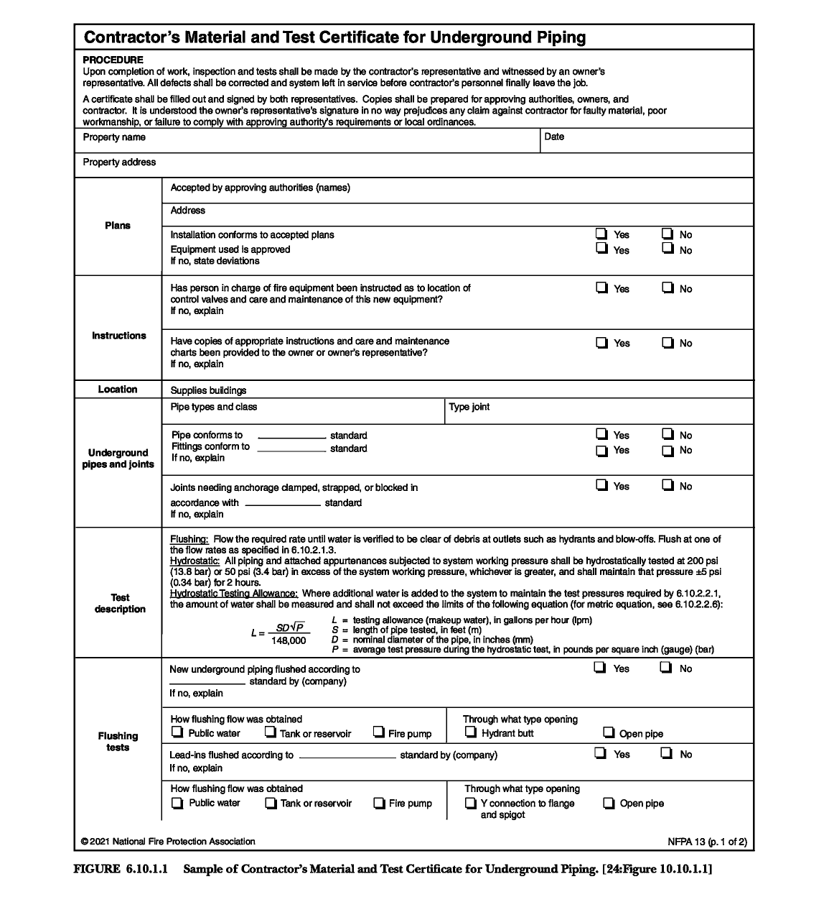
沖洗試驗（6.10.2.1）
自水源至系統立管間之地下配管、立管引接管，以及所有消防栓，於連接至下游消防系統配管前，均應完全沖洗，並持續沖洗至出水確認無雜物為止。消防泵浦吸水管應依 NFPA 20 要求，於連接泵浦前完成沖洗。無法達到表定流量者，允許以系統可提供之最大流量、於最低允許餘壓下沖洗替代；亦允許以強制通入清管器（swab）之方式代替沖洗，並反覆進行直至清管器完全通過且出水澄清為止。應規劃沖洗／測試用水之排放方式，以減少排水造成之損害。
| 公稱管徑 in. | 流量 gpm | 公稱管徑 mm | 流量 L/min |
|---|---|---|---|
| 2 | 100 | 50 | 380 |
| 2½ | 150 | 65 | 570 |
| 3 | 220 | 75 | 833 |
| 4 | 390 | 100 | 1,500 |
| 5 | 610 | 125 | 2,300 |
| 6 | 880 | 150 | 3,350 |
| 8 | 1,560 | 200 | 5,900 |
| 10 | 2,440 | 250 | 9,250 |
| 12 | 3,520 | 300 | 13,300 |
Table 6.10.2.1.3－各管徑達管內流速 10 ft/sec (3.0 m/sec) 所需之最低沖洗流量。
水壓試驗（6.10.2.2）
試驗前應先將溝槽內接頭間回填，防止測試期間管路移動；如因開放溝槽存在安全疑慮，得先行回填管路與接頭，惟安裝承包商應自行負責日後洩漏之定位與修復。試驗壓力應於系統最低高程處（或無消防栓之最低點）之壓力表讀取，可選用消防栓出水口壓力表或該處另設壓力表。
| 公稱管徑 in. (mm) | 容許補水量 gal/hr/100 ft | 容許補水量 L/hr/100 m |
|---|---|---|
| 2 (50) | 0.019 | 0.236 |
| 4 (100) | 0.030 | 0.472 |
| 6 (150) | 0.057 | 0.708 |
| 8 (200) | 0.076 | 0.944 |
| 10 (250) | 0.096 | 1.19 |
| 12 (300) | 0.115 | 1.43 |
| 14 (350) | 0.134 | 1.66 |
| 16 (400) | 0.153 | 1.90 |
| 18 (450) | 0.172 | 2.14 |
| 20 (500) | 0.191 | 2.37 |
| 24 (600) | 0.229 | 2.84 |
Table 6.10.2.2.6－200 psi (14 bar) 試驗壓力下之水壓試驗補水容許量（其他長度／管徑／壓力組合應依 6.10.2.2.6 公式換算；不同管徑管段組成之試驗區段，容許量為各管段容許量加總）。
6.10.2.3 經 AHJ 同意，得依 AWWA C600、M9、M23 或 M55 之指引方式辦理水壓試驗，惟試驗壓力與延時仍須符合 6.10.2.2.1。既有系統改裝或維修而無法單獨隔離測試者，水壓試驗得限縮為於系統工作壓力下目視檢查有無洩漏（6.10.2.3.1）。
操作測試與逆流防止裝置測試（6.10.2.4–6.10.2.5）
- 每一消防栓應於系統水壓下完全開啟並關閉一次；乾式消防栓應檢查排水功能
- 所有控制閥應於系統水壓下完全關閉並開啟，以確認可正常操作
- 私設消防水管由消防泵浦供水者，操作測試應於泵浦運轉狀態下完成
- 逆流防止裝置（backflow preventer）應執行正向流量測試（forward flow test），最小測試流量應為系統需求流量（含適用之消防栓用水量）
系統元件與硬體要求（System Components and Hardware）
7.1總則與列名（Listing）
本標準未特別指定之材料或裝置，須完全依其列名（Listing）之條件、要求與限制使用（7.1.1.1）。除少數例外（如閥類內部零件、Table 7.3.1.1／7.4.1 允許之設備、不影響系統效能之元件），凡攸關系統正常運作之材料與裝置均須為列名品（7.1.1.2–7.1.1.5）。系統元件之額定壓力須能承受最大系統工作壓力，且地上元件不得低於 175 psi (12 bar)、地下元件不得低於 150 psi (10 bar)（7.1.2）。
7.2撒水頭
7.2.1 所有撒水頭應永久標示 1–2 位英文大寫字母（廠牌代碼）及 3–4 位數字，以識別 K 值、撒水盤特性、壓力額定與熱感應特性。
| 公稱 K 值 gpm/(psi)½ | 公稱 K 值 L/min/(bar)½ | 相對放水量（K5.6=100%） | 螺紋規格 |
|---|---|---|---|
| 5.6 | 80 | 100% | ½ in. NPT |
| 8.0 | 115 | 140% | ½–¾ in. NPT |
| 11.2 | 160 | 200% | ½–¾ in. NPT |
| 14.0 | 200 | 250% | ¾ in. NPT |
| 16.8 | 240 | 300% | ¾ in. NPT |
| 22.4 | 320 | 400% | 1 in. NPT |
| 28.0 | 400 | 500% | 1 in. NPT |
溫度等級與顏色識別（7.2.4）
| 溫度分類 | 動作溫度範圍 | 玻璃球顏色 | 易熔合金顏色 |
|---|---|---|---|
| Ordinary 一般 | 135–170°F (57–77°C) | 橙／紅 | 無色／黑 |
| Intermediate 中溫 | 175–225°F (79–107°C) | 黃／綠 | 白 |
| High 高溫 | 250–300°F (121–149°C) | 藍 | 藍 |
| Extra High 特高溫 | 325–375°F (163–191°C) | 紫 | 紅 |
| Very Extra High 極高溫 | 400–475°F (204–246°C) | 黑 | 綠 |
7.2.5 撒水頭僅得由原廠進行防蝕塗裝或裝飾塗裝，現場不得自行噴漆。7.2.6 隱藏式／平頂式／崁頂式撒水頭之蓋板與化妝環須為該撒水頭列名總成之一部分，不得混用他牌。
7.3–7.5配管、管件與接合方式
地上配管與管件須符合 Table 7.3.1.1／Table 7.4.1 所列 ASTM／ASME 標準（涵蓋鋼、銅、CPVC、不鏽鋼、黃銅等材質），或為經列名可用於本用途之其他材質（依其列名限制安裝）。非金屬管件不得用於僅防護部分用途分類之場所（7.3.5.2／7.4.3）。
螺紋／溝槽／銅管接合
- 螺紋依 ASME B1.20.1；管壁厚度低於 Schedule 30（≥8 in.）或 40（<8 in.）者，須採經列名之螺紋接合總成
- 溝槽式接頭之溝槽尺寸須與接頭相容（切削／輥軋／鑄造溝槽皆可）；乾式／預動式／開放式系統所用溝槽墊圈須列名適用於乾式服務
- 銅管接頭原則採硬銲（brazed）；輕危險場所之外露濕式系統，若撒水頭為一般／中溫等級，允許軟銲（solder）
銲接（7.5.2）
- 撒水配管原則應於工廠銲接完成；現場銲接須依 NFPA 51B 施作，並具備合格之銲接程序與人員資格（依 AWS B2.1/B2.1M 或 ASME 鍋爐與壓力容器規範第IX章）
- 禁止以火焰切割與銲接方式修改或修復既有撒水系統
- 管件不得以銲接方式現場改造；螺帽、夾具等緊固件不得銲接於配管或管件（耐震斜撐用之銲接墊片除外）
- 承包商／製造商應保存銲工資格與銲接紀錄，供 AHJ 查閱
7.6閥類
7.6.1 列名指示型控制閥（indicating control valve）以最快速度操作時，關閉時間不得少於 5 秒，以避免水鎚（water hammer）。7.6.2 允許使用具自動控制且可同時手動操作、並將閥位訊號傳送至遠端監控站之列名自動水控制閥。
7.7水流警報裝置
機械式水流警報裝置應於流量達系統中最小 K 值撒水頭之流量時，5 分鐘內觸發現場可聞警報；電子式水流警報裝置則須於100 秒內觸發，且警報須持續至水流停止為止（7.7.1–7.7.2）。
7.8–7.9添加劑塗層與自動化檢測設備
用於控制微生物或其他腐蝕之水源添加劑與內部塗層（鍍鋅除外），須列名適用於消防撒水系統。自動化檢測／測試裝置之效果須等同人工檢查／測試；裝置故障不得影響系統運作，並須依 NFPA 72 觸發可聞可視監督訊號與故障訊號。
系統類型與要求（System Types and Requirements）
8.1濕式系統 Wet Pipe
配管內全程充滿加壓水，撒水頭動作即立即出水。每一系統立管應裝設壓力表，警報逆止閥／系統逆止閥上下方亦應各裝設壓力表（8.1.1）。
8.2乾式系統 Dry Pipe
配管內充填加壓空氣或氮氣，撒水頭動作後排氣、乾式閥開啟才進水，適用於可能凍結之場所。系統容量（8.2.3）受限：容量越大，出水延遲時間越長，故對容量訂有上限，並可透過加裝加速器（accelerator）／排氣器（exhauster）縮短動作時間。
8.3預動式與開放式系統 Preaction / Deluge
預動式：配管平時無壓（或低壓監控空氣），須經獨立火警偵測系統動作後，預動閥開啟進水至系統配管，仍由個別撒水頭動作出水（多一道安全機制，適用於怕誤動作損失之場所，如電子廠房）。開放式（放水）系統：所有噴頭均為開放式，經偵測系統動作後全區同時放水（適用於需快速全區覆蓋之特殊危害，如變壓器、舞台）。
8.4–8.5複合式與多循環系統
複合式乾式／預動式系統：專用於碼頭、棧橋等場所。多循環系統（Multi-Cycle）：偵測到火警後放水，溫度降至一定程度後可自動關閉，再偵測到復燃時重新放水，屬循環動作型設計。
8.6.3 防凍液系統與供水配管間應設置逆流防止裝置（backflow preventer），並依系統容量（≤40 gal 或 >40 gal）選用膨脹室（expansion chamber）或洩壓閥（relief valve）以吸收溫升造成之熱膨脹；容量超過 150 gal 者，每增加 150 gal 應增設一組測試接頭。
8.7暴露防護撒水系統
用於保護建築外牆、開口或屋頂免受外部曝露火災波及，無論建物內部是否設有撒水系統皆可設置；每組暴露防護系統應有獨立控制閥；位於可能凍結區域之自動撒水頭應採乾式、防凍液系統或連接至暖房區濕式系統之乾式撒水頭。
8.8–8.10特殊場所系統
冷凍庫（8.8）、商用廚房設備與排油煙罩（8.9，通常搭配濕化學滅火系統）、導引式偵煙器（Pilot Line Detectors, 8.10）等場所訂有專屬系統配置要求。
撒水頭位置要求（Sprinkler Location Requirements）
9.1基本原則
- 撒水頭應遍布全場所裝設
- 撒水頭間距不得超過其最大保護面積
- 撒水頭之定位與位置須確保動作時間與配水分布符合預期效能
- 僅得於本標準明確允許之區域省略撒水頭
- 如經專門測試證實偏離淨空要求不影響滅火／控制能力，允許依測試結果安裝
9.2允許省略撒水頭之位置
其他允許省略情境
- 9.2.2 地面層下方空間、室外碼頭與平台：無法作儲存用途、無輸送機等設備、樓板構造緊密、上方樓層無可燃／易燃液體處理儲存
- 9.2.3 外部突出物（簷篷、屋頂、門廊、陽台）：以不燃、限燃或耐燃處理木材構築者，或突出物下方僅為撒水區或符合特定條件之非撒水密閉空間
- 9.2.4 住宅單元衛浴：面積 ≤55 ft²、牆頂具 15 分鐘防火時效及不燃/限燃材質者，得免設撒水頭（限定照護機構與護理之家除外）
天花板開口與雲狀天花板
9.2.7 具開口之天花板（雲狀天花板等）可否於開口上方省略撒水頭，須依 Table 9.2.7.1（依天花板雲層寬度與開口寬度決定最大保護面積）判定，開口寬度相對天花板高度比例越大，可省略之保護面積越受限，甚至不允許省略（NP）。
9.3–9.5特殊情況與位置／間距／使用原則
本節（連同 Ch.10–15 各類撒水頭安裝要求）進一步規範撒水頭於天花板障礙物（樑、風管、燈具）周邊之允許偏移與遮蔽限制、撒水盤與天花板／屋頂間之淨空範圍、牆邊撒水頭與牆面之距離、以及撒水頭朝向與偏轉方向要求；連續性障礙物（Continuous Obstruction）與非連續性障礙物（Noncontinuous Obstruction）之區分（見 Ch.3 定義）決定其對相鄰撒水頭配水型態之影響範圍與對應之補償設計原則，實務設計請對照 Ch.10–15 各類撒水頭專屬之間距／障礙物規則表。
標準懸吊式（Pendent）、直立式（Upright）與牆側型（Sidewall）撒水頭安裝要求
10.1總則
標準懸吊式、直立式與牆側型撒水頭之選用與安裝應依本章規定辦理，並依 Section 9.5（撒水頭定位與間距通則）進行定位與間距配置。
10.2標準懸吊式與直立式撒水頭
10.2.2 直立式與懸吊式噴頭除 9.3.2 另有規定外，得用於所有用途危害分類與建築構造類型。10.2.3 快速反應型（Quick-Response）撒水頭不得用於採密度／面積設計法之嚴重危險用途。
10.2.4每一撒水頭之保護面積（Protection Area）
10.2.4.1.1 保護面積（As）依 9.5.2.1 決定；10.2.4.1.2 「小房間」（依 3.3.206 定義）例外——其每一撒水頭之保護面積 = 房間面積 ÷ 撒水頭數量。10.2.4.2.2 無論何種情形，單一撒水頭保護面積上限一律為 225 ft² (20 m²)。
Table 10.2.4.2.1(a) 輕危險（Light Hazard）
| 建築構造類型 | 系統型式 | 最大保護面積 ft² (m²) | 最大間距 ft (m) |
|---|---|---|---|
| 不燃、無障礙 | 水力計算 | 225 (20) | 15 (4.6) |
| 不燃、無障礙 | 管徑排列表（Pipe Schedule） | 200 (18) | 15 (4.6) |
| 不燃、有障礙 | 水力計算 | 225 (20) | 15 (4.6) |
| 不燃、有障礙 | 管徑排列表 | 200 (18) | 15 (4.6) |
| 可燃、無障礙、無外露構材 | 水力計算 | 225 (20) | 15 (4.6) |
| 可燃、無障礙、無外露構材 | 管徑排列表 | 200 (18) | 15 (4.6) |
| 可燃、無障礙、外露構材間距 ≥3 ft (910 mm) | 水力計算 | 225 (20) | 15 (4.6) |
| 可燃、無障礙、外露構材間距 ≥3 ft (910 mm) | 管徑排列表 | 200 (18) | 15 (4.6) |
| 可燃、無障礙、構材間距 <3 ft (910 mm) | 不限 | 130 (12) | 15 (4.6) |
| 可燃、有障礙、外露構材間距 ≥3 ft (910 mm) | 不限 | 168 (16) | 15 (4.6) |
| 可燃、有障礙、構材間距 <3 ft (910 mm) | 不限 | 130 (12) | 15 (4.6) |
| 可燃隱蔽空間（依 10.2.6.1.4） | 不限 | 120 (11) | 沿坡向 15 (4.6)／垂直坡向 10 (3.0) |
Table 10.2.4.2.1(b) 普通危險（Ordinary Hazard）
| 建築構造類型 | 系統型式 | 最大保護面積 ft² (m²) | 最大間距 ft (m) |
|---|---|---|---|
| 不限 | 不限 | 130 (12) | 15 (4.6) |
Table 10.2.4.2.1(c) 嚴重危險（Extra Hazard）
| 建築構造類型 | 系統型式 | 保護面積 ft² (m²) | 最大間距 ft (m) |
|---|---|---|---|
| 不限 | 管徑排列表 | 90 (8.4) | 12*（3.7*） |
| 不限 | 水力計算，密度 >0.25 gpm/ft² (10.2 mm/min) | 100 (9) | 12*（3.7*） |
| 不限 | 水力計算，密度 <0.25 gpm/ft² (10.2 mm/min) | 130 (12) | 15 (4.6) |
*結構構材形成跨距達 25 ft (7.6 m) 之樑柱格間時，最大間距得放寬至 12 ft 6 in. (3.8 m)。
Table 10.2.4.2.1(d) 高架儲存（High-Piled Storage）
| 系統型式 | 保護面積 ft² (m²) | 最大間距 ft (m) |
|---|---|---|
| 水力計算，密度 ≥0.25 gpm/ft² (10.2 mm/min) | 100 (9) | 12*（3.7*） |
| 水力計算，密度 <0.25 gpm/ft² (10.2 mm/min) | 130 (12) | 15 (4.6) |
10.2.5撒水頭間距
- 撒水頭至牆之距離不得超過表列容許間距之一半；牆面轉角或不規則者，撒水頭至保護範圍內任一地板點之水平距離不得超過容許間距之 0.75 倍（垂直距離仍須符合限制）。
- 小房間例外（3.3.206）：撒水頭距單一牆面不得超過 9 ft (2.7 m)，惟仍須符合 10.2.5 間距限制與 Table 10.2.4.2.1(a) 之面積限制。
- 曲面天花板下，水平距離應於地板面自牆（或曲面與地板交會處）量測至最近撒水頭，不得超過容許間距一半。
- 最小間距：撒水頭距牆不得少於 4 in. (100 mm)；撒水頭彼此間距不得少於 6 ft (1.8 m)，貨架內撒水頭（in-rack）不受此限。
- 撒水頭間距 <6 ft 之例外，須設置擋板（baffle）：材質剛性、長 ≥8 in. (200 mm)、高 ≥6 in. (150 mm)，頂部延伸至直立式撒水盤上方 2–3 in. (50–75 mm)，底部延伸至懸吊式撒水盤同高或以下。
10.2.6撒水盤（偏向板）位置
無障礙構造：撒水盤與天花板距離為 1–12 in. (25–300 mm)；具遮蔽型／隱藏型撒水頭（操作元件於天花板上方）依其認證安裝者不受此限；輕、普通危險用途之不燃／限燃天花板，若天花板高低差 >36 in. 視高差處為「牆」計算間距，若 ≤36 in. 得視為平面天花板計算間距（惟仍須符合障礙物規則）。
有障礙構造，撒水盤位置應符合下列其一：
- 位於結構構材下方水平面 1–6 in. (25–150 mm)，且不超過天花板／屋頂板下方 22 in. (550 mm)
- 位於構材底部或以上，最深不超過天花板／屋頂板下方 22 in. (550 mm)（須符合 10.2.7.2）
- 每一樑柱格內設置，撒水盤距天花板 1–12 in. (25–300 mm)
- 複合木格柵下方 1–6 in.（至最深 22 in.），惟格柵通道須以與腹板相當之材料做滿深度防火填塞，各通道面積 ≤300 ft² (28 m²)
- 混凝土 T 型樑（stem 間距 <7.5 ft／2.3 m）下方，位於樑腳下方 1 in. (25 mm) 之水平面或以上，並符合 Table 10.2.7.2(a)/(b)
坡屋頂／尖頂：撒水盤原則上應位於屋脊垂直下方 ≤36 in. (900 mm)；鋸齒型屋頂沿坡度量測亦 ≤36 in.；陡坡得放寬距離以維持與其他結構構材至少 24 in. (600 mm) 水平淨距。木格柵／木桁架可燃隱蔽空間（構材間距 <3 ft、坡度 ≥4/12）：僅得用快速反應型撒水頭；屋脊附近 12 in. 內設一排撒水頭（位於上弦材下緣下方 1–12 in.）；簷口撒水頭距上下弦交會點 ≥5 ft (1.5 m)；垂直坡向尺寸 >8 ft 者最低工作壓力須 ≥20 psi (1.4 bar)；雙層格柵構造：下層無鋪板時，格柵上下方均須設撒水頭（上下格柵淨距 ≥6 in. 時）；若撒水盤距下格柵頂 ≥18 in. (450 mm) 得省略下層撒水頭。
撒水盤方向：原則上應與天花板／屋頂／樓梯坡度平行；坡屋脊下方撒水頭撒水盤應保持水平；坡度 ≤2/12 (16.7%) 視為水平天花板。
10.2.7撒水頭放水之障礙物（Obstructions）
原則上撒水頭應配置於可將放水障礙降至最低之位置，否則須增設撒水頭以確保防護涵蓋。障礙物規則分為三大類：
(A) 妨礙放水型態發展（≤18 in. 障礙）
- 依 Table 10.2.7.2(a)/(b) 決定「撒水頭距障礙物側邊距離 (A)」與「撒水盤可高於障礙物底部之容許距離 (B)」的對應關係（A 越大，容許 B 越大）
- 障礙物寬 ≤4 ft (1.2 m)：得於兩側對稱配置撒水頭，惟至障礙物中心線距離 ≤容許間距一半
- 牆側障礙物 ≤30 in. (750 mm) 或 ≤24 in. (600 mm) 寬者，各有專屬圖示配置方式
- ≤6 ft 寬走道內 ≤12 in. 寬障礙物，撒水頭於容許區內、障礙物邊緣距撒水頭中心線 ≥12 in.
- ≥4 ft 寬固定障礙物下方須設撒水頭；≤4 ft 且符合上表關係者可免設
(B) 妨礙放水型態充分展開（≤18 in. 障礙，最小淨距）
- 原則：撒水頭距障礙物（如桁架腹板／弦材、管路、柱、設備）最小淨距 = 3 倍障礙物最大尺寸
- 水平向障礙物（如燈具、桁架弦材）最大要求淨距 24 in. (600 mm)；垂直向障礙物（如柱）不受此上限
- 桁架／橫樑上得裝設撒水頭，惟腹板寬度 ≤8 in. (200 mm) 且撒水盤位於構材上方 ≥6 in.，並與腹板保持 3 倍最大尺寸距離
- 不適用於管徑 <3 in. (80 mm) 之配管
- 吊扇葉片：直徑 <60 in. (1.5 m) 且平面開口率 ≥50% 者免計為障礙物
- 懸吊或落地式垂直隔屏（如布簾、隔間）：輕危險用途依 Table 10.2.7.3.2.1(a)/(b)；普通危險用途另有規定（隔屏上方 ≥18 in. 或側邊 ≥6 in. 水平距離下 ≥6 in. 垂直距離）
| 撒水頭距障礙物側邊 A (ft) | 撒水盤可高於障礙物底部之容許距離 B (in.) |
|---|---|
| <1 | 0 |
| 2 以上 | 5¼ 以下 |
| 4 以上 | 14 以下 |
| 6 以上 | 24 以下 |
| 7 以上 | 35 以下 |
(C) 妨礙放水到達防護標的（>18 in. 障礙）：固定障礙物 >4 ft (1.2 m) 寬者下方須設撒水頭，撒水盤位於障礙物底部下方 ≤12 in. (300 mm)；開放格柵、圓形風管下方撒水頭須為中間層／貨架型或另加防護避免上層撒水影響其放水。
10.2.8撒水頭與堆貨淨空
撒水盤與堆貨頂部淨空一般為 ≥18 in. (450 mm)；橡膠輪胎儲存則須 ≥36 in. (900 mm)；牆側非撒水頭正下方之置物架，其置物（含貨品）得高於天花板撒水盤下方 18 in. 之平面，惟撒水頭正下方之置物架不得超過此平面。其他標準若要求更大淨空，從其規定。
10.2.9天花板凹陷區（Ceiling Pockets）
原則上所有天花板凹陷區均須設撒水頭；惟同時符合下列六項者得免設：容積 ≤1000 ft³ (28 m³)；深度 ≤36 in. (900 mm)；凹陷區下方整個地板面已於較低天花板標高受撒水頭防護；同一防火區劃內 10 ft (3 m) 內所有未防護凹陷區合計 ≤1000 ft³；內裝為不燃／限燃材料；且區劃內全面採用快速反應型撒水頭。天窗等類似凹陷區依 9.3.16 辦理，免設撒水頭。
10.3牆側型標準噴頭（Sidewall Standard Spray Sprinklers）
10.3.2 牆側型撒水頭僅限下列場合使用：
- 輕危險用途、平滑水平天花板；或平滑斜面天花板
- 普通危險用途、平滑平面天花板（限經專門列名核准使用者）
- 防護上懸式車庫門（overhead door）下方區域；電梯升降道頂部與底部
- 鋼構柱防護；須設撒水頭之障礙物下方；外部突出物防護；堆疊式停車系統各層車輛下方
（波紋金屬甲板、槽深 ≤3 in./75 mm 者，視為平滑天花板）
Table 10.3.3.2.1 牆側型標準噴頭保護面積與最大間距
| 輕危險 | 普通危險 | |||
|---|---|---|---|---|
| 可燃天花板 | 不燃／限燃天花板 | 可燃天花板 | 不燃／限燃天花板 | |
| 沿牆最大距離 S ft (m) | 14 (4.3) | 14 (4.3) | 10 (3.0) | 10 (3.0) |
| 最大房間深度 L ft (m) | 12 (3.7) | 14 (4.3) | 10 (3.0) | 10 (3.0) |
| 最大保護面積 ft² (m²) | 120 (11) | 196 (18) | 80 (7.4) | 100 (9.3) |
單一撒水頭保護面積之絕對上限為 196 ft² (18 m²)。保護面積計算方式：As = S × L（S 為沿牆間距，取相鄰撒水頭距離或端牆距離兩倍中較大者；L 為房間深度方向距離）。
10.3.4–10.3.5牆側型間距與撒水盤位置
- 最大間距沿天花板坡度量測；牆側型撒水頭不得背對背安裝，除非以連續楣板／飾條（寬 ≤16 in./400 mm，向下延伸 ≥4 in./100 mm 超過撒水盤）區隔，或於楣板下另設懸吊式撒水頭
- 兩對向牆／跨間裝設者，輕危險房間寬 ≤24 ft (7.3 m)、普通危險 ≤20 ft (6.1 m)
- 最小距端牆 4 in. (100 mm)；撒水頭彼此間距 ≥6 ft (1.8 m)（除非設置擋板，規格同 10.2.5）
- 撒水盤距天花板：一般 4–6 in. (100–150 mm)；水平牆側型經列名核准者得位於 6–12 in. 或 12–18 in. 之特定區間（限不燃／限燃天花板）
- 撒水盤距安裝牆面：垂直牆側型 4–6 in.；水平牆側型 ≤6 in.（得小於 4 in.）
- 楣板／垂壁 >8 in. (200 mm) 寬或投影者，其下方須加設撒水頭；≤8 in. 者若撒水頭裝於楣板面上則免設；牆側型高於櫥櫃頂 >36 in. (900 mm) 且櫥櫃距牆 ≤12 in. 者，得裝設於櫥櫃上方牆面
10.3.6牆側型障礙物規則（節錄）
燈具等障礙物距牆側型撒水頭一般須 ≥4 ft (1.2 m)，惟障礙物最大尺寸 <2 ft (0.6 m) 者得縮短至3 倍最大尺寸；≥4 ft 以上障礙物依 Table 10.3.6.1.3(a)/(b) 之 A–B 對應關係核算（原理與 10.2.7 相同，惟基準距離不同）。牆面同側連續障礙物依 Table 10.3.6.1.4(a)/(b)；對向牆面障礙物依 Figure 10.3.6.1.6 之 2 ft (600 mm) 淨空規則。撒水頭與堆貨淨空 ≥18 in. (450 mm)。
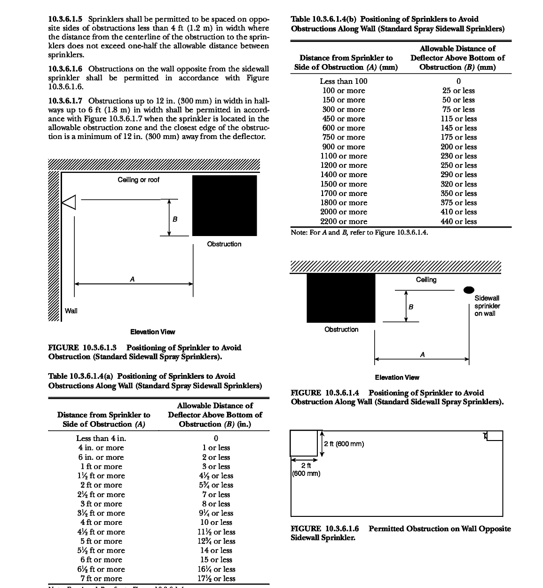
延伸涵蓋型（Extended Coverage）撒水頭安裝要求
11.1總則
延伸涵蓋型直立式、懸吊式、牆側型撒水頭之選用安裝依本章規定，並依 Section 9.5 定位與間距。延伸涵蓋型撒水頭之保護面積較標準型更大，屬依認證登記（listing）決定保護面積之噴頭類型。
11.2.1使用限制
延伸涵蓋型直立式／懸吊式噴頭僅限下列情形安裝：
- 無障礙構造，平滑天花板，坡度 ≤1:6（16.7%）
- 無障礙或不燃有障礙構造，經專門列名核准使用者
- 桁架／格柵腹板 ≤1 in. (25 mm) 或桁架間距 >7.5 ft (2.3 m) 且坡度 ≤1:6
- 平滑平面天花板坡度 ≤1:3（33.3%），經列名核准使用者
- 各樑柱格內設置（有障礙構造，實心構材延伸至撒水盤以下）；上懸式車庫門下方單一區域
11.2.2保護面積
11.2.2.1.1–.2 延伸涵蓋型撒水頭之保護面積不得小於其認證登記值，且登記面積須為偶數平方尺之正方形保護面積。11.2.2.1.3 延伸涵蓋型嚴重危險或高架儲存用噴頭之保護面積與間距得依 9.5.2/9.5.3 決定，惟不得超過 14 ft (4.3 m)／196 ft² (18 m²) 或 15 ft (4.6 m)／144 ft² (13 m²) 之組合。11.2.2.2.2 單一撒水頭保護面積絕對上限 400 ft² (37 m²)。
Table 11.2.2.1.2 延伸涵蓋型直立式／懸吊式噴頭保護面積與最大間距
| 建築構造 | 輕危險 | 普通危險 | 嚴重危險 | 高架儲存 | ||||
|---|---|---|---|---|---|---|---|---|
| 面積 ft²(m²) | 間距 ft(m) | 面積 | 間距 | 面積 | 間距 | 面積 | 間距 | |
| 無障礙 | 400(37) | 20(6.1) | 400(37) | 20(6.1) | — | — | — | — |
| 無障礙 | 324(30) | 18(5.5) | 324(30) | 18(5.5) | — | — | — | — |
| 無障礙 | 256(24) | 16(4.9) | 256(24) | 16(4.9) | — | — | — | — |
| 無障礙 | — | — | 196(18) | 14(4.3) | 196(18) | 14(4.3) | 196(18) | 14(4.3) |
| 無障礙 | — | — | 144(13) | 12(3.7) | 144(13) | 15(4.6) | 144(13) | 15(4.6) |
| 不燃有障礙（列名核准） | 400(37) | 20(6.1) | 400(37) | 20(6.1) | — | — | — | — |
| 不燃有障礙（列名核准） | 324(30) | 18(5.5) | 324(30) | 18(5.5) | — | — | — | — |
| 不燃有障礙（列名核准） | 256(24) | 16(4.9) | 256(24) | 16(4.9) | — | — | — | — |
| 不燃有障礙（列名核准） | — | — | 196(18) | 14(4.3) | 196(18) | 14(4.3) | 196(18) | 14(4.3) |
| 不燃有障礙（列名核准） | — | — | 144(13) | 12(3.7) | 144(13) | 15(4.6) | 144(13) | 15(4.6) |
| 可燃有障礙 | N/A（延伸涵蓋型噴頭不適用於可燃有障礙構造） | |||||||
11.2.3間距、11.2.4撒水盤位置
間距規則與 10.2.5 概念相同（牆距 ≤容許間距一半；不規則牆 0.75 倍；最小 4 in. 距牆；最小間距 8 ft/2.4 m，惟設置符合規格之擋板得縮短）。撒水盤位置規則與 10.2.6 相同（無障礙 1–12 in.；有障礙依構材位置分 3 種配置；坡屋脊 ≤36 in.（900 mm）下垂；坡度 ≤2/12 視為水平）。
11.2.5障礙物規則
11.2.6–11.2.7堆貨淨空與天花板凹陷區
撒水盤與堆貨頂部淨空 ≥18 in. (450 mm)（橡膠輪胎 ≥36 in./900 mm）；天花板凹陷區規則與 10.2.9 相同（≤1000 ft³、≤36 in. 深、樓地板全防護、10 ft 內合計 ≤1000 ft³、不燃／限燃內裝、全面 QR 撒水頭者免設）。
11.3延伸涵蓋型牆側噴頭
使用限制與 Ch.10 牆側型類似（輕危險平滑水平／斜面天花板；普通危險經列名核准；無障礙或不燃有障礙經列名核准；坡度 ≤1/6 之桁架構造；上懸式車庫門下方單區）。11.3.3.1.2 保護面積之登記尺寸以 2 ft (600 mm) 為級距，最大至 28 ft (8.5 m)；11.3.3.2.2 單頭保護面積絕對上限 400 ft² (37 m²)。
| 建築構造 | 輕危險（面積/間距） | 普通危險（面積/間距） | ||
|---|---|---|---|---|
| 無障礙、平滑平面天花板 | 400 ft² (37 m²) | 28 ft (8.5 m) | 400 ft² (37 m²) | 24 ft (7.3 m) |
間距規則：沿牆最大距離依上表；牆距不超過容許間距一半；最小距端牆 4 in. (100 mm)；同牆背對背安裝須以連續楣板／飾條／擋板區隔；對向或鄰牆安裝者，兩撒水頭不得互相落在對方保護面積內（間距 ≥12 ft/3.7 m）。撒水盤距天花板 4–6 in.；距牆 4–6 in.（水平型得 <4 in.）。障礙物規則概念同上，惟基準距離改為 8 ft (2.4 m)（燈具等）、四倍最大尺寸原則、水平向淨距上限 36 in. (900 mm)。堆貨淨空 ≥18 in. (450 mm)。
住宅型撒水頭（Residential Sprinklers）安裝要求
12.1.1安裝範圍與條件
住宅型撒水頭得用於住宅單元（dwelling units）及其相鄰走廊，惟須完全依認證登記安裝，並符合下列條件之一：
- 平滑水平天花板、無樑，天花板高度 ≤24 ft (7.3 m)
- 水平樑式天花板，樑深 ≤14 in. (355 mm)、懸吊式撒水頭裝於樑下；含樑天花板區劃 ≤600 ft² (56 m²)，區劃內最高撒水頭須高於所有連通開口
- 平滑斜面天花板（無樑），坡度 ≤8/12，最高處 ≤24 ft (7.3 m)，最高撒水頭高於連通開口
- 斜面樑式天花板，樑深 ≤14 in. (350 mm)，坡度介於 2/12–8/12，區劃 ≤600 ft² (56 m²)，最高處 ≤24 ft
- 斜面天花板（樑深不限），各樑間口袋內設牆側型或懸吊式撒水頭，區劃 ≤600 ft² (56 m²)，坡度介於 2/12–8/12，最高處 ≤24 ft
12.1.2 構造特徵或特殊情況超出噴頭認證登記範圍者，經 AHJ 同意得允許超出登記限制安裝。12.1.3 住宅型撒水頭僅限用於濕式系統，除非該噴頭經專門列名核准用於乾式或預動式系統。12.1.4 同一區劃（依 3.3.40 定義）內若設有住宅型撒水頭，該區劃內所有撒水頭皆須為住宅型。12.1.4.1 住宅型撒水頭得裝設於相鄰採快速反應型撒水頭防護區域之走廊。
12.1.6認證登記與保護面積
住宅型撒水頭之保護面積應依製造商認證登記核定，12.1.7 撒水頭間最大距離同依登記值；撒水頭距牆不得超過登記容許間距之一半；同一區劃內撒水頭最小間距為 8 ft (2.4 m)，除非登記要求更大間距，或設置符合規格之擋板（規格同 Ch.10：長 ≥8 in./200 mm、高 ≥6 in./150 mm 剛性擋板）。
12.1.7.5–12.1.7.6斜面天花板間距
沿斜面量測最大距離；屋脊附近應於 3 ft (900 mm) 內設一撒水頭，並維持登記最小間距（不得少於 8 ft/2.4 m），以平面投影量測，除非設置擋板。
12.1.8撒水盤位置
- 直立式／懸吊式：撒水盤距天花板 1–4 in. (25–100 mm)（除非登記允許更大距離）
- 樑下或樑側裝設：樑深 ≤14 in. (350 mm)、天花板高 ≤24 ft、坡度 ≤8/12、區劃 ≤600 ft² 者，撒水盤得位於樑下 1–2 in. (25–50 mm)（直接樑下）或樑側緣 2 in. 內、樑下 1–2 in.（緊鄰樑側）
- 牆側型：撒水盤距天花板 4–6 in. (100–150 mm)（除非登記允許更大距離）；水平牆側撒水盤距牆 ≤6 in. (150 mm)
- 楣板／垂壁 >8 in. (200 mm) 寬或投影者，其下須增設撒水頭
- 最小距牆 4 in. (100 mm)；撒水盤方向原則平行天花板／屋頂，坡屋脊下方水平安裝，坡度 ≤2/12 視為水平
12.1.9–12.1.11障礙物規則
12.1.10.2.3* 陰影區（Shadow Areas）：牆／隔間造成之陰影區得計入撒水頭保護面積內，惟每一撒水頭之陰影區累計不得超過 15 ft² (1.4 m²)。
放水無法到達防護標的之障礙物規則：≥4 ft (1.2 m) 寬固定障礙物下方須設撒水頭；開放格柵下方撒水頭須加以遮蔽避免上方撒水影響。
12.1.12天花板凹陷區
原則上所有天花板凹陷區均須設撒水頭，惟同時符合上列容積、深度、下方樓地板已由住宅型撒水頭全面防護、且內裝為不燃／限燃材料者，得免設。
CMSA 撒水頭（特定應用控制模式撒水頭）安裝要求
13.1 CMSA（Control Mode Specific Application）撒水頭之選用安裝依本章規定，並依 Section 9.5 定位間距。CMSA 撒水頭係依特定貨架儲存或特定用途火災測試結果核發認證之特殊噴頭，與後續 Ch.22 貨架儲存防護密切相關，常用於取代傳統天花板密度／面積設計搭配貨架內撒水頭之組合。
13.2.1–13.2.4一般規定
- CMSA 懸吊式噴頭得用於濕式、乾式或預動式系統，並應依認證登記安裝；13.2.1.1 CMSA 懸吊式應依 Section 9.5 及製造商安裝說明書安裝，優先於 13.2 一般規定
- 溫級：除另有規定外，依 Table 9.4.2.5(a)/(b) 或大型實尺寸火災試驗決定之溫級；儲存用途濕式系統採普通／中／高溫級，乾式系統須採高溫級
- 用途與危害：快速反應型 CMSA 得用於 Ch.12–Ch.20 規定之輕、普通危險用途；標準反應型 CMSA 僅得用於普通危險用途
13.2.5保護面積
保護面積依 9.5.2.1 決定；13.2.5.2.2 單頭保護面積絕對上限 130 ft² (12 m²)；13.2.5.3 保護面積下限 80 ft² (7.4 m²)。
Table 13.2.5.2.1 CMSA 撒水頭保護面積與最大間距
| 建築構造類型 | 保護面積 ft² (m²) | 最大間距 ft (m) |
|---|---|---|
| 不燃、無障礙 | 130 (12) | 12 (3.7) |
| 不燃、有障礙 | 130 (12) | 12 (3.7) |
| 可燃、無障礙 | 130 (12) | 12 (3.7) |
| 可燃、有障礙 | 100 (9) | 10 (3.0) |
| 貨架儲存、可燃有障礙 | 100 (9) | 10 (3.0) |
| 貨架儲存、無障礙／不燃有障礙 | 100 (9) | 12 (3.7) |
13.2.6撒水頭間距
- 不燃無障礙／不燃有障礙／可燃無障礙構造：間距 ≤12 ft (3.7 m)
- 可燃有障礙構造：間距 ≤10 ft (3.0 m)
- 距牆不超過容許間距一半；最小距牆 4 in. (100 mm)
- 撒水頭間最小間距 8 ft (2.4 m)，設置符合規格擋板者得縮短
13.2.7撒水盤位置
無障礙構造：撒水盤距天花板 6–8 in. (150–200 mm)。有障礙構造依下列其一：
- 撒水盤距天花板 6–12 in. (150–300 mm)
- 位於木格柵／複合木格柵／不燃或限燃有障礙構造下方水平面 1–6 in.，最深 22 in. (550 mm)；CMSA 裝於開放木格柵構造下方時，最低工作壓力：K-11.2 (160) 噴頭須 ≥50 psi (3.4 bar)；K-16.8 (240) 噴頭須 ≥22 psi (1.5 bar)（依 22.1.5.1）
- 混凝土 T 型樑（stem 間距 3–7.5 ft／0.9–2.3 m）下方，位於樑腳下方 1 in. 之水平面或以上，並符合 Table 13.2.8.1.2(a)/(b)
13.2.8障礙物規則
基本原則與標準型相同：撒水頭距障礙物最小淨距為 3 倍障礙物最大尺寸（適用 ≤8 in./200 mm 寬障礙物之情形）；直立式撒水頭與支管關係：得直接裝於 ≤4 in. (100 mm) 管徑之支管上，或水平偏移 ≥12 in. (300 mm)，或以短管（sprig）抬高撒水盤，使距 >4 in. 管徑之管中心線 ≥12 in.。障礙物完全位於撒水頭下方者（如日光燈具、風管、寬 >24 in./600 mm 障礙物），依 Table 13.2.8.3.2(a)/(b) 決定最小水平淨距；障礙物距撒水盤 ≥24 in. (600 mm) 以上者另有分級處理規則（依障礙物寬度 24/36 in. 分別要求置中或加設整排撒水頭，並維持堆貨頂部與障礙物底部間 ≥18 in./450 mm 淨空）；障礙物與支管平行或直接位於支管下方者，撒水頭須位於障礙物頂部上方 ≥36 in. (900 mm)，且障礙物寬度限制在 12 in. (300 mm) 以內、偏移支管中心線 ≤6 in. (150 mm)。
13.2.9撒水頭與堆貨淨空
早期抑制快速反應撒水頭（ESFR）安裝要求
14.1–14.2.4總則與適用範圍
- 14.2.2 ESFR 僅限用於濕式系統，除非專門列名核准用於乾式或預動式系統
- 14.2.3 僅限用於撒水頭上方屋頂／天花板坡度 ≤2/12 (16.7%) 之建築
- 14.2.4 得用於無障礙或有障礙構造；14.2.4.1 有障礙構造中，若實心結構構材（樑、T 樑腳等）深度 >12 in. (300 mm)，ESFR 須裝設於各構材形成之每一通道內
14.2.5擋煙垂壁（Draft Curtains）
14.2.6–14.2.7溫級與用途
ESFR 溫級應為普通或中溫級，除非 9.4.2 要求中溫級。ESFR 依 Ch.23 或 Ch.24 準則設計者，得用於輕、普通危險用途；此時：輕危險用途之保護面積限制得依 Table 10.2.4.2.1(a)；輕、普通危險用途之間距得依 10.2.5；障礙物規則得依 10.2.7.2。
14.2.8保護面積
保護面積依 9.5.2.1 決定；14.2.8.2.2 除下列位移例外，單頭保護面積上限為 100 ft² (9.3 m²)；14.2.8.3 保護面積下限 64 ft² (5.9 m²)。
Table 14.2.8.2.1 ESFR 撒水頭保護面積與最大間距
| 建築構造類型 | 天花板／屋頂高度 ≤30 ft (9.1 m) | 天花板／屋頂高度 >30 ft (9.1 m) | ||
|---|---|---|---|---|
| 保護面積 ft²(m²) | 間距 ft(m) | 保護面積 | 間距 | |
| 不燃、無障礙 | 100 (9) | 12 (3.7) | 100 (9) | 10 (3.0) |
| 不燃、有障礙 | 100 (9) | 12 (3.7) | 100 (9) | 10 (3.0) |
| 可燃、無障礙 | 100 (9) | 12 (3.7) | 100 (9) | 10 (3.0) |
| 可燃、有障礙 | 100 (9) | 12 (3.7) | 100 (9) | 10 (3.0) |
14.2.9撒水頭間距
- 儲存高度 ≤25 ft (7.6 m) 且天花板高度 ≤30 ft (9.1 m)：間距 ≤12 ft (3.7 m)
- 儲存高度 >25 ft 或天花板高度 >30 ft：間距 ≤10 ft (3.0 m)
- *為閃避桁架、格柵、抗風支撐等結構障礙，允許將單一撒水頭沿支管移動 ≤1 ft (300 mm)，惟該撒水頭與相鄰撒水頭實際平均防護面積不得超過 100 ft² (9 m²)、單頭不得超過 110 ft² (10 m²)、相鄰支管型態須一致、且間距絕不得超過 12 ft (3.7 m)；亦允許整條支管移動 ≤1 ft，條件相同
- 最小距牆 4 in. (100 mm)；撒水頭間最小間距 8 ft (2.4 m)，符合規格擋板者得縮短（規格同前）
14.2.10撒水盤位置（依 K 值分級）
| 撒水頭型式與 K 值 | 撒水盤距天花板 |
|---|---|
| 懸吊式 K-14.0(200)／K-16.8(240)／K-28.0(400) | 最小 6 in. (150 mm)～最大 14 in. (350 mm) |
| 懸吊式 K-22.4(320)／K-25.2(360)／K-33.6(480) | 最小 6 in. (150 mm)～最大 18 in. (450 mm) |
| 直立式 K-14.0(200)／K-16.8(240) | 3 in.（75 mm）～12 in.（300 mm） |
有障礙構造下，支管得跨樑架設，惟撒水頭本身須設於樑柱格（bay）內，不得位於樑正下方。
14.2.11障礙物規則（節錄）
- 天花板附近障礙物（樑、風管、燈具、桁架上弦）：依 Table 14.2.11.1.1(a)/(b) 之 A–B 對應關係配置；或於障礙物 <24 in. (600 mm) 寬兩側對稱配置（距中心線 ≤容許間距一半）
- 孤立障礙物（位於撒水頭高程以下，如燈具、暖爐）：寬 ≤1½ in. (38 mm) 且距撒水盤下方 ≥12 in. 者、或寬 ≤6 in. (150 mm) 且水平距撒水頭 ≥6 in. 者、或寬 ≤24 in. (600 mm) 且水平距 ≥12 in. 者，皆得免加設撒水頭
- 高架儲存與相鄰輕／普通危險區域未實體區隔時，凡水平距高架儲存 ≤6 ft (1.8 m) 之天花板撒水頭皆須套用孤立障礙物規則
- 桁架／格柵下弦：寬 ≤6 in. 者水平淨距 ≥6 in.；寬 ≤24 in. 者水平淨距 ≥12 in.；直立式撒水頭位於寬 ≤4 in. (100 mm) 下弦上方者不受此限
- 管路、電纜架等視為個別障礙物者，與最近鄰近障礙物須相隔 ≥3 倍最寬障礙物寬度
- 輸送帶（Conveyor）：無高架儲存者，下方得用快速反應標準噴頭；下方有高架儲存者，須設天花板層級撒水頭；水平開口率 ≥70% 之皮帶式輸送機或 ≤4 ft (1.2 m) 寬且下方無高架儲存者，得免加設撒水頭；滾輪式輸送機滾輪間隙 ≥滾輪寬度者亦免加設
14.2.12撒水頭與堆貨淨空
特殊撒水頭安裝要求（開放式、特殊型、乾式、舊式、閣樓、電動式）
15.1開放式撒水頭（Open Sprinklers）
開放式撒水頭得用於預先動作（deluge）系統，以防護特殊危害或暴露防護等用途，並依本標準對應「自動」型式之所有適用規定安裝。
15.2特殊撒水頭（Special Sprinklers）
經評估並列名核准，得用於防護特定危害或構造特徵之特殊撒水頭，其認證評估項目應涵蓋：
- 相關危害之火災測試
- 撒水型態對地板／牆面潤濕分布
- 撒水型態受障礙物影響之分布
- 熱感應特性評估
- 水平或斜面天花板下之性能
- 設計面積
- 容許之天花板淨空
K 值大小應依 7.2.2 辦理；溫級應依 Table 7.2.4.1(a)。
15.3乾式撒水頭（Dry Sprinklers）
連接濕式系統、用於防護易凍結區域（如冷凍庫）之乾式撒水頭，其桶身（barrel）暴露段最小長度應依 Table 15.3.1(a)/(b) 依「暴露端環境溫度」與「放水端所處溫度（40°F／50°F／60°F 或 4°C／10°C／16°C）」查表決定——環境溫度越低、放水端溫度越高，所需暴露桶身越長（例如環境 -40°F 時，暴露於 40°F 放水端需 18 in. 桶身，暴露於 60°F 放水端則僅需 4 in.）。暴露長度應沿桶身自接頭面量測至保溫層／牆／天花板通往冷凍區內側面，取較近者。
- 乾式撒水頭接於濕式系統防護保溫冷凍庫結構時，撒水頭桶身周圍間隙應予以密封
- 乾式撒水頭僅得安裝於撒水頭製造商指定之接頭（fitting）上，不得任意搭配其他廠牌接頭
15.4舊式（傳統型）撒水頭（Old-Style/Conventional Sprinklers）
15.4.1 除 9.3.12 另有規定外，舊式撒水頭不得用於新設安裝。15.4.2 惟因構造特徵或特殊情況需採獨特配水型態者，得允許使用。15.4.3 舊式撒水頭用於防護皮草儲存庫（fur storage vaults）時，得允許間距 <6 ft (1.8 m)。
15.5閣樓／屋頂夾層撒水頭（Attic Sprinklers）
閣樓撒水頭得用於防護閣樓區域，並應完全依其認證登記安裝（無獨立通用面積／間距表，設計須以個別產品認證資料為準）。
15.6電動式撒水頭（Electrically Operated Sprinklers）
電動式撒水頭經評估列名核准者得使用，其認證評估項目與 15.2 特殊撒水頭相同（火災測試、配水型態、障礙物影響、熱感應特性、天花板型態適用性、設計面積、容許淨空）。
配管、閥類與附屬設備之安裝（Installation of Piping, Valves, and Appurtenances）
16.1–16.2基本要求與撒水頭安裝
- 系統閥類與壓力表須設置於便於操作、檢查、測試與維護之位置（16.1.1）
- 整新（reconditioned）閥類與裝置允許用於既設系統之更換件，但整新撒水頭一律禁止使用於任何新設或既設系統（16.1.3）
- 16.2.1 僅得安裝全新撒水頭
- 崁頂式／隱藏式撒水頭之化妝蓋板須為列名總成之一部分，不得以填縫劑或膠合方式固定蓋板（16.2.5）
- 易受機械損傷之撒水頭應加裝列名護籠（16.2.6）
- 16.2.7 應備妥至少 6 個備用撒水頭（含對應扳手），型式與數量須對應廠內裝設之各類撒水頭
16.4–16.10配管防護與系統配件
配管防護
易受機械損傷之立管應加防護；配管應避免暴露於可能凍結之環境，必要之防凍設計應對照 Ch.8（乾式／防凍液系統）辦理。
排氣與沖洗
系統高點應設排氣裝置以利充水時排除空氣；系統設計應納入沖洗接頭，便於日後依 NFPA 25 進行管路沖洗維護。
16.9 控制閥、逆止閥等閥類安裝位置與型式須配合系統類型（濕式／乾式／預動式）之監督與操作需求；16.10 系統應設置適當排水設施（含主排水閥、輔助排水閥），以利放水試驗與維護時排空管路積水。
16.12–16.17送水口、壓力表、系統接頭、消防栓接頭、接地與標示
- 送水口（Fire Department Connection）：提供消防車輛加壓灌水管道，位置應避免受曝露火勢影響（16.12）
- 壓力表：依 Ch.8.1.1／16.13 於系統立管、警報逆止閥上下方等關鍵位置裝設
- 系統銘牌標示：依 Ch.29（系統驗收）規定設置水力設計資訊牌、管系表設計資訊牌與一般資訊牌
- 電氣搭接與接地：撒水配管之電氣搭接應符合 NFPA 70（國家電工法規）相關規定，並注意與 Ch.6.5（地下配管不得作為接地電極）之界接原則一致
配管吊架與支撐（Hanging and Support of System Piping）
17.1總則
吊架應依 Ch.17 規定設置，或由專業技師（PE）簽證之替代設計取代——替代設計須能支撐5 倍充水管重加 250 lb (115 kg)之荷重，且吊架間距不得超過 Table 17.4.2.1(a)/(b) 規定值（17.1.2）。撒水配管與吊架不得用於支撐非系統元件，惟允許依 17.1.4 使用經專業技師簽證之共用支撐組（shared support assembly），其設計荷重同樣為 5 倍充水管重加 250 lb（17.1.3–17.1.4）。除少數例外，吊架元件應為鐵系金屬（ferrous）（17.1.7.1）。
17.2吊架元件
吊架吊桿（rod）尺寸不得小於其所搭配吊架總成之核准尺寸，且不得小於 Table 17.2.1.1 規定值（依管徑遞增，最小管徑對應吊桿為 3⁄8 in.／10 mm）；U型鉤吊桿、環型吊桿另依 Table 17.2.1.4／17.2.1.5.1 訂有最小尺寸。橫吊架（Trapeze Hanger）之角鋼／型鋼斷面模數需求依管徑與排程（Schedule 10／40）查 Table 17.3.1 選定（17.2–17.3）。
17.4吊架安裝
- 每一管段至少應設置 1 個吊架，並依 17.4.3.2 規定判斷是否需增設（17.4.3.2）
- 當分支管末端至撒水頭之水平無支撐延伸（armover）超過限值，且火警系統壓力經送水口加壓後可能超過 100 psi (6.9 bar) 時，鋼管累計無支撐水平長度上限為 12 in. (300 mm)，銅管為 6 in. (150 mm)（17.4.3.5.2.1）
- 最靠近撒水頭之吊架，應為可限制配管向上位移之型式（除非採用符合規定之撓性撒水軟管接頭）（17.4.3.5.2.2）
- 立管應以立管夾（riser clamp）支撐，或以水平連接管上、距立管中心線 24 in. (600 mm) 內之吊架支撐（17.4.5.1）
17.5管座（Pipe Stands）
管座用於支撐由下往上安裝之配管（如貨架內撒水頭立管），其設計與安裝要求比照吊架章節精神辦理，並須留意管座於耐震區域尚須符合 Ch.18.8 之額外規定。
耐震防護安裝要求（Seismic Protection）
18.2撓性接頭（Flexible Couplings）
溝槽式管接頭中，管徑 2½ in. (65 mm) 以上者須設撓性接頭，容許管段隨建物差異振動位移，並應配置於結構分界處。常見必設位置包括：
- 所有立管頂端與底端 24 in. (600 mm) 內（立管長度 <3 ft 得免設；3–7 ft 僅需 1 組）
- 多層建物樓板上方 12 in. (300 mm) 與下方 24 in. (600 mm) 內
- 混凝土／磚造牆兩側各 1 ft (300 mm) 內（如已提供 18.4 淨空者可免）
- 建物伸縮縫（expansion joint）24 in. (600 mm) 內
- 供應多顆撒水頭、長度超過 15 ft (4.6 m) 之落水管（drop）頂端 24 in. (600 mm) 內
- 立管或其他垂直配管之中間支撐點上下各 24 in. (600 mm) 內
18.3耐震分離組件（Seismic Separation Assembly）
撒水配管跨越建物耐震分離縫（不論管徑）時，須設耐震分離組件（撓性管件或撓性配管），其容許變位須能因應分離縫完全閉合、開至原尺寸兩倍及另兩方向等量位移；並須於組件上下游 6 ft (1.8 m) 內各設 1 組四向斜撐，惟斜撐不得直接固定於分離組件本身（18.3.1–18.3.4）。
18.4淨空要求（Clearance）
石膏板等易碎構造穿越處免設淨空；淨空處應以與配管材質相容之撓性材料填塞（18.4.4／18.4.8）。
18.5抗震斜撐（Sway Bracing）
18.5.5.1 所有送水主管（feed main）與橫走主管（cross main）不論管徑皆須設橫向斜撐；分支管與其他配管管徑 ≥2½ in. 者亦須設置，未設置者應改依 18.6 施作束制。橫向斜撐之實際容許間距，另依 Table 18.5.5.2(a)–(f)（依管徑、排程 Schedule 10/40 與斜撐間距 20–40 ft 對應之影響區荷重 Fpw）調整，斜撐容許水平荷重並依斜撐與垂直線夾角修正（18.5.2.3）：
| 斜撐與垂直線夾角 | 容許水平荷重 |
|---|---|
| 30°–44° | 列名荷重 ÷ 2.000 |
| 45°–59° | 列名荷重 ÷ 1.414 |
| 60°–89° | 列名荷重 ÷ 1.155 |
| 90°（垂直） | 列名荷重（不折減） |
18.6–18.8分支管束制、吊架緊固件與管座
未設橫向斜撐之分支管，應依 18.6 施作束制（restraint）以限制其地震位移。地震區域之吊架與緊固件（18.7）、管座（18.8）須額外考量地震力，其設計與間距要求較一般 Ch.17 規定更為嚴格，實務應與結構技師協同確認。
設計方法（Design Approaches）
19.1總則與用水量需求
系統用水量需求＝撒水頭需求量＋消防栓用水量餘裕（hose stream allowance）（19.1.4.2）。相鄰不同危害等級或設計方法之區域間，若無擋煙垂壁、隔屏或隔間可延緩火勢延燒引動相鄰撒水頭，則較嚴苛設計基準須延伸至周界外 15 ft (4.6 m)；若以走道區隔且走道淨寬 ≥2 ft (600 mm)，則免延伸（19.1.2）。
消防栓用水量餘裕（19.1.6）
- 室內單一消防栓接頭：加計 50 gpm (190 L/min)
- 室內多組消防栓接頭：加計 100 gpm (380 L/min)，並以 50 gpm 為級距、自最遠接頭處逐一疊加所需壓力
- 室外消防栓／市政供水：於最靠近系統立管之市政管線或私設消防栓接點處加計
HVLS 高流量低速吊扇與撒水頭並存要求（19.1.7）
吊扇應約略置中於相鄰 4 顆撒水頭之間，並須於水流警報動作時立即連鎖停止運轉（含 ESFR 防護場所）。
19.2用途危害滅火控制設計法（Occupancy Hazard Fire Control Approach）
用水量可依管系表法（19.2.2，僅限輕/普通危險）或水力計算之密度／面積法（19.2.3）擇一決定。
| 危害等級 | 密度／面積 gpm/ft² / ft² | 密度／面積 mm/min/m² |
|---|---|---|
| 輕危險 Light | 0.10/1500 或 0.07/3000 | 4.1/140 或 2.9/280 |
| 普通危險一級 OH1 | 0.15/1500 或 0.12/3000 | 6.1/140 或 4.9/280 |
| 普通危險二級 OH2 | 0.20/1500 或 0.17/3000 | 8.1/140 或 6.9/280 |
| 嚴重危險一級 EH1 | 0.30/2500 | 12.2/230 |
| 嚴重危險二級 EH2 | 0.40/2500 | 16.3/230 |
Table 19.2.3.1.1－新設系統密度／面積選用表（各級並提供 1500/2500 ft² 與 3000 ft² 兩種設計面積組合，數值愈小之密度對應愈大之設計面積）；既有系統評估／改裝則改用 Figure 19.2.3.1.1 密度／面積曲線圖。
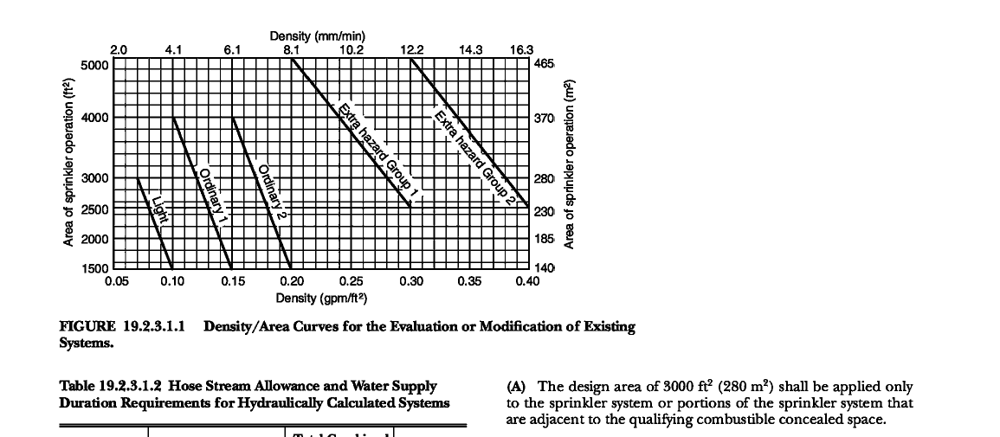
| 用途 | 室內消防栓 gpm | 室內外合計 gpm | 供水延時（分鐘） |
|---|---|---|---|
| 輕危險 | 0/50/100 | 100 | 30 |
| 普通危險 | 0/50/100 | 250 | 60 或 90 |
| 嚴重危險 | 0/50/100 | 500 | 90 或 120 |
Table 19.2.3.1.2－水力計算系統之消防栓用水量餘裕與供水延時；較短延時僅於水流／監督裝置均採電子監督，且監督訊號送達常駐監控站時適用（19.2.3.1.3）。
19.2.3.1.5 無撒水防護之可燃密閉空間（不符合 9.2.1／9.2.2 省略條件者），其鄰近區域之最小撒水動作面積應提高為 3000 ft² (280 m²)，以反映密閉空間可能助長火勢延燒之風險；惟符合特定不燃／限燃或極小面積條件之密閉空間，得免此加嚴規定（詳列情境與 Ch.9.2.1 省略規則呼應）。
19.2.3.2.3 採用快速反應（Quick-Response）撒水頭，於濕式系統、輕/普通危險、天花板高度 ≤20 ft (6.1 m)、無超限未防護天花板凹陷區等條件下，允許依 Figure 19.2.3.2.3.1 縮減設計面積（但設計面積內撒水頭數不得少於 5 顆）。
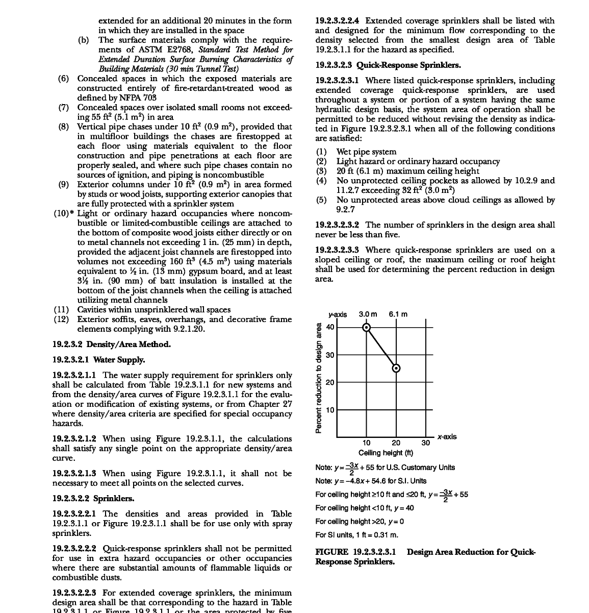
儲存一般要求（General Requirements for Storage）
20.2儲存防護流程
- 依 20.3–20.4 判定商品分類
- 依 20.5 判定儲存方式（密實堆疊、棧板、貨架、層架等）
- 依 20.9 建立儲存高度、建物高度與淨空
- 依 20.10–20.18 套用各儲存方式共通之一般防護要求
- 依 Ch.21–25 選定適用之系統／撒水頭技術
- 依本標準其餘章節設計安裝系統與撒水頭
20.3–20.4商品分類（Commodity Classification）
| 類別 | 定義特徵 |
|---|---|
| Class I | 不燃品，直接置於棧板／單層瓦楞紙箱／收縮膜或紙包裝 |
| Class II | 不燃品，以條板木箱、實木箱、多層瓦楞紙箱等包裝 |
| Class III | 木材、紙、天然纖維或 C 類塑膠製品（可含 ≤5wt% 非發泡或 ≤5vol% 發泡 A/B 類塑膠） |
| Class IV | 含 B 類塑膠、自由流動 A 類塑膠、或紙箱內 5–15wt%非發泡（或 5–25vol%發泡）A 類塑膠 |
| Cartoned/Exposed Group A Plastic | 依非發泡／發泡塑膠含量與是否外露，進一步分為 4 個等級（詳 20.4.5，須查 Figure 20.4.3.3(a)/(b) 判定混合塑膠情形） |
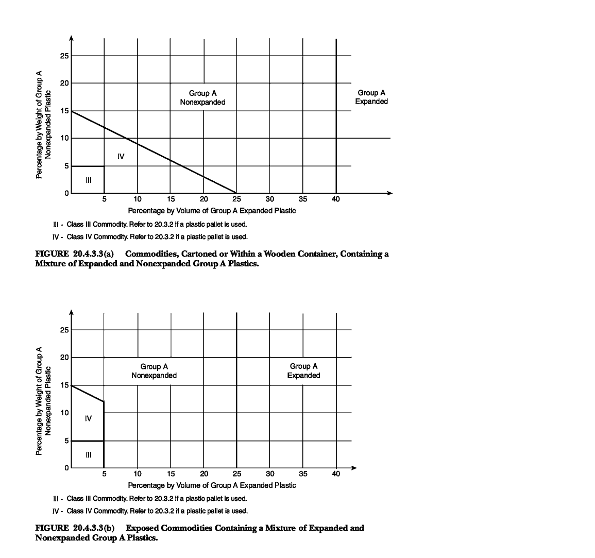
塑膠／彈性體 A/B/C 分組（20.4.5–20.4.7）
- A 類：ABS、壓克力、尼龍、PET、聚乙烯、聚丙烯、聚苯乙烯、PU、PVC（高塑化）、SBR 橡膠等——依防護規則視同 Class IV 或更高
- B 類：氯丁橡膠、ECTFE/ETFE/FEP 氟塑膠、矽橡膠——視同 Class IV
- C 類：PCTFE/PTFE、三聚氰胺、酚醛樹脂、PVC（軟質）、PVDC、PVDF——視同 Class III
棧板材質對分類之影響（20.3.2）
- 未強化聚丙烯／高密度聚乙烯塑膠棧板：Class I–IV 商品分類提高 1 級
- 強化塑膠棧板（含鋼或玻纖強化）：提高 2 級（Class IV 則提高至紙箱非發泡 A 類塑膠等級）
- 僅限「天花板撒水頭防護＋K-16.8(240) 以上噴頭」者，得免因塑膠棧板而提高分類
- A 類塑膠商品使用塑膠棧板不需提高分類
混合商品儲存（20.4.13）
原則上應以現場最高分類商品之標準防護全區；惟符合下列條件者，允許以較低分類設計：40,000 ft² (3720 m²) 內存在 ≤10 個較高危害棧板、且各方向（含對角線）均無相鄰higher-hazard棧板堆疊（若天花板防護基準為 Class I/II，則較高危害棧板上限降為 5 個）；或以實體區隔將高危害商品限制於獨立防護區並依其危害等級全區防護。
20.5儲存方式與貨架通道空間
可移動式貨架（Movable Racks）與可攜式貨架（Portable Racks）原則比照多排貨架（Multiple-Row Racks）防護標準辦理。走道（Aisle）除 Ch.21–25 另有明確允許外，不得受阻。
20.9–20.19共通防護要求（節錄）
閒置棧板與立柱防護
20.17 閒置棧板堆置有其專屬防護規定；20.18 貨架儲存與橡膠輪胎儲存之立柱（Column）於特定高度需加以防護，避免立柱受火失效造成貨架倒塌擴大火勢。
實心層架與室設計法
20.19 實心層架貨架（Solid Shelves）因阻斷撒水穿透，須搭配貨架內撒水頭；20.11 室設計法（Room Design Method）與 20.12 高發泡泡沫系統為特定場所之替代防護方式。
密度面積控制模式（CMDA）高架儲存保護（Protection of High Piled Storage Using CMDA Sprinklers）
21.1總則
- 設計密度 ≤0.2 gpm/ft² (8.2 mm/min)：得採 K-5.6 (80) 以上標準反應撒水頭
- 設計密度 >0.2–0.34 gpm/ft² (8.2–13.9 mm/min)：須採 K-8.0 (115) 以上撒水頭
- 設計密度 >0.34 gpm/ft² (13.9 mm/min)：須採經列名適用於儲存用途之 K-11.2 (160) 以上撒水頭
- 全部調整後之最小設計密度不得低於 0.15 gpm/ft² (6.1 mm/min)（21.1.10.4）
- 高溫等級撒水頭得套用高溫設計密度（通常低於一般溫度設計密度），一般／中溫撒水頭須採一般溫度設計密度（21.1.8–21.1.9）
21.2密實堆疊／棧板／箱式／層架儲存（Class I–IV）
適用於非封裝商品密實堆疊/棧板堆高 ≤30 ft (9.1 m)、層架堆高 ≤15 ft (4.6 m)、背對背層架堆高 ≤15 ft 等配置。新設系統設計密度依 Table 21.2.2.2.1（設計面積固定 2000 ft²/185 m²）依「儲存高度 12–30 ft」與「商品 Class I–IV」查表，代表性數據如下：
| 儲存高度 | Class I | Class II | Class III | Class IV |
|---|---|---|---|---|
| 12–15 ft (一般溫) | 0.15 | 0.16 | 0.20 | 0.27 |
| >20–22 ft (一般溫) | 0.23 | 0.25 | 0.32 | 0.43 |
| >28–30 ft (一般溫) | 0.40 | 0.44 | 0.55 | 0.74 |
單位 gpm/ft²；高溫等級撒水頭數值略低（如 12–15ft Class I 為 0.15，30ft Class IV 降為 0.57）。完整表格另含 15–28ft 各級距與高/一般溫對照，請查原文 Table 21.2.2.2.1。
21.2.3 封裝（Encapsulated）商品堆高 >15–20 ft，須用 K-11.2 以上撒水頭，且設計密度大幅提高（Class I：0.46 gpm/ft²；Class II：0.53；Class III/IV：0.6 gpm/ft²，設計面積 2000 ft²）——封裝會顯著阻礙撒水穿透，是此章節中對防護要求影響最大的單一因子之一。
21.3塑膠與橡膠商品之密實堆疊/棧板/箱式/層架儲存
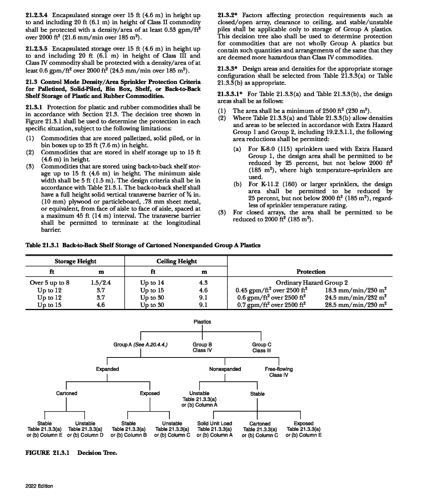
| 儲存高度／天花板高度 | A | B | C | D | E |
|---|---|---|---|---|---|
| ≤12ft／≤15ft | 0.2 | EH2 | 0.3 | EH1 | EH2 |
| 15ft／≤20ft | 0.3 | 0.6 | 0.5 | 0.4 | 0.45 |
| 25ft／≤30ft | 0.45 | 0.9 | 0.7 | 0.55 | 0.85 |
Table 21.3.3(a) 節錄（單位 gpm/ft²，設計面積最小 2500 ft²/230 m²；EH1/EH2＝依嚴重危險一/二級密度）；天花板高度 >35 ft 不允許使用本表方式防護。完整表格另含 >5–12ft、20ft、多組高度區間，請查原文。
21.3.1(3) 背對背層架儲存另需設置貫穿走道面至走道面、間隔 ≤45 ft (14 m) 之全高實心橫向隔板（依 Table 21.3.1，密度 0.45–0.7 gpm/ft² over 2500 ft²，隨儲存/天花板高度遞增）。
21.4貨架儲存（Class I–IV，堆高 >12–25 ft）
單/雙排貨架依 Table 21.4.1.2.1.1(a)–(e)（依儲存高度級距 15/20/25 ft、走道寬度、商品類別、是否封裝、是否須設貨架內撒水頭）查表決定天花板密度；例如儲存高度 ≤15 ft、走道 4 ft、Class I、免貨架內撒水頭時，一般溫撒水頭密度為 0.22 gpm/ft²（高溫 0.19）。多排貨架與更高儲存（>25 ft，需搭配貨架內撒水頭）另依 21.4.1.3 及 Ch.25 之貨架內撒水頭準則辦理，兩章須合併查閱。
21.5–21.8塑膠貨架儲存、橡膠輪胎與捲筒紙
Group A 塑膠之單/雙/多排貨架儲存（堆高 ≤25 ft 見 21.5；>25 ft 見 21.6）、橡膠輪胎儲存（21.7）與捲筒紙儲存（21.8）之 CMDA 設計基準，均另立專章查表，其密度普遍高於同高度之 Class I–IV 一般商品，且高度分界點與貨架內撒水頭搭配規則亦各自不同，設計時應逐章對照，不可互相援用。
CMSA 儲存應用要求（CMSA Requirements for Storage Applications）
22.1.5開放式木格柵構造下之 CMSA
CMSA 裝設於開放式木格柵構造下方時，須符合下列之一：K-11.2(160) 撒水頭最小壓力 50 psi (3.4 bar)；K-16.8(240) 撒水頭最小壓力 22 psi (1.5 bar)；或依 Table 22.4 查得之 K-19.6(280)／K-11.2/16.8（格柵每 20 ft 以同材料做滿深度分隔者）壓力值。
22.2–22.7各儲存配置設計基準（節錄 Table 22.2）
Table 22.2（棧板／密實堆疊 Class I–IV，含封裝與非封裝）依商品類別 × 最大儲存高度 × 最大天花板高度 × K 值／方向 × 濕式或乾式系統決定最小工作壓力，代表性數據如下：
| 商品 | 儲存高度 | 天花板高度 | K值/方向 | 系統 | 最小壓力 |
|---|---|---|---|---|---|
| Class I/II 棧板 | 25 ft | 30 ft | K-11.2 直立式 | 濕式 | 25 psi (1.7 bar) |
| Class I/II 棧板 | 25 ft | 30 ft | K-25.2 懸吊式 | 濕式 | 10 psi (0.7 bar) |
| Class IV 棧板 | 20 ft | 30 ft | K-11.2 直立式 | 濕式 | 50 psi (3.4 bar) |
| Class IV 棧板 | 20 ft | 30 ft | K-25.2 懸吊式 | 濕式 | 10 psi (0.7 bar) |
ESFR 儲存應用要求（ESFR Requirements for Storage Applications）
- 23.1.2 ESFR 系統與標準反應型撒水頭系統相鄰時，須設不燃、深度 ≥2 ft (600mm) 之擋煙垂壁，垂壁下方維持 ≥4 ft (1.2m) 淨寬走道分隔（與 Ch.14.2.5 呼應）
- 23.1.3.1–.2 ESFR 不得用於防護實心層架貨架（除非層架另設貨架內撒水頭依 Ch.25），亦不得用於防護開放頂容器（Open-Top Container）儲存
- 23.2.2 設計面積原則為最不利之 12 顆撒水頭（3 條支管，每管 4 顆）
23.3Class I–IV 與 A 類塑膠棧板/密實堆疊/貨架儲存
依 Table 23.3.1，依商品類別（Class I-IV 紙箱非發泡／發泡塑膠、外露非發泡／發泡塑膠）× 天花板高度 × K 值 × 方向查最小工作壓力，代表性數據：
| 商品／天花板高度 | K-14.0懸吊 | K-16.8懸吊 | K-25.2懸吊 |
|---|---|---|---|
| Class I-IV／25-30ft | 50 psi | 35 psi | 15 psi |
| Class I-IV／35ft | 75 psi | 52 psi | 20 psi |
| 外露非發泡塑膠／25-30ft | 50 psi | 35 psi | — |
外露發泡 A 類塑膠堆高 45ft 時，Table 23.3.1 註記「須設貨架內撒水頭，見 Ch.25」——這是 ESFR 天花板單獨防護失效邊界的明確標示。
23.4外露發泡 A 類塑膠貨架特殊設計
須採 K-25.2 (360) 中溫懸吊式 ESFR，撒水盤距天花板 ≤14 in. (350mm)；最小工作壓力：儲存 ≤25ft／天花板≤30ft 為 30 psi (2.0 bar)，儲存 ≤35ft／天花板≤40ft 為 60 psi (4.1 bar)。貨架須設貫穿走道面之全高實心垂直隔板（間隔 ≤16.5 ft/5.0 m），隔板間儲存平面面積 ≤124 ft² (12 m²)。
23.5–23.6橡膠輪胎與捲筒紙
依 Table 23.5（輪胎，僅限濕式系統，設計區域依 23.2.2 決定形狀）與 Table 23.6（捲筒紙，依重量分級 Heavyweight/Mediumweight/Tissue 及 Closed/Standard/Open 排列方式），分別依 K 值、方向、壓力決定最大允許儲存／天花板高度。代表性數據：輪胎堆高 ≤25ft、天花板 30ft、K-14.0 懸吊/直立需 50 psi；捲筒紙 Heavyweight 天花板 30ft、K-14.0 需 50 psi，可防護儲存高達 25 ft。
Ch.20–25 替代撒水系統設計（Alternative Sprinkler System Designs）
24.2–24.3棧板/密實堆疊與無底板貨架設計基準（節錄）
Table 24.2.1／24.3.1（CMSA、K-25.2，Class I-IV 及紙箱非發泡塑膠）依儲存/天花板高度組合決定所需撒水頭數與最小壓力及對應之保護面積（12×12ft/144ft² 或 14×14ft/196ft²）：儲存 20ft／天花板 30ft 需 6 顆撒水頭、30 psi；儲存 25–30ft／天花板 35ft 需 8 顆撒水頭、40 psi。Table 24.3.2(a)/(b)（CMSA K-25.2，貨架儲存無底板）另訂儲存 25ft／天花板 30ft、直立式 20 psi／懸吊式 15 psi，設計 12 顆撒水頭、線間距 8–12 ft、面積 80–100 ft²。Table 24.3.3（乾式系統標準反應直立式撒水頭，Class I–III 開放式貨架）依儲存高度 35–50 ft 對應天花板 40–55 ft，設計撒水頭數 12–24 顆，最小壓力 15–50 psi（依 15 psi 選項須滿足25 秒最大送水時間，50 psi 選項須滿足20 秒）。
24.4–24.5消防栓水量餘裕與最小障礙物準則
用水量＝本章撒水頭需求＋ Table 20.15.2.6 消防栓水量餘裕，供水延時亦依該表決定。障礙物準則依設計撒水頭數量援引 Ch.13.2.8／Ch.14.2.11／Ch.11.2.5.1 等對應章節之障礙物規則（標準涵蓋 ≤20 顆援引 14.2.11；CMDA/CMSA 標準涵蓋 >20 顆援引 13.2.8；延伸涵蓋 ≤10 顆援引 11.2.5.1／14.2.11.2-.3）；直立式 CMSA/CMDA/ESFR 撒水頭下方 ≤4 in. (100mm) 連續障礙物得忽略不計。
貨架內撒水頭儲存保護（In-Rack Sprinklers）
25.1.1適用範圍
本章適用於 Class I 至 Class IV 商品、Group A 塑膠商品，以及橡膠輪胎等以貨架內撒水頭（In-Rack Sprinklers, IRAS）防護之貨架儲存。除本章另有規定外，Ch.20 儲存一般要求全部適用。
25.1.2章節架構
| 小節 | 內容 |
|---|---|
| 25.1 | 全章通用之一般要求 |
| 25.2 | 雜項儲存（Miscellaneous）及低堆貨架儲存之 IRAS 防護 |
| 25.3 | IRAS 搭配 CMDA 天花板層撒水頭之防護 |
| 25.4 | IRAS 搭配 CMSA 天花板層撒水頭之防護 |
| 25.5 | IRAS 搭配 ESFR 天花板層撒水頭之防護 |
| 25.6 | IRAS 獨立防護（不搭配天花板層撒水頭） |
| 25.7 | 既設雜項／低堆貨架 IRAS 防護之評估或改裝 |
| 25.8 | 既設 Class I–IV（>12 ft 至 25 ft）CMDA 天花板層貨架儲存 IRAS 防護之評估或改裝 |
25.1.3建物鋼構防護
凡依本章規定設置貨架內撒水頭者，建物鋼構免另設特殊防護。
25.1.4貨架內撒水頭系統
25.1.4.2.1 除符合 25.1.4.2.2 或 25.1.4.2.3 之情形外，天花板層與 IRAS 系統應各自設置獨立指示型控制閥與排水閥，使兩系統可分別操作關閉。25.1.4.2.3 於 IRAS 為必要設置且該獨立閥係由天花板系統供應之分區控制閥形式時，得以分區閥替代。25.1.4.3 IRAS 水流警報條文（原文保留未定，Reserved）。
25.1.5開放式貨架儲存
本章之 IRAS 配置方式及天花板／IRAS 設計基準，除另有指明外，均以 3.3.147 所定義之開放式貨架（Open Rack）配置為前提。
25.1.6貨架內撒水頭特性
- IRAS 應為向下型或向上型、標準或快速反應、一般溫度等級，且最小標稱 K 值為 K-5.6 (80)（除另有指明外）
- 鄰近熱源之 IRAS 應依 9.4.2 採中溫或高溫等級
- IRAS 之 RTI 等級得與其上方天花板撒水頭不同
- 未受水平隔板遮蔽之 IRAS，應於撒水頭上方加裝防護水盤（Water Shield），或改採經列名之中間層／貨架儲存專用撒水頭
25.1.7貨架內撒水頭水平配置
IRAS 水平位置與間距應依本章各節適用圖示決定，並遵循以下原則：貨架平面圖應以貨架實際佔用範圍（含相鄰走道）核算每顆撒水頭之最大防護面積，惟走道本身不列入面積計算；IRAS 不需符合 Section 9.5 之遮蔽物與離儲存物淨空規定；IRAS 撒水盤放水不得受貨架水平構件阻擋。
縱向通道（Longitudinal Flue）配置
設於縱向通道之 IRAS 應位於縱向與橫向通道之交會處，且不得超過最大水平間距限制；橫向通道間距超過 IRAS 最大允許水平間距時，除交會處外，尚須於橫向通道間增設 IRAS 以滿足間距要求。IRAS 水平間距得小於 6 ft (1.8 m)。
高危害商品局部防護（25.1.7.6）
當 IRAS 係為防護僅佔貨架局部長度之較高危害商品時，應向兩側各延伸最少 8 ft (2.4 m) 或一個貨架跨距（bay）（取較大者）；此類 IRAS 不需跨越走道延伸。
| 條件 | 規定 |
|---|---|
| Class I–IV 貨架儲存 ≤25 ft (7.6 m) | IRAS 得水平安裝，不受貨架立柱位置限制 |
| 貨架儲存 >25 ft (7.6 m) | IRAS 須距貨架立柱側面最少 3 in. (75 mm)（徑向） |
| >25 ft (7.6 m) 採側面撒水頭（Face Sprinklers） | 距立柱 ≥3 in. (75 mm)，且距貨架走道面 ≤18 in. (450 mm) |
25.1.7.10 單排貨架（Single-Row Rack）之 IRAS 除另有指明外，應設於載重面之間任一位置之橫向通道空間內；若單排貨架與相鄰全高牆面之水平距離 ≤2 ft (0.6 m)，該空間得視為雙排貨架之縱向通道空間安裝 IRAS。
25.1.8貨架內撒水頭層位配置
25.1.8.3.2 於 Class I–IV 商品單／雙排貨架儲存 ≤20 ft (6.1 m) 高度之情形，IRAS 與其下方儲存物頂部之垂直淨空得小於 6 in. (150 mm)。IRAS 不需符合 Section 9.5 之遮蔽物與離儲存物淨空規定；所有圖示中 IRAS 之垂直間距均自地板起算。
25.1.9貨架內撒水頭搭配水平隔板
本章各節要求設置之水平隔板（Horizontal Barrier），用途為阻絕火勢垂直延燒，應以金屬薄板、木材或類似材質構成，並延伸至貨架之全長與全深；隔板應貼合安裝於貨架立柱周圍 3 in. (75 mm) 水平範圍內。
25.1.10IRAS 搭配天花板層撒水頭之設計基準
- 最遠端 IRAS 設計壓力不得低於 7 psi (0.5 bar)
- Group A 塑膠商品之 IRAS 設計基準，得援用於相同儲存高度與配置之 Class I–IV 商品防護
- IRAS 系統管徑得依水力計算設計，不受管系表限制
- 因貨架長度較短、實際安裝之 IRAS 數量少於設計指定數量時，IRAS 設計應僅以該貨架實際安裝之撒水頭數量為準
- 除 25.6 獨立防護情形外，天花板層與 IRAS 系統於同一防護區域之流量壓力，應於兩者連接點水力平衡至較高之系統壓力需求
25.1.11Group A 塑膠商品之走道寬度
除另有指明外，Group A 塑膠商品單／雙排貨架儲存之天花板層撒水頭設計基準，適用於走道寬度 ≥3.5 ft (1.1 m) 之情形；走道寬度 <3.5 ft (1.1 m) 者應視為多排貨架防護。
25.1.12Group A 塑膠與 Class I–IV 商品之通用性
本章 Group A 塑膠商品之天花板層與 IRAS 設計基準，得援用於相同儲存高度與配置之 Class I、II、III 或 IV 商品防護。
25.1.13水源供水需求
25.2雜項儲存與低堆貨架儲存之貨架內撒水頭防護
25.2.1雜項貨架儲存（Miscellaneous Rack Storage）
25.2.1.1 本節適用於 Class I–IV 商品、Group A 塑膠商品及橡膠輪胎，儲存高度 ≤12 ft (3.7 m) 之雜項貨架儲存。
IRAS 設計（25.2.1.2）
以水力上最不利之相鄰 4 顆 IRAS為設計基礎，最遠端 IRAS 最小流量 22 gpm (83 L/min)。
水平間距與消防栓（25.2.1.3, 25.2.1.5）
IRAS 最大允許水平間距為 10 ft (3.0 m)；雜項儲存防護免設消防栓接頭。
25.2.1.4 天花板層撒水頭設計：於 ≤32 ft (9.8 m) 天花板高度下，設計基準為 0.20 gpm/ft² (8.2 mm/min) over 1500 ft² (140 m²)；其餘安裝準則及密度／面積修正係數，比照 Section 19.1 一般危險二級（Ordinary Hazard Group 2）規則辦理，且不受限於 2:12 (16.7%) 屋頂坡度之上限。
25.2.2低堆貨架儲存（Low-Piled Rack Storage）
25.2.2.1 本節適用於：(1) Class I–IV 商品貨架儲存 ≤12 ft (3.7 m)；(2) Group A 塑膠商品貨架儲存 ≤5 ft (1.5 m)。
25.2.2.2–25.2.2.3 IRAS 設計與水平間距規則與 25.2.1 雜項儲存完全相同：以相鄰 4 顆 IRAS、最小 22 gpm (83 L/min)、最大水平間距 10 ft (3.0 m)。
| 情境（25.2.2.4–25.2.2.5） | 天花板層設計基準 |
|---|---|
| 低堆貨架（非雜項儲存）搭配 IRAS | 0.20 gpm/ft² (8.2 mm/min) over 1500 ft² (140 m²) |
| 實心層架（Solid Shelves）Class I–IV ≤12 ft，搭配依 20.19 設置之 IRAS | 0.20 gpm/ft² (8.2 mm/min) over 1500 ft² (140 m²) |
| 實心層架 Group A 塑膠 ≤5 ft，搭配依 20.19 設置之 IRAS | 0.20 gpm/ft² (8.2 mm/min) over 1500 ft² (140 m²) |
同雜項儲存規定，低堆貨架儲存之天花板層系統不受限於 2:12 (16.7%) 屋頂坡度之上限。
25.3貨架內撒水頭搭配 CMDA 天花板層撒水頭之防護
25.3.1總則
25.3.1.1 適用於未達雜項儲存定義之貨架儲存，IRAS 系統設計（操作顆數與最遠端最小流量）搭配 CMDA 天花板層撒水頭時，應依 Table 25.3.1.1 辦理，摘錄如下：
| 商品分類 | 貨架型式 | 儲存高度 | IRAS 層數 | IRAS 設計（顆數 @ 流量） |
|---|---|---|---|---|
| Class I／II／III | Open | ≤25 ft (7.6 m) | 1 層 | 6 @ 22 gpm (83 L/min) |
| Open | ≤25 ft (7.6 m) | >1 層 | 10（頂 2 層各 5 顆）@ 22 gpm (83 L/min) | |
| Open／實心層架 | >25 ft (7.6 m) | 1 層 | 6 @ 30 gpm (114 L/min) | |
| Open／實心層架 | >25 ft (7.6 m) | >1 層 | 10（頂 2 層各 5 顆）@ 30 gpm (114 L/min) | |
| Class IV | Open | ≤25 ft (7.6 m) | 1 層 ／ >1 層 | 8 @ 22 gpm (83 L/min) ／ 10（頂2層各5顆）@ 22 gpm |
| 實心層架 | ≤25 ft／>25 ft | >1 層 | 14（頂 2 層各 7 顆）@ 30 gpm (114 L/min) | |
| Group A 塑膠 | Open | ≤25 ft (7.6 m) | 1 層 ／ >1 層 | 8 @ 22 gpm (83 L/min) ／ 14（頂2層各7顆）@ 22 gpm |
| Open／實心層架 | >25 ft (7.6 m) | 1 層 ／ >1 層 | 8 @ 30 gpm (114 L/min) ／ 14（頂2層各7顆）@ 30 gpm | |
| 橡膠輪胎 | Open | ≤20 ft (6.1 m) | 1 層 | 12 @ 30 gpm (114 L/min) |
25.3.1.2 CMDA 天花板層撒水頭設計基準（搭配 IRAS）依商品類型與封裝狀態分流至以下各節：Class I–IV 外露非封裝見 25.3.2.1；外露封裝或紙箱包裝（封裝／非封裝）見 25.3.2.2；紙箱包裝 Group A 塑膠見 25.3.2.3；外露非膨脹 Group A 塑膠見 25.3.2.4；橡膠輪胎見 25.3.2.5。25.3.1.2.4–25.3.1.2.5 CMDA 天花板層系統供水依本節設計需求決定，且設計面積應符合 28.2.4.2.1。25.3.1.3 CMDA 天花板層撒水頭特性（型式、間距等）依 Figure 25.3.1.3 辦理。
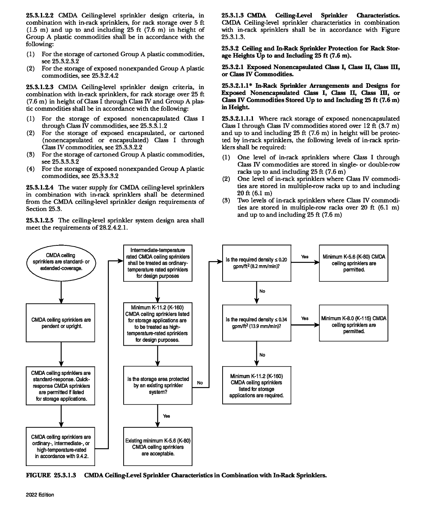
25.3.2儲存高度 ≤25 ft (7.6 m) 之天花板層與 IRAS 防護
25.3.2.1外露非封裝（Exposed Nonencapsulated）Class I–IV 商品
25.3.2.1.1.1 儲存 >12 ft 至 ≤25 ft (7.6 m) 者，IRAS 層數規則如下：
- Class I–IV 單／雙排貨架 ≤25 ft (7.6 m)：1 層 IRAS
- Class IV 多排貨架 ≤20 ft (6.1 m)：1 層 IRAS
- Class IV 多排貨架 >20 ft 至 ≤25 ft (7.6 m)：2 層 IRAS
各 Class（I／II／III／IV）之 IRAS 配置圖分別列於 Figure 25.3.2.1.1.2 至 25.3.2.1.1.6，依「1 層」「多層非逐層」「逐層」三種佈置各有對應圖示；圖中並標示 IRAS 最小操作顆數（Class I/II/III 為 6 顆或 10 顆〔頂 2 層各 5 顆〕；Class IV 為 8 或 14 顆〔頂 2 層各 7 顆〕），皆以 22 gpm (83 L/min) 為基準流量。
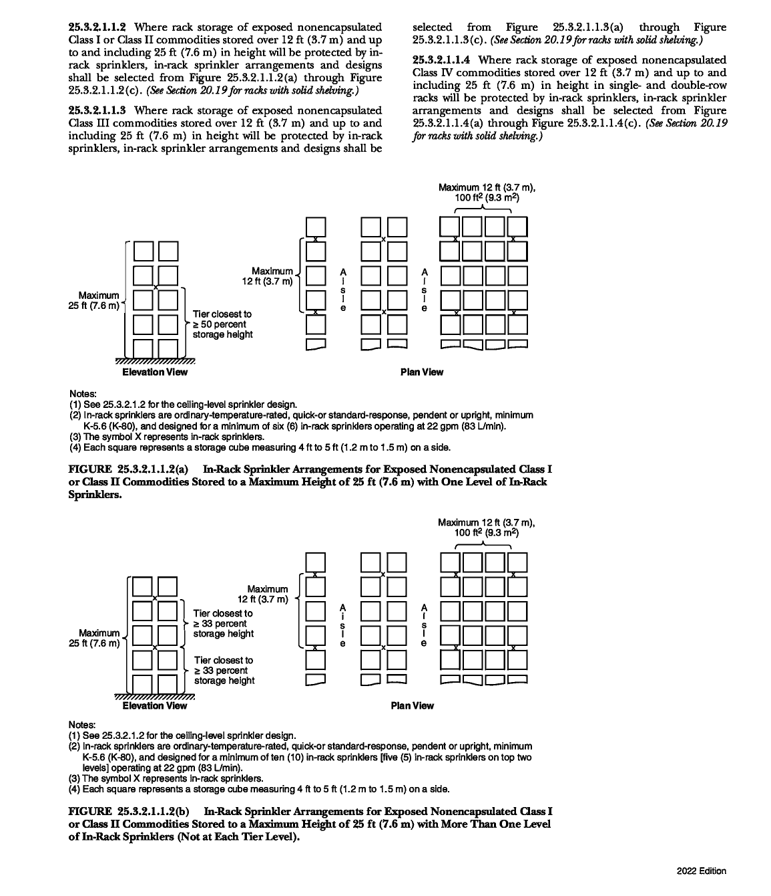
25.3.2.1.2 天花板層 CMDA 設計密度依 Table 25.3.2.1.2.1(A)(a)–(d)（分別對應 Class I/II/III/IV），設計面積固定 2000 ft² (186 m²)，代表性數據如下（Class I，Table (a)）：
| 儲存高度／天花板高度 | 貨架配置 | 走道寬度 | IRAS 安裝層數 | 高溫等級密度 | 一般／中溫等級密度 |
|---|---|---|---|---|---|
| 15 ft (4.6 m)／35 ft (10.7 m) | 單／雙排 | 8 ft (2.4 m) | 1 層 | 0.15 (6.1) | 0.15 (6.1) |
| 15 ft (4.6 m)／35 ft (10.7 m) | 單／雙排 | 4 ft (1.2 m) | 1 層 | 0.15 (6.1) | 0.15 (6.1) |
| 25 ft (7.6 m)／45 ft (13.7 m) | 單／雙排 | 8 ft (2.4 m) | 1 層 | 0.19 (7.7) | 0.22 (8.8) |
| 25 ft (7.6 m)／45 ft (13.7 m) | 單／雙排 | 4 ft (1.2 m) | 1 層 | 0.23 (9.4) | 0.26 (10.6) |
| 25 ft (7.6 m)／45 ft (13.7 m) | 多排 | 不限 | 1 層 | 0.23 (9.4) | 0.26 (10.6) |
25.3.2.1.2.2 淨空限制（Clearance）：上表密度係以儲存物頂部至天花板最大淨空 20 ft (6.1 m) 為基礎。淨空超過 20 ft 時，應擇一辦理：(1) 以不超過 25 ft (7.6 m) 之理論儲存高度查表，使淨空回歸 20 ft；或 (2) 於最頂層儲存物正下方及每一通道交會處，增設一層快速反應 IRAS。
25.3.2.2外露封裝，或紙箱包裝（封裝／非封裝）Class I–IV 商品
IRAS 層數規則與 25.3.2.1 完全相同（單／雙排 ≤25 ft 用 1 層；Class IV 多排 ≤20 ft 用 1 層、>20–25 ft 用 2 層），圖示同樣依 Class 別與佈置方式分列（Figure 25.3.2.2.1.2 至 25.3.2.2.1.6）。天花板層 CMDA 密度依 Table 25.3.2.2.2.1(A)(a)–(d)，設計面積同為 2000 ft² (185 m²)，但因商品封裝／紙箱包裝阻礙撒水穿透，密度普遍高於同高度之外露非封裝商品：
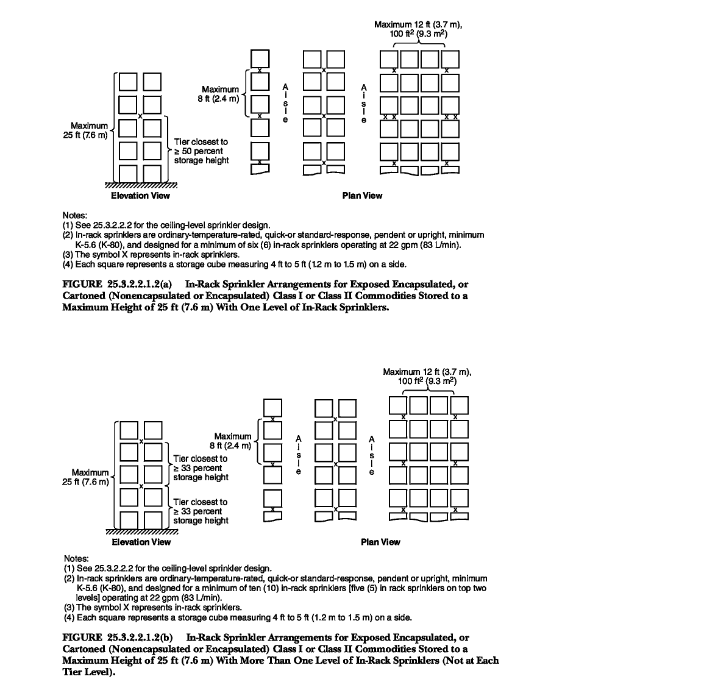
| 商品 | 儲存高度／天花板高度 | 貨架配置 | 走道寬度 | IRAS 層數 | 高溫密度 | 一般／中溫密度 |
|---|---|---|---|---|---|---|
| Class I | 25 ft／45 ft | 單／雙排 | 4 ft | 1 層 | 0.30 (12.2) | 0.35 (14.3) |
| Class III | 25 ft／45 ft | 多排 | <8 ft | 1 層 | 0.36 (14.7) | 0.41 (16.7) |
| Class IV | 25 ft／45 ft | 多排 | <8 ft (<2.4 m) | 2 層 | 0.59 (24.1) | 0.66 (26.9) |
25.3.2.2.2.2 淨空規則與 25.3.2.1.2.2 相同：最大淨空 20 ft (6.1 m)，超過時比照辦理理論高度查表或加設快速反應 IRAS 層。
25.3.2.3紙箱包裝 Group A 塑膠商品
適用於紙箱包裝（封裝或非封裝）Group A 塑膠商品，儲存 >5 ft (1.5 m) 至 ≤25 ft (7.6 m)。IRAS 配置與天花板層 CMDA 設計合併以單一系列圖示表示——Figure 25.3.2.3.1.1(a) 至 (g)，每張圖同時標示：天花板密度／設計面積選項（例如 25 ft 天花板下 0.30 gpm/ft² over 2000 ft²）、IRAS 層數與操作顆數、垂直與水平間距限制。25.3.2.3.2.2–25.3.2.3.2.3 相同天花板高度之不同儲存高度間得線性內插，但不同天花板高度間不得內插。
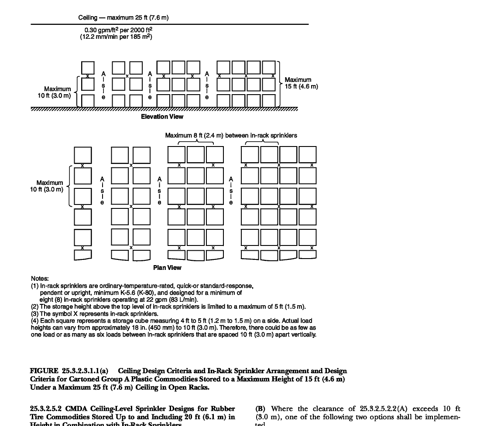
25.3.2.3.2.4 淨空限制：本節密度係以儲存物頂部至天花板最大淨空 10 ft (3.0 m) 為基礎（較 Class I–IV 商品之 20 ft 更嚴格，反映 Group A 塑膠更高之火災成長率）；超過時比照辦理理論高度查表，或加設一層快速反應 IRAS。
25.3.2.4外露非膨脹（Nonexpanded）Group A 塑膠商品
25.3.2.4.1 適用於外露非膨脹 Group A 塑膠商品（封裝或非封裝），儲存 >5 ft (1.5 m) 至 ≤25 ft (7.6 m)，IRAS 配置與設計依 Figure 25.3.2.4.1(a) 至 (e) 選定（貨架設實心層架者另見 Section 20.19）。25.3.2.4.2 天花板層 CMDA 密度與操作面積同樣整合於 Figure 25.3.2.4.1(a)–(e) 圖中直接標示（而非獨立表格），依儲存高度提供多組「Option」供選（例如 15 ft 儲存／25 ft 天花板：0.30 gpm/ft² over 2000 ft²，IRAS 8 顆 @22 gpm；25 ft 儲存／35 ft 天花板：Option 1 為 0.80 gpm/ft² over 1500 ft²＋1 層 IRAS 8 顆 @30 gpm，或 Option 2 為 0.30 gpm/ft² over 2000 ft²＋1 層 IRAS 14 顆〔頂層 7 顆〕@30 gpm）。
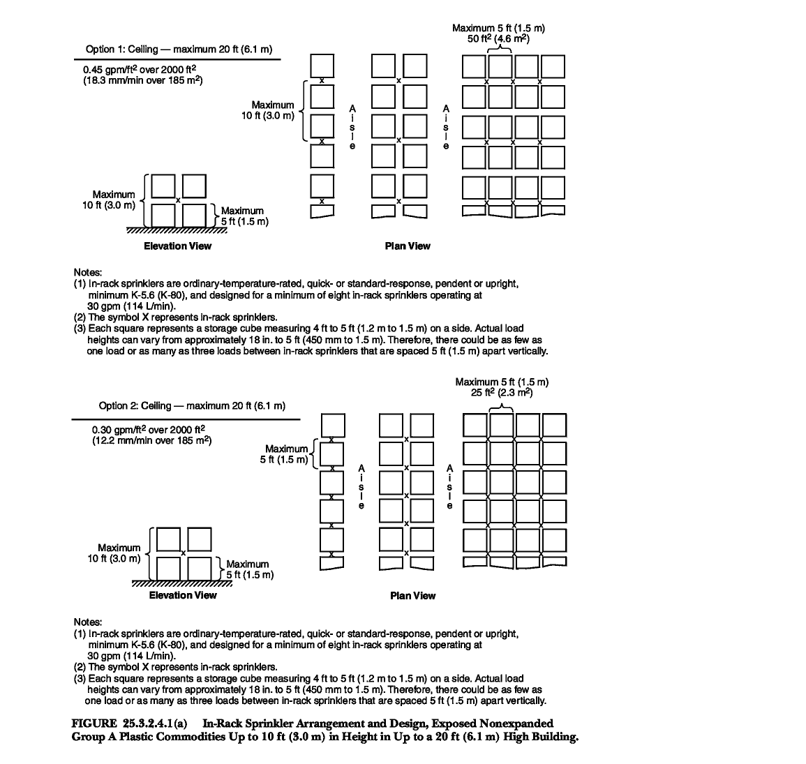
25.3.2.4.2.2 淨空限制：與紙箱包裝 Group A 塑膠相同，最大淨空 10 ft (3.0 m)；超過時比照理論高度查表或加設快速反應 IRAS 層之處理方式辦理。
25.3.3儲存高度超過 25 ft (7.6 m) 之貨架儲存配置
25.3.2（前一節已述）僅涵蓋儲存高度 ≤25 ft 之 CMDA 組合設計；一旦貨架儲存高度超過 25 ft (7.6 m)，25.3.3 即接手，並依商品種類分為四個平行子節，每一子節皆採相同的「兩步驟」查表邏輯：
- 第一步——選定貨架內撒水頭配置圖：依商品類別、單/雙/多排貨架，從對應的 Figure 系列（如 25.3.3.1.1.1(a)–(f)）中選出撒水頭層數、垂直與水平間距、與貨架內撒水頭上方允許之最大儲存高度（絕大多數情形為 10 ft (3.0 m)，Class IV 於多排貨架時降為 5 ft (1.5 m)）。
- 第二步——查對應之天花板 CMDA 密度／面積：同一組 Figure 的圖說即附有天花板撒水頭之設計密度與面積（例如「0.25 gpm/ft² over 2000 ft²」），依一般溫度或高溫等級撒水頭二擇一適用。
25.3.3.1外露非封裝（Exposed Nonencapsulated）Class I–IV 商品
依商品危險等級再細分三組貨架內撒水頭配置圖，各自對應不同天花板密度／面積：
| 商品類別（外露非封裝） | 撒水頭配置圖範圍 | CMDA 天花板密度（一般溫／高溫，均 over 2000 ft²） |
|---|---|---|
| Class I | Figure 25.3.3.1.1.1(a)–(f) | 0.25 gpm/ft² (10.2 mm/min) ／ 0.35 gpm/ft² (14.3 mm/min) |
| Class I、II 或 III | Figure 25.3.3.1.1.2(a)–(g) | 0.30 gpm/ft² (12.2 mm/min) ／ 0.40 gpm/ft² (16.3 mm/min) |
| Class I、II、III 或 IV（混合／Class IV 專屬圖） | Figure 25.3.3.1.1.3(a)–(f) | 0.35 gpm/ft² (14.2–15.1 mm/min) ／ 0.45 gpm/ft² (18.3 mm/min) |
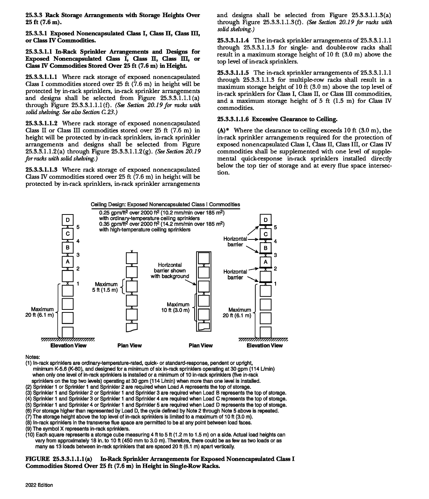
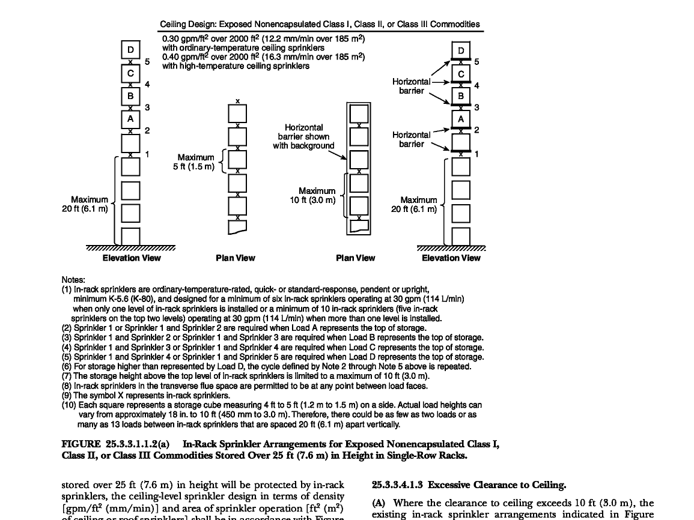
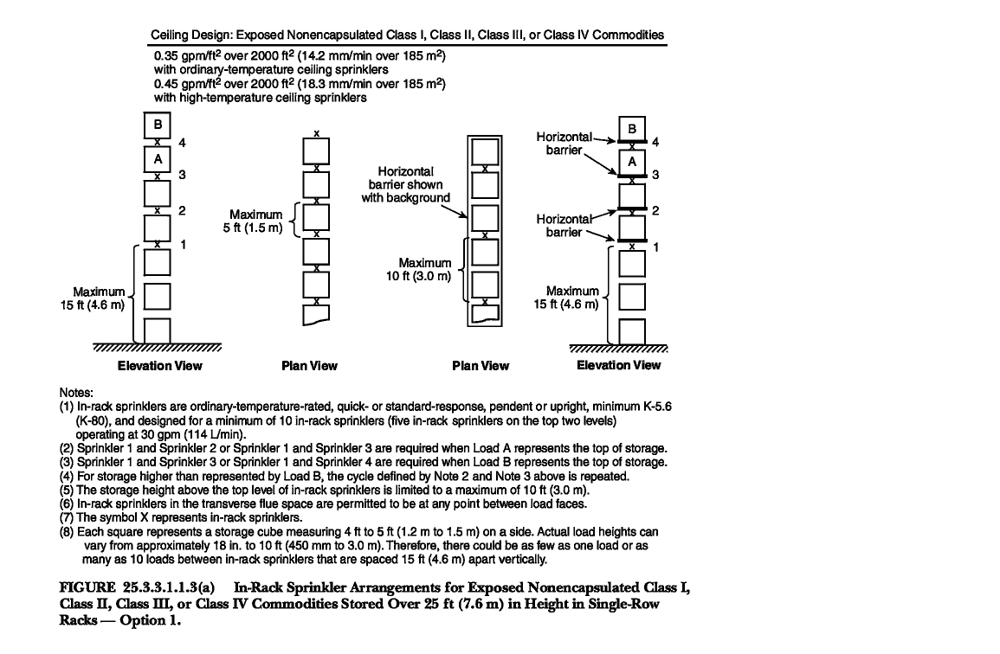
25.3.3.1.1.4–.1.1.5 單/雙排貨架之貨架內撒水頭上方最大儲存高度限 10 ft (3.0 m)；多排貨架則 Class I–III 仍為 10 ft，但 Class IV 降為 5 ft (1.5 m)——多排貨架深度大、火場蔓延風險高，Class IV 商品的高蓄熱特性使允許的「撒水頭上方裸露儲存高度」被壓縮一半。
25.3.3.1.1.6 天花板淨空超過 10 ft (3.0 m)時，須於最頂層儲存正下方、每一通風流道交叉點增設一層快速反應型補充貨架內撒水頭；補充後，天花板系統設計改以「淨空 10 ft」計算即可（不必因淨空過大而加重天花板密度）。
25.3.3.2外露封裝，或紙箱包裝（封裝／非封裝）Class I–IV 商品
結構與 25.3.3.1 完全對應（同樣三組：Class I／Class I-III／Class I-IV），但因封裝或紙箱包裝會阻礙撒水穿透、遲滯早期偵知，天花板密度全面高於同高度之外露非封裝商品：
| 商品類別（封裝或紙箱包裝） | 撒水頭配置圖範圍 | CMDA 天花板密度（一般溫／高溫，均 over 2000 ft²） |
|---|---|---|
| Class I | Figure 25.3.3.2.1.1(a)–(f) | 0.31 gpm/ft² (12.6 mm/min) ／ 0.44 gpm/ft² (17.9 mm/min) |
| Class I、II 或 III | Figure 25.3.3.2.1.2(a)–(g) | 0.37 gpm/ft² (15.1 mm/min) ／ 0.50 gpm/ft² (20.4 mm/min) |
| Class I、II、III 或 IV | Figure 25.3.3.2.1.3(a)–(f) | 0.44 gpm/ft² (17.9 mm/min) ／ 0.56 gpm/ft² (22.8 mm/min) |
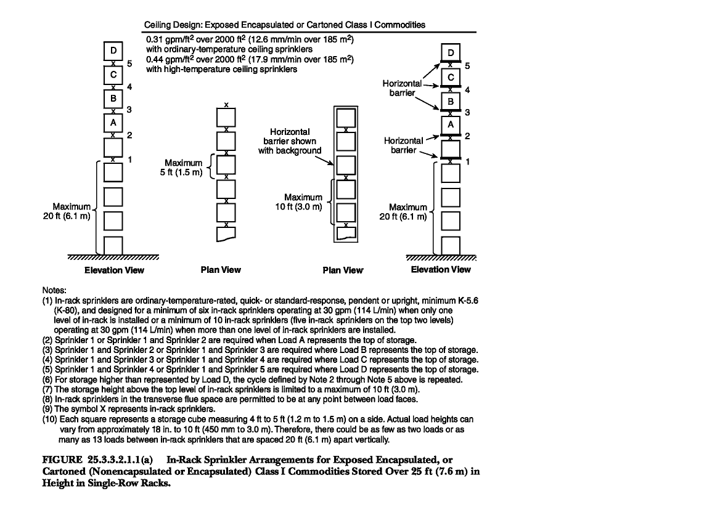
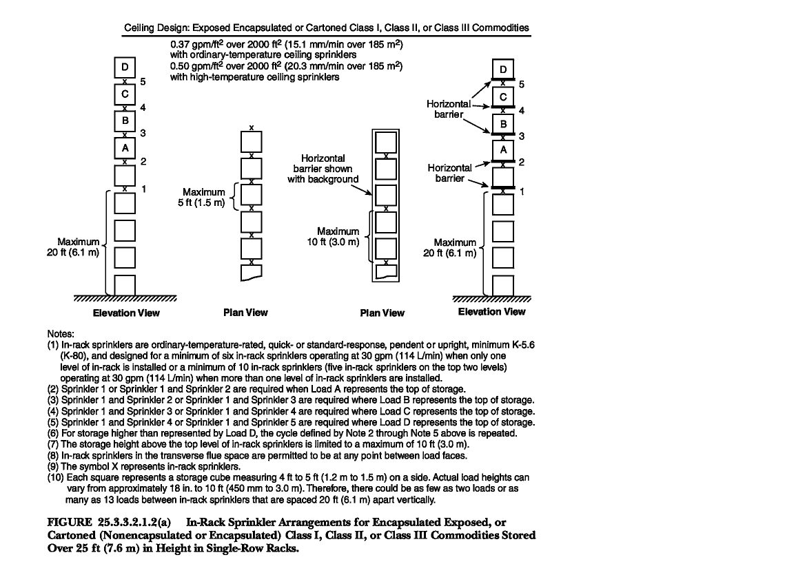
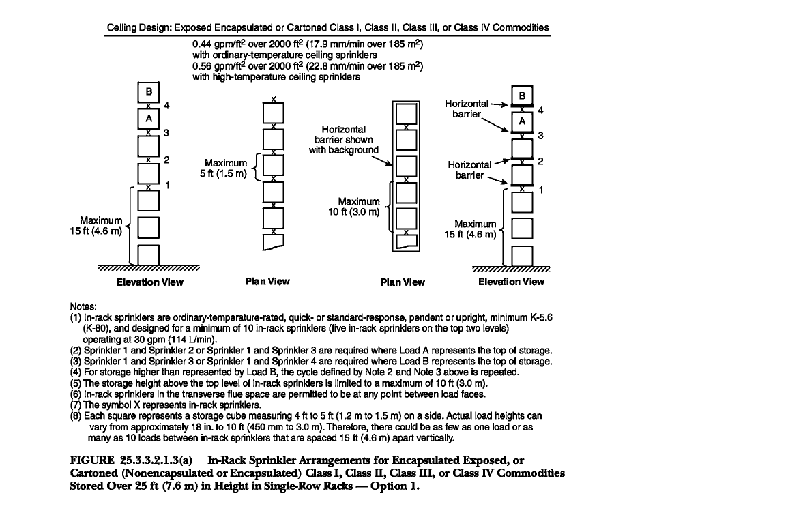
貨架內撒水頭上方最大儲存高度限制（25.3.3.2.1.4–.2.1.6）與淨空超過 10 ft 之補充撒水頭規則，均與 25.3.3.1 相同，不再重複規定內容。
封裝／紙箱包裝 vs. 外露非封裝——密度差異
同為 Class I 商品，天花板一般溫密度自外露非封裝 0.25 gpm/ft² 提高到封裝／紙箱包裝 0.31 gpm/ft²，約增加 24%；同為 Class I–IV 混合，則自 0.35 提高到 0.44 gpm/ft²，增加 26%。封裝／包裝對撒水穿透與早期抑制的不利影響，是本節密度提升的主因。
貨架內撒水頭最小放水量／數量
各圖說一致要求貨架內撒水頭為一般溫、快速或標準反應、下垂型或直立型，最小 K-5.6 (K-80)；單層配置最少 6 顆＠30 gpm，雙層配置最少 10 顆（頂兩層各 5 顆）＠30 gpm，設計流量需求隨層數增加而提高。
25.3.3.3紙箱包裝 A 類塑膠（Cartoned Group A Plastic）商品
紙箱包裝 A 類塑膠儲存超過 25 ft 時，貨架內撒水頭配置選自 Figure 25.3.3.3.1.1(a)–(g)，貨架內撒水頭上方最大儲存高度同樣限 10 ft（25.3.3.3.1.2）；淨空超過 10 ft 時的補充撒水頭規則與前述一致（25.3.3.3.1.3）。CMDA 天花板密度／面積依 25.3.3.3.2 查同一組 Figure 圖說：
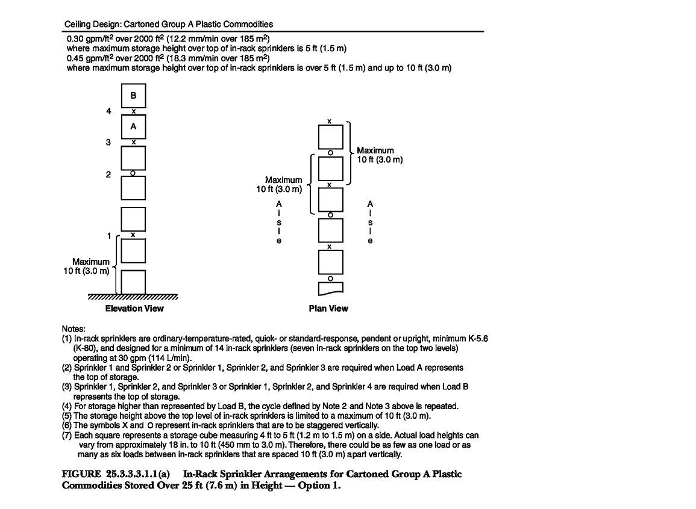
| 商品 | 一般溫撒水頭 | 高溫撒水頭 | 設計面積 |
|---|---|---|---|
| 紙箱包裝 A 類塑膠 | 0.30 gpm/ft² (12.2 mm/min) | 0.45 gpm/ft² (18.3 mm/min) | 2000 ft² (185 m²) |
25.3.3.4外露非膨脹（Exposed Nonexpanded）A 類塑膠商品
外露非膨脹 A 類塑膠儲存超過 25 ft 時，貨架內撒水頭配置選自 Figure 25.3.3.4.1.1(a)–(d)（僅 4 張圖，較其他商品類別少，反映此類商品貨架配置變化較單純）；CMDA 天花板密度／面積依 25.3.3.4.2 查同一組圖說：
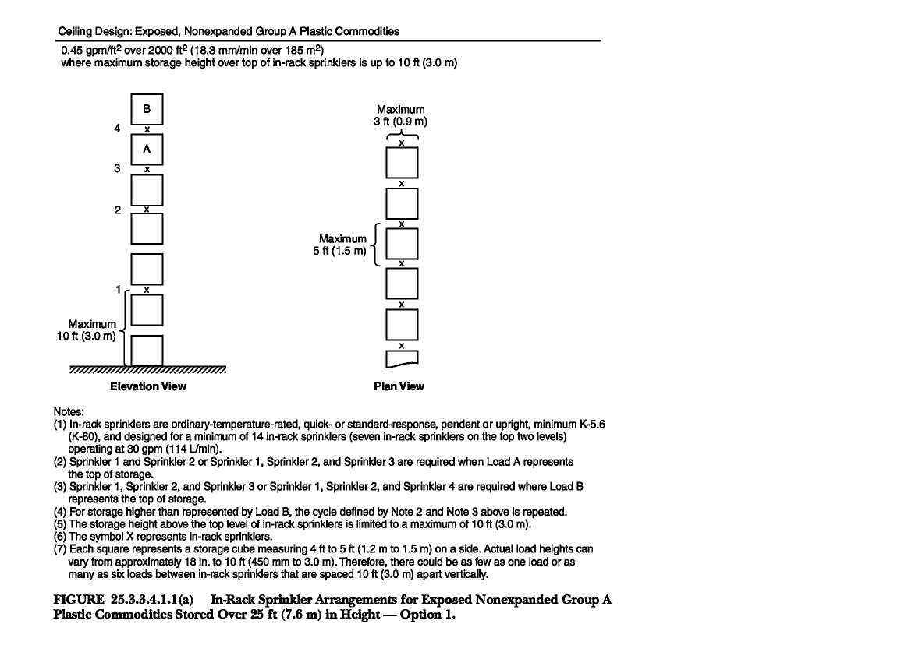
| 商品 | 一般溫撒水頭 | 高溫撒水頭 | 設計面積 |
|---|---|---|---|
| 外露非膨脹 A 類塑膠 | 0.30 gpm/ft² (12.2 mm/min) | 0.45 gpm/ft² (18.3 mm/min) | 2000 ft² (185 m²) |
值得注意的是，紙箱包裝與外露非膨脹兩種 A 類塑膠商品在超過 25 ft 儲存高度時，天花板 CMDA 密度／面積數值完全相同（0.30/0.45 gpm/ft² over 2000 ft²）——與 25.3.3.1–25.3.3.2 中「封裝顯著提高密度」的規律不同，此處差異主要反映在貨架內撒水頭配置圖的層數與間距上，而非天花板密度本身。25.3.3 全節未再涵蓋橡膠輪胎與捲筒紙儲存超過 25 ft 之情形——此二類商品之貨架儲存高度上限本就受其自身章節（Ch.24 捲筒紙、Ch.23 橡膠輪胎）限制，實務上鮮少出現需以本節方式防護的超高儲存案例。
25.4貨架內撒水頭與 CMSA 天花板撒水頭之組合防護
25.4 節轉換設計哲學：天花板改用特定應用控制模式（CMSA）撒水頭（大流量、專為儲存危害設計之特殊撒水頭，如 K-11.2、K-16.8），取代 CMDA 之「密度×面積」概念，改以「天花板撒水頭啟動數量 × 每顆最低動作壓力」作為設計基準，通常可換得較小之啟動撒水頭數與較簡化之貨架內撒水頭配置。適用商品涵蓋 Class I–IV（封裝或非封裝）及 Group A 塑膠（膨脹／非膨脹、外露／紙箱包裝）。
25.4.1設有實心層板貨架之防護
- 25.4.1.1 本章開放式貨架之貨架內撒水頭安裝規定，原則上亦適用於設有實心層板之貨架，僅依本節另行修正。CMSA 天花板設計基準亦可搭配依本節安裝之貨架內撒水頭使用。
- 25.4.1.2 水平間距：Class I–IV 商品最大水平間距 10 ft (3.0 m)；Group A 塑膠商品最大水平間距 5 ft (1.5 m)；實心層板僅局部阻斷開放式貨架時，貨架內撒水頭須延伸超過層板末端至少 4 ft (1.2 m) 至最近通風流道交叉點。
- 25.4.1.3 垂直位置：貨架內撒水頭應設於最高一層實心層板下方之所有層別；實心層板僅局部阻斷時，比照上述規則設置。
25.4.2Class I–IV 或 A 類塑膠商品採 CMSA 天花板撒水頭之貨架內撒水頭配置與設計
25.4.2.1 封裝或非封裝 Class I–IV，或 Group A 塑膠商品，貨架內撒水頭配置選自 Figure 25.4.2.1(a)–(c)：(a) 為 Class I–IV 儲存高度 ≤25 ft 者；(b) 為非膨脹、紙箱包裝或 Group A 塑膠商品儲存高度 ≤25 ft 者；(c) 為封裝或非封裝 Class I、II 商品儲存高度超過 25 ft 者。
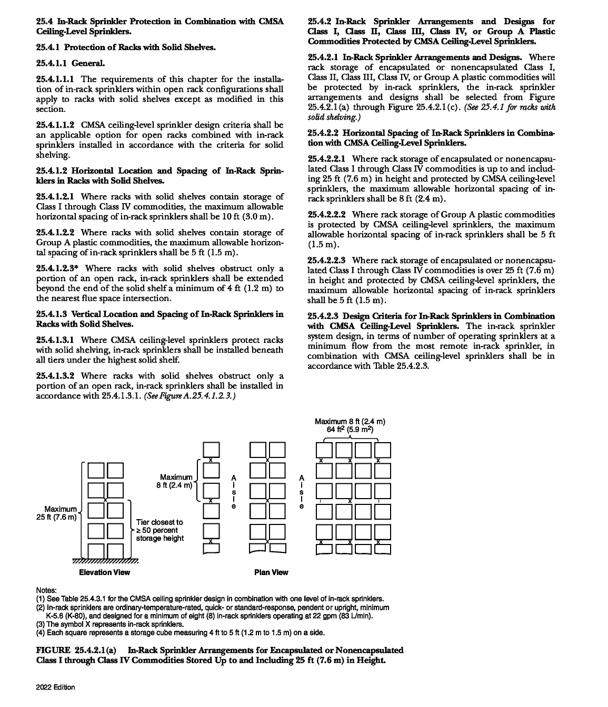
25.4.2.2 水平間距：Class I–IV 商品儲存高度 ≤25 ft 時為 8 ft (2.4 m)；Group A 塑膠商品為 5 ft (1.5 m)；Class I–IV 商品儲存高度超過 25 ft 時，水平間距收緊為 5 ft (1.5 m)（與高處火場蔓延風險上升有關）。
25.4.2.3 貨架內撒水頭本身之設計基準（啟動數量與最低流量）依 Table 25.4.2.3 查表，依商品類別、儲存高度、天花板高度與貨架型式（開放式／實心層板）交叉決定：
| 商品類別 | 最大儲存高度 | 最大天花板高度 | 貨架型式 | 貨架內撒水頭層數 | 設計：撒水頭數 @ 流量 |
|---|---|---|---|---|---|
| Class I、II | 30 ft (9.1 m) | 35 ft (10.7 m) | 開放式 | 1 | 8 @ 22 gpm (83 L/min) |
| 實心層板 | 1 | 6 @ 30 gpm (114 L/min) | |||
| 實心層板 | >1 | 10（頂兩層各5）@ 30 gpm (114 L/min) | |||
| Class III | 25 ft (7.6 m) | 35 ft (10.7 m) | 開放式 | 1 | 8 @ 22 gpm (83 L/min) |
| 實心層板 | 1 | 6 @ 30 gpm (114 L/min) | |||
| 實心層板 | >1 | 10（頂兩層各5）@ 30 gpm (114 L/min) | |||
| Class IV、A 類塑膠 | 25 ft (7.6 m) | 35 ft (10.7 m) | 開放式 | 1 | 8 @ 22 gpm (83 L/min) |
| 實心層板 | 1 | 8 @ 30 gpm (114 L/min) | |||
| 實心層板 | >1 | 14（頂兩層各7）@ 30 gpm (114 L/min) |
上表已完整列出 Table 25.4.2.3 全部三組商品分類（表格本身欄位不多），但實際設計仍應對照原文圖表確認貨架型式定義與間距規定後方可套用。
25.4.3Class I–IV 與 A 類塑膠商品之天花板 CMSA 撒水頭設計（搭配貨架內撒水頭）
25.4.3.1 天花板 CMSA 撒水頭設計，以「最低動作壓力 [psi (bar)]」與「啟動撒水頭數量」表示，依商品類別、最大儲存高度、最大天花板高度、K-Factor／撒水頭方向（皆為直立型 Upright）、系統型式（濕式／乾式）交叉查 Table 25.4.3.1：
| 商品類別 | 最大儲存高度 | 最大天花板高度 | K-Factor | 系統型式 | 啟動撒水頭數 | 最低動作壓力 |
|---|---|---|---|---|---|---|
| Class I 或 II | 30 ft (9.1 m) | 35 ft (10.7 m) | K-11.2 (160) | 濕式／乾式 | 20／30 | 25 psi (1.7 bar) |
| K-16.8 (240) | 濕式／乾式 | 20／30 | 15 psi (1.0 bar) | |||
| Class III | 25 ft (7.6 m) | 30 ft (9.1 m) | K-11.2 (160) | 濕式／乾式 | 15／25 | 25 psi (1.7 bar) |
| Class IV | 25 ft (7.6 m) | 35 ft (10.7 m) | K-11.2 (160) | 濕式 | 20 | 50 psi (3.4 bar) |
| Class IV | 25 ft (7.6 m) | 35 ft (10.7 m) | K-16.8 (240) | 濕式 | 20 | 22 psi (1.5 bar) |
| 非膨脹、紙箱包裝或外露 A 類塑膠 | 25 ft (7.6 m) | 35 ft (10.7 m) | K-11.2 (160) | 濕式 | 30 | 50 psi (3.4 bar) |
25.4.3.2 開放式木格柵（Open Wood Joist）構造：CMSA 天花板撒水頭設於開放式木格柵下方時，除非依 25.4.3.2.2 於每一格柵通道以不超過 20 ft (6.1 m) 間隔做全深度防火填塞，否則最低動作壓力須提高為 K-11.2 撒水頭 50 psi (3.4 bar) 或 K-16.8 撒水頭 22 psi (1.5 bar)（亦即：若確實做好防火填塞，才可直接套用 Table 25.4.3.1 之較低壓力）。
25.4.3.3 補充：CMSA 撒水頭裝設於預動式（Preaction）系統時，Table 25.4.3.1 之貨架內撒水頭設計基準應改採乾式系統（Dry System）欄位之數據，而非濕式系統欄位——此為 25.4 節（CMSA 天花板撒水頭合併貨架內撒水頭防護）之最後一項細部規定，至此 25.4 節結束。
25.5貨架內撒水頭與 ESFR 天花板撒水頭合併防護（In-Rack Sprinkler Protection in Combination with ESFR Ceiling-Level Sprinklers）
25.5.1實心層架貨架之防護
25.5.1.1 本章（Ch.25）對開放式貨架貨架內撒水頭之安裝規定，原則上準用於實心層架貨架，惟依 25.5.1 之修正辦理；ESFR 天花板撒水頭設計基準亦得合併採用「依實心層架規則安裝貨架內撒水頭」之開放式貨架。
- 25.5.1.2.1 實心層架儲存 Class I–IV 商品：貨架內撒水頭最大水平間距 10 ft (3.0 m)
- 25.5.1.2.2 實心層架儲存 Group A 塑膠商品：最大水平間距縮減為 5 ft (1.5 m)
- 25.5.1.2.3* 實心層架僅局部阻擋開放式貨架時，貨架內撒水頭應延伸超出實心層架末端至少 4 ft (1.2 m)，達最近之通道空間交會處
- 25.5.1.3.1 垂直配置：實心層架貨架應於最高實心層架以下之每一層設置貨架內撒水頭（而非依一般開放式貨架之垂直間距規則）
25.5.2貨架內撒水頭特性
ESFR 組合防護所用貨架內撒水頭應為快速反應（quick-response）、一般溫級、最小 K-8.0 (K-115)；除此修正外，25.1.6 之貨架內撒水頭安裝總則仍適用。
25.5.3Class I–IV 及 Group A 塑膠商品之貨架內撒水頭配置與設計
25.5.3.1 封裝或非封裝 Class I–IV 或 Group A 塑膠商品採貨架內撒水頭防護時，配置應依 Figure 25.5.3.1 選定；25.5.3.2 水平間距最大 5 ft (1.5 m)（單一數值，不再依商品類別細分）。
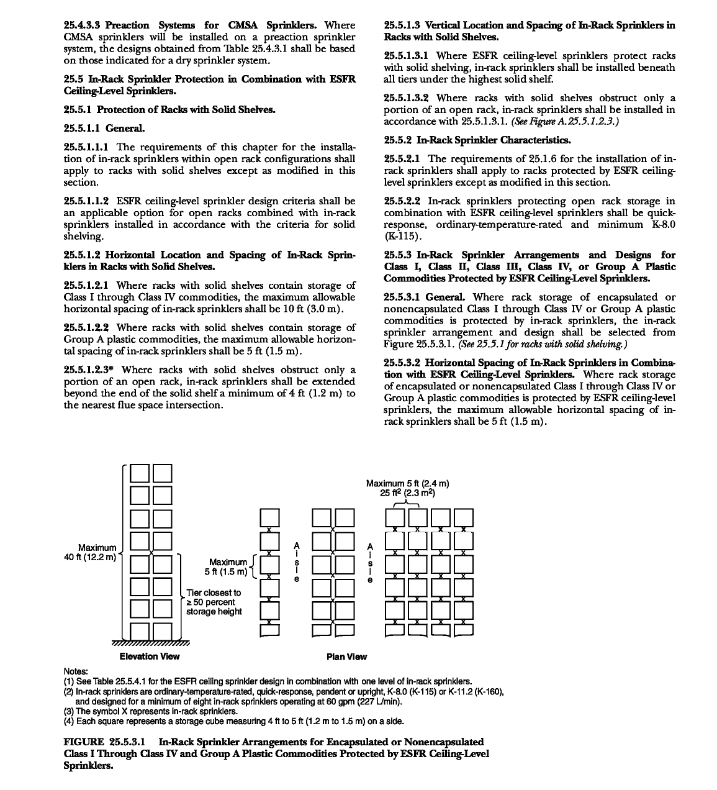
| Table 25.5.3.3（節錄）商品分類 | 儲存高度 / 天花板高度 | 貨架型式 | IRAS 層數 | IRAS 設計，數量 @ 流量 |
|---|---|---|---|---|
| Class I, II, III | 40 ft (12.2 m) / 45 ft (13.7 m) | Open | 1 | 8 @ 60 gpm (230 L/min) |
| Class I, II, III | 40 ft (12.2 m) / 45 ft (13.7 m) | Solid shelves | >1 | 10 具（頂 2 層各 5 具）@ 30 gpm (115 L/min) |
| Class IV, Group A 塑膠 | 40 ft (12.2 m) / 45 ft (13.7 m) | Open | 1 | 8 @ 60 gpm (230 L/min) |
| Class IV, Group A 塑膠 | 40 ft (12.2 m) / 45 ft (13.7 m) | Solid shelves | >1 | 14 具（頂 2 層各 7 具）@ 30 gpm (115 L/min) |
Table 25.5.3.3 節錄；完整表格另含 Open rack 之「僅 1 層」與「多層」兩種設計流量差異（多層設計流量降至 30 gpm/具），請查原文。
25.5.4ESFR 天花板撒水頭設計（合併貨架內撒水頭）
Table 25.5.4.1 依「儲存排列」「商品分類」「儲存/天花板高度」交叉決定天花板 K 值、撒水頭數量與最小工作壓力；25.5.4.3 設計面積固定為最嚴苛之 12 顆撒水頭（三條支管各 4 顆）。
| Table 25.5.4.1（節錄）儲存排列 | 商品分類 | 堆高/天花板高 | K 值/方向 | 設計撒水頭數 | 最小工作壓力 |
|---|---|---|---|---|---|
| 單/雙/多排貨架（無開口容器） | Class I–IV、Group A 塑膠（紙箱包裝，含非膨脹/膨脹） | 40 ft (12.2 m) / 45 ft (13.7 m) | K-14.0 (200) Pendent | 12 具，一層 IRAS | 90 psi (6.2 bar) |
| 單/雙/多排貨架（無開口容器） | 同上 | 40 ft (12.2 m) / 45 ft (13.7 m) | K-16.8 (240) Pendent | 12 具，一層 IRAS | 63 psi (4.3 bar) |
25.6獨立於天花板撒水頭之貨架內撒水頭防護選項（In-Rack Sprinkler Protection Options Independent of Ceiling-Level Sprinklers）
25.6.1總則與適用範圍
- 25.6.1.1 適用於封閉頂（無開口容器）Class I–IV 及 Group A 塑膠商品之單、雙、多排貨架儲存
- 25.6.1.2 若貨架並非全部用於須依本節防護之商品，應（1）將貨架內撒水頭防護水平延伸超出該商品範圍一個棧板單位，或（2）以垂直隔板區隔須防護商品與相鄰商品
- 25.6.1.3 可由天花板撒水頭系統獨立保護之商品，得直接堆放於本節防護貨架之正上方或水平相鄰位置
25.6.2安裝要求：四種防護選項
Table 25.6.2.2 定義 4 種貨架內撒水頭「Option」，各自對應不同 K 值、涵蓋型式、反應與溫級組合：
| Option | K 值 | 涵蓋型式 | 方向 | 反應等級 | 溫級 |
|---|---|---|---|---|---|
| 1（CMDA） | 最小 K-8.0 (115) | 標準涵蓋 | Pendent/Upright | 快速反應 | 一般溫 |
| 2a（ESFR） | 最小 K-14.0 (200) | 標準涵蓋 | Pendent | 快速反應 | 一般溫 |
| 2b（ESFR） | 最小 K-22.4 (320) | 標準涵蓋 | Pendent | 快速反應 | 一般溫 |
| 3（CMDA） | K-25.2 (360) | 擴大涵蓋（Extended-coverage） | Pendent | 快速反應 | 中溫 |
各 Option 之最大水平／垂直間距詳 Table 25.6.2.3.1 與 Table 25.6.2.4.1，代表性數據如下：
水平間距（Table 25.6.2.3.1，節錄）
- 單排貨架：Option 1／2a・2b／3 分別為 5 ft (1.5 m)／4.5 ft (1.4 m)／10 ft (3.0 m)
- 雙排貨架縱向通道空間：Option 1／2a・2b／3 分別為 10 ft／4.5 ft／10 ft
- 多排貨架相鄰貨架面間：Option 1 為 5 ft（每隔一貨架排另設 10 ft 間距）；Option 2a・2b 為 8 ft 6 in. 貨架面／4.5 ft 貨架間；Option 3 為 10 ft／10 ft
垂直間距（Table 25.6.2.4.1，節錄）
- Class I–IV：Option 1 為 12 ft（須設水平隔板）／Option 2a 為 30 ft／Option 2b 為 40 ft／Option 3 為 30 ft（須設水平隔板）
- 外露非膨脹及外露膨脹 Group A 塑膠：Option 2a 不允許（Not permitted）；Option 1 為 12 ft（須設隔板）／Option 2b 為 30 ft／Option 3 為 20 ft（須設隔板）
25.6.2.5 水平隔板（Horizontal Barriers）：Option 1／3 要求處，應以最小 22 gauge (0.78 mm) 鋼板或 3/8 in. (10 mm) 合板構成，橫跨貨架兩面涵蓋所有通道空間，隔板與貨架直柱間隙 ≤3 in. (75 mm)。實心層架貨架應於每一層設置水平隔板。
25.6.3水力設計要求
Table 25.6.3.1 依 Option、商品危害等級、貨架內撒水頭垂直間距、貨架深度與排列方式，決定貨架內撒水頭設計數量與最小流量：
| Option | 商品 | K 值 | 垂直間距 | 雙排/多排貨架設計 |
|---|---|---|---|---|
| 1 | Class I–IV、Group A 塑膠（紙箱及外露） | 最小 K-8.0 (115) | 12 ft (3.7 m) | 8 @ 60 gpm (227 L/min) |
| 2a | Class I–IV、紙箱非膨脹 Group A 塑膠 | 最小 K-14.0 (200) | 30 ft (9.1 m) | 6 @ 65 gpm (250 L/min) |
| 2b | 外露 Group A 塑膠（含 Class I–IV、紙箱塑膠） | 最小 K-22.4 (320) | 30 ft (9.1 m) | 5/5 具 @ 120 gpm (455 L/min)（最遠貨架 5 具＋鄰近貨架 5 具） |
| 3 | Class I–IV、紙箱 Group A 塑膠（含膨脹） | K-25.2 (360) | 30 ft (9.1 m) | 8 @ 138 gpm (520 L/min) |
Table 25.6.3.1 節錄；完整表格另含單排貨架依深度 ≤3 ft／>3–6 ft 之設計數量差異，及外露塑膠採 Option 3 時垂直間距降為 20 ft (6.1 m) 之對應列，請查原文。
25.7雜項與低堆貨貨架儲存既設防護之評估／改裝（Evaluation or Modification of Existing Protection for Miscellaneous and Low-Piled Rack Storage Using In-Rack Sprinklers）
25.7.1雜項貨架儲存（Miscellaneous Rack Storage）
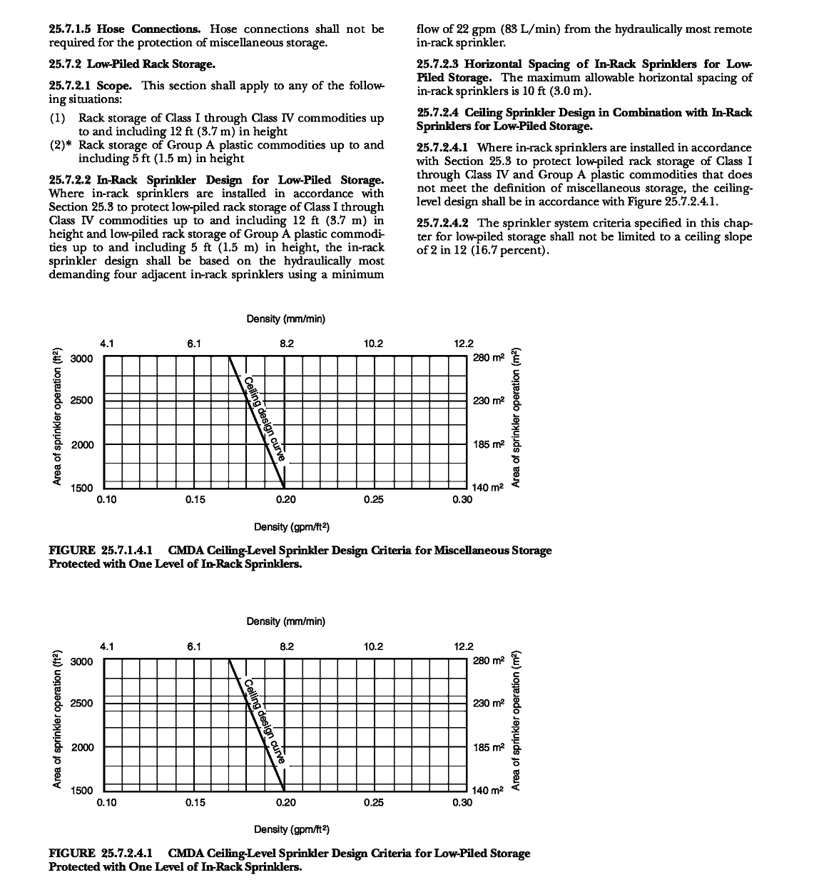
25.7.1.2 貨架內撒水頭依 25.3 節規定安裝者，設計基準為「最嚴苛相鄰 4 具貨架內撒水頭，最遠端具最小流量 22 gpm (83 L/min)」；25.7.1.4.2 天花板撒水頭安裝基準與密度／面積修正係數，比照 Section 19.1 普通危險二級（Ordinary Hazard Group 2）用途辦理；25.7.1.4.3 本節基準不受天花板坡度 2/12（16.7%）之限制。25.7.1.5 雜項儲存防護不要求消防栓接頭。
25.7.2低堆貨貨架儲存（Low-Piled Rack Storage）
適用範圍（25.7.2.1）
- Class I–IV 商品貨架儲存，堆高 ≤12 ft (3.7 m)
- Group A 塑膠商品貨架儲存，堆高 ≤5 ft (1.5 m)
設計基準（25.7.2.2–25.7.2.4）
- 與雜項儲存相同：最嚴苛相鄰 4 具貨架內撒水頭 @ 22 gpm (83 L/min)
- 水平間距最大 10 ft (3.0 m)
- 天花板撒水頭密度依 Figure 25.7.2.4.1 查表，不受天花板坡度 2/12 限制
25.7.2.5 若低堆貨貨架設有實心層架：Class I–IV（≤12 ft）或 Group A 塑膠（≤5 ft）且不符雜項儲存定義者，天花板設計仍得援用 Figure 25.7.2.4.1，惟貨架內撒水頭須依 Section 20.19（實心層架專屬安裝規則）安裝，而非依 25.3 節開放式貨架規則。
25.8既設 CMDA 天花板撒水頭貨架儲存防護（Class I–IV，12–25 ft）以貨架內撒水頭評估／改裝（Evaluation or Modification of Existing CMDA Ceiling-Level Sprinkler Rack Storage Protection ... Using In-Rack Sprinklers）
25.8.1總則
25.8.1.1.2 貨架內撒水頭設計（依 Table 25.8.1.1.2）依商品分類（Class I/II/III 或 Class IV）與貨架型式（Open 或 Solid shelves）決定所需具數與流量：
| 商品分類 | 貨架型式 | IRAS 層數 | IRAS 設計 |
|---|---|---|---|
| Class I, II, III | Open | 1 | 6 @ 22 gpm (83 L/min) |
| Class I, II, III | Solid shelves | >1 | 10 具（頂 2 層各 5 具）@ 30 gpm (114 L/min) |
| Class IV | Open | 1 | 8 @ 22 gpm (83 L/min) |
| Class IV | Solid shelves | >1 | 14 具（頂 2 層各 7 具）@ 30 gpm (114 L/min) |
25.8.1.2.7 調整後之天花板最小設計密度不得低於 0.15 gpm/ft² (6.1 mm/min)；25.8.1.2.8 CMDA 天花板撒水頭特性依 Figure 25.8.1.2.8 辦理。25.8 節其餘規定分為兩大類商品情境，分別於 25.8.2、25.8.3 處理：
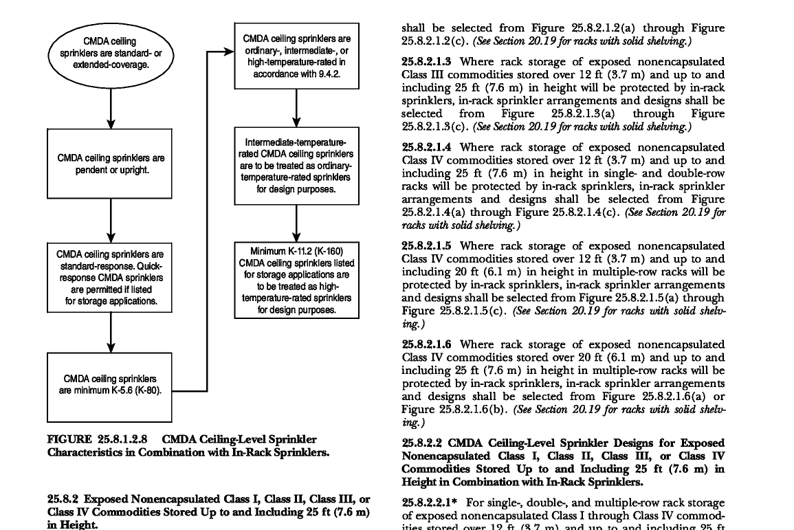
25.8.2外露非封裝（Exposed Nonencapsulated）Class I–IV 商品（堆高 ≤25 ft）
25.8.2.1.1 依貨架排列與商品分類，所需貨架內撒水頭層數不同：單/雙排貨架 Class I–IV 堆高 ≤25 ft 需1 層；多排貨架 Class IV 堆高 ≤20 ft 需1 層；多排貨架 Class IV 堆高 >20–25 ft 則需2 層。Table 25.8.2.2.1 依此決定應查閱之天花板密度/面積曲線圖與曲線代號：
| 商品 | 貨架排列 | 走道寬度 | 所需 IRAS 層數 | 對應圖／曲線（高溫／一般或中溫） |
|---|---|---|---|---|
| Class I | 單/雙排 | 8 ft (2.4 m) | 1 層 | 25.8.2.2.1(a)，曲線 A／B |
| Class I | 多排 | 任意 | 1 層 | 25.8.2.2.1(a)，曲線 C／D |
| Class IV | 單/雙排 | 4 ft (1.2 m) | 1 層（≤20 ft） | 25.8.2.2.1(d)，曲線 C／D |
| Class IV | 多排 | 任意 | 2 層（>20–25 ft） | 25.8.2.2.1(d)，曲線 C／D |
Table 25.8.2.2.1 節錄（Class II、Class III 之曲線分別對應 Figure 25.8.2.2.1(b)、(c)，邏輯相同）；曲線 A/B 對應 8 ft 寬走道、曲線 C/D 對應 4 ft 寬走道或多排貨架，A/C 為高溫天花板撒水頭、B/D 為一般/中溫天花板撒水頭。
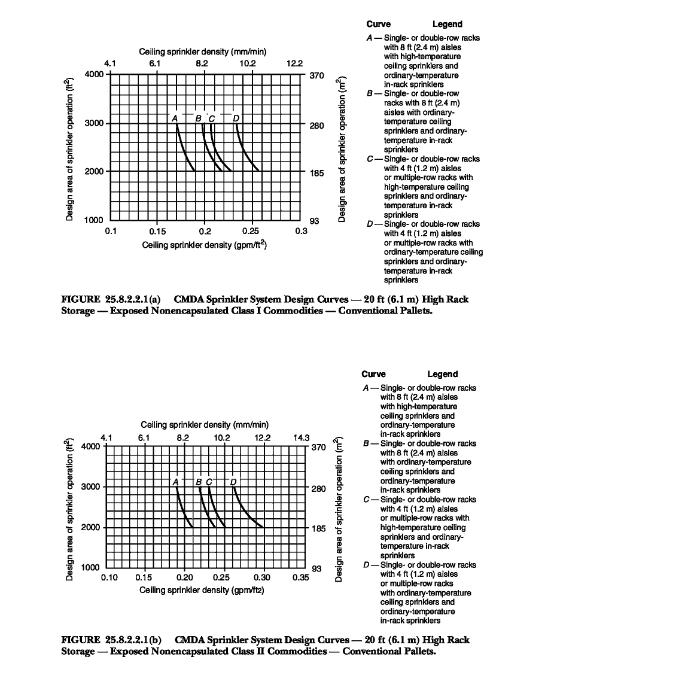
25.8.2.2.2* 密度調整：先依 Figure 25.8.2.2.2.2(A) 依儲存高度調整曲線讀值，再依 Table 25.8.2.2.2.4 依實際安裝之貨架內撒水頭層數套用折減：
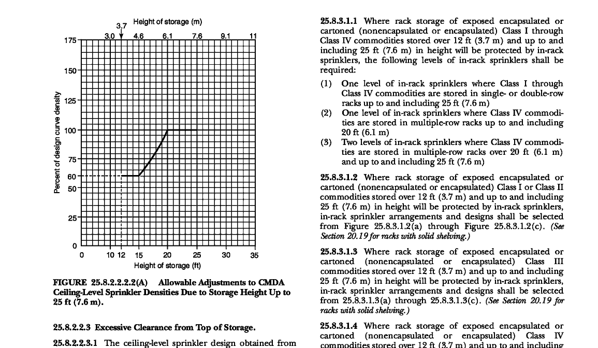
| 貨架內撒水頭安裝情形 | 允許密度折減 |
|---|---|
| 僅安裝最低要求層數 | 不予折減 |
| 安裝超過最低要求層數，但非每一層皆設 | 再折減 20% |
| 每一層（tier）皆設置貨架內撒水頭 | 再折減 40% |
25.8.2.2.3 超額淨空處理：查表基準之堆貨頂至天花板淨空上限為 20 ft (6.1 m)；超過者，應（1）以不超過 25 ft 之理論堆高反推、使淨空回歸 20 ft 計算，或（2）於最高層堆貨正下方每一通道空間交會處加設一層快速反應貨架內撒水頭。
25.8.3外露封裝或紙箱包裝（Exposed Encapsulated or Cartoned）Class I–IV 商品（堆高 ≤25 ft）
本節查表架構與 25.8.2 完全相同（Table 25.8.3.2.1 對照 Table 25.8.2.2.1、Table 25.8.3.2.2.4 對照 Table 25.8.2.2.2.4），唯一差異在於 Table 25.8.3.2.1 多出一欄「密度乘數（Density Multiplier）」，反映封裝／紙箱包裝對撒水穿透之額外阻礙：
| 商品 | 貨架排列 | 堆高上限 | 所需 IRAS 層數 | 密度乘數 |
|---|---|---|---|---|
| Class I | 單/雙排 | 25 ft (7.6 m) | 1 層 | 1.0 |
| Class I | 多排 | 25 ft (7.6 m) | 1 層 | 1.25 |
| Class IV | 單/雙排或多排 | ≤20 ft (6.1 m) | 1 層 | 1.5 |
| Class IV | 多排 | >20–25 ft (6.1–7.6 m) | 2 層 | 1.5 |
Table 25.8.3.2.1 節錄；密度乘數係於 Figure 25.8.3.2.2.2(A) 儲存高度調整之後相乘，再依 Table 25.8.3.2.2.4 套用貨架內撒水頭層數折減（20%／40%，邏輯同 25.8.2）。
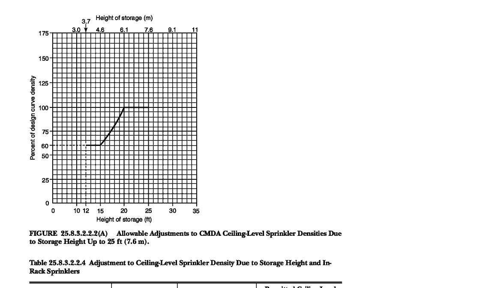
25.8.3.2.3 超額淨空處理規則與 25.8.2.2.3 相同（20 ft 淨空上限，超出者以理論堆高反推或加設一層貨架內撒水頭）。
特殊儲存防護設計（Special Designs of Storage Protection）
26.3零售賣場展示貨架範例（節錄）
零售賣場單/雙排條板層架（26.3.1）：延伸涵蓋 K-25.2 撒水頭，雙設計點 0.6 gpm/ft² over 2000 ft² 與 0.7 gpm/ft² 於最不利 4 顆撒水頭，另加 500 gpm 消防栓水量餘裕（2 小時延時）；限制條件包含層架 12 ft 以上僅得用鋼絲網、走道寬 ≥5 ft、單層實心層架限高 5 ft 等。Gondola 展示貨架（26.3.2）另有一組較低密度基準（0.425/0.50 gpm/ft²），限制儲存高度 ≤12 ft、天花板 ≤22 ft、走道 ≥5 ft。
26.420 ft 以下貨架特殊設計（節錄）
條板層架（Slatted Shelves）於特定條件下視同實心層架（26.4.1）；符合密度 0.6 gpm/ft² over 2000 ft² 且限制商品類別（Class I-IV、B/C 類塑膠、紙箱包裝 A 類塑膠等）、走道 ≥7.5 ft、天花板 ≤27 ft、儲存 ≤20 ft 等條件者（26.4.1.2），得以濕式系統防護單/雙排條板層架貨架而免用貨架內撒水頭；亦提供以 ESFR（K-14.0/16.8/25.2，最小壓力 34–50 psi）取代之替代方案（26.4.1.3）。
26.6附走道紙箱檔案儲存（Cartoned Records Storage with Catwalk Access）
- 層架至少 50% 開放（自通道空間至通道空間）
- 橫向通道空間 6 in. (150 mm)，設於每一貨架立柱處；立柱間距 ≤10 ft 6 in. (3.2 m)
- 單排貨架深度 ≤72 in. (1.8 m)；雙排貨架走道到走道總深 ≤102 in. (2.6 m)
- 貨架間走道寬 30–36 in. (750–900 mm)；進出用走道經實心鋪面者得達 44 in. (1.1 m)
- 走道間人行棧板（catwalk）採 ≥50% 開放金屬格柵；垂直間距 ≤12 ft (3.7 m)
特殊用途場所要求（Special Occupancy Requirements）
27.1.1 除本標準 Ch.8、Ch.11–23 一般要求外，以下特殊用途場所應額外依對應之 NFPA 專屬標準辦理；兩標準要求不同時，以專屬標準為準。本標準之設計面積增減等一般設計原則仍適用於這些特殊用途。
圖說與計算（Plans and Calculations）
28.1施工圖（Working Plans）
施工圖須於設備安裝或改裝前送 AHJ 核准；送審內容應包含系統施工圖、（需水力計算者之）計算書、AHJ 要求之元件資料表、已簽署之業主證明書（依 4.2）。核准圖副本應交付業主留存；偏離已核准圖說須經 AHJ 同意（28.1.1–28.1.2）。
28.2–28.5水力計算、消防栓水量餘裕與管系表
水力計算程序依 28.2 辦理，須依系統設計基準（密度／面積、CMDA/CMSA/ESFR 準則等）求出各節點流量與壓損，彙整為水力計算表（28.4）；消防栓水量餘裕依 28.3（呼應 Ch.19.1.6／20.15.2）納入計算；管系表法設計（Pipe Schedule, 28.5）僅適用於本標準明確允許之場所（輕/普通危險，且面積受限）。
系統驗收（Systems Acceptance）
29.1核准流程
安裝承包商應：通知 AHJ 與業主測試日期、執行全部規定驗收測試、完成並簽署承包商材料與測試證明書、於系統上線前移除所有測試用蓋帽與束帶。
29.2.1水壓試驗
試驗壓力應以系統或受測部分最低高程之壓力表為準；使用消防泵浦者，試驗壓力依泵浦關閉壓力（shutoff pressure）決定。試驗期間禁止使用矽酸鈉等添加劑止漏。
29.2.2乾式／雙連鎖預動式系統氣密試驗
除標準水壓試驗外，應另以 40 psi (2.8 bar) 氣壓維持 24 小時，24 小時內壓降超過 1½ psi (0.1 bar) 者應予修正。
29.2.3–29.2.5系統操作測試
- 水流指示裝置：透過查驗用試驗接頭測試，確認可聞警報依 7.7 節動作
- 乾式／雙連鎖預動式系統：以查驗用試驗接頭進行動作測試，記錄閥動作時間與出水時間
- 開放式／預動式閥：依製造商說明測試自動、手動與遠端操作功能
- 主排水閥：開啟並保持至系統壓力穩定，記錄靜壓與餘壓
- 控制閥：全開全關操作一次，確認可正常復歸
- 減壓閥：於滿流與無流狀態下測試出口壓力調節功能
- 逆流防止裝置：執行正向流量測試，最小測試流量為系統需求流量（含消防栓水量餘裕）
29.4–29.6系統銘牌標示
水力設計系統／管系表設計系統應於系統立管等關鍵位置設置永久性金屬或硬質塑膠銘牌，標示設計面積、放水密度、所需流量與餘壓、用途／商品分類與最大儲存高度、消防栓水量餘裕、安裝承包商等資訊；另應設置一般資訊牌，標示危害分類、商品分類、走道寬度、棧板封裝情形、主排水測試原始數據等，供日後依 NFPA 25 檢測維護使用。
既設系統改裝（Existing System Modifications）
- 既設系統改裝或增設，仍應適用 Ch.29 驗收要求，並受 1.4 回溯性規定限制（30.1.1–30.1.2）
- 整新撒水頭一律禁止用於既設系統；螺紋式撒水頭自管件或銲接出口拆下後不得重新裝回（乾式撒水頭依原廠說明重新裝回者除外）（30.3.1–30.3.2.1）
- 既設輕危險系統改裝為快速反應或住宅型撒水頭時，同一防火區劃內撒水頭須全部更換，不得混用新舊型式（30.3.5）
- 崁頂式撒水頭蓋板經非原廠塗裝者，應予更換（30.3.7）
- 管系表系統改裝時，若既有六角管接頭仍在，應予移除；分支管件新增之短管（nipple）長度不得超過 4 in. (100 mm)（30.4.2–30.4.3）；耐震設計系統之 armover 短管管徑不得小於 1 in. (25 mm)（30.4.6）
- 既設氮氣改裝之乾式／雙連鎖預動式系統，水力計算應採用 Hazen-Williams C 值＝100（30.1.8）
- 改裝部分若影響 >20 顆撒水頭，新增部分應獨立隔離，並以 200 psi/2 小時水壓試驗；無法隔離者（如僅移位落水管）改以系統工作壓力測試（30.8.1.1–30.8.1.2）
- 禁止以火焰切割／銲接方式修改或修復既有撒水系統（30.1.9）
船舶系統（Marine Systems）
系統檢測、測試與維護（System Inspection, Testing, and Maintenance）
附錄 A：說明性資料（Explanatory Material）
A.3關於第3章（定義）的補充說明
A.3.3.100 高架儲存（High-Piled Storage）一詞僅適用於本標準之撒水系統設計與安裝規定，不等同於其他法規／消防法典中同名詞彙之定義；零售賣場之展示性堆疊（stockpile）不應視為高架儲存，高架儲存規定專指依 Ch.20–25 保護之儲存場所。A.3.3.27 天花板凹穴（Ceiling Pocket）若上層天花板與撒水頭迴水板間垂直距離仍在容許範圍內，視為「受保護之天花板凹穴」，其建物得採用快速反應折減（19.2.3.2.3）；若未受保護之天花板凹穴面積超過 32 ft²（3.0 m²），則不得採用該項折減——這是判斷天花板細部設計是否影響設計密度折減時，很容易被忽略的門檻。
A.3.3.43.1／A.3.3.43.2 受阻礙構造（Obstructed Construction）與無阻礙構造（Unobstructed Construction）之區分，直接影響密度／面積設計曲線之選用，是實務上常見誤判來源。附錄以樑柱構造（beam and girder）、混凝土 T 形樑構造、複合木格柵（composite wood joist，格柵間距達 48 in./1.2 m、跨距可達 60 ft/18 m）等具體案例輔助判斷；複合木格柵之樑格（joist channel）須以等同腹板材質做滿深度防火分隔，且單一格間面積不得超過 300 ft²（28 m²），否則即應改採受阻礙構造之設計基準。
A.4關於第4章（一般要求）的補充說明
A.4.3.2 輕危險分類雖涵蓋住宅用途，但不排除在其他用途場所之住宅性質區域使用住宅型撒水頭；圖書館部分，一般開放式書架（架高約 8 ft/2.4 m、走道寬於 30 in./750 mm）視為輕危險，但高密度、緊密排列之圖書館書庫（library stacks）則應比照 NFPA 232 之層架／記錄儲存視為普通危險，不得因「圖書館」一詞直接歸類輕危險。A.4.3.3 Class I–IV 商品之熱釋放率屬中等程度，Group A 塑膠則屬高熱釋放率等級——這是後續 Ch.20 商品分類邏輯的基礎認知。A.4.3.1.4 雜項儲存（miscellaneous storage）之判斷重點在於該儲存是否僅為建物主要用途之附屬行為（例如製造樓層上有限度之物料堆置），而非儲存本身的規模。
A.4.4.6 鄰接主建物之附屬小型建築物，得由主建物系統延伸防護以免除另設獨立系統，但決定前應綜合考量：兩建物實際距離、日後是否可能分割產權分開出售、雙方樓地板面積、獨立供水之施作困難度、附屬建物本身之用途／危害等級、以及消防人員辨識出水樓層來源之難易度。
A.5.2.2 水流試驗所測得之數據必須能代表「火災當下可能實際取得」之供水狀況：公共給水應於正常尖峰用水時段測試，並考量季節性與日間波動、乾旱、水管凍結、洪水中斷等風險預留裕度；供工業用水之水源亦應於工業用水抽取期間測試。A.5.2.2.2 因此原始水流試驗數據常需依日／季節波動、同時大量工業用水、未來用水需求成長等因素進行向下修正後才能用於設計——這也是為何 4.5.1.1 要求水流試驗須於送審前 12 個月內完成的實務背景：供水條件會隨時間變化，太舊的測試數據可能已不具代表性。
A.5.1.4 評估水源與環境條件對配管之影響（含微生物腐蝕 MIC），不必然需要送實驗室做水質分析；已有長期使用經驗、材質相近、供水源相同之既設系統資料即可構成足夠的評估依據。A.5.1.3 合併民生／消防用水系統，管徑達 6 in.（150 mm）以上時，一般可不必於水力計算中額外納入民生用水需求（因其占比極小、不影響計算結果）；但採用 4 in.（100 mm）管徑且民生用水量可觀時，則應納入計算。
A.8關於第8章（系統類型）的補充說明
A.8.2 乾式系統應僅用於熱源不足以防止管內結凍之場所；當場所日後具備足夠暖房時，應將乾式系統改裝為濕式系統，不應以「冬季關閉撒水頭」作為權宜措施。設有兩組以上乾式閥時，宜依水平分區配置，以避免多區同時動作延長充水時間、並避免同時收到多組水流警報訊號造成判斷困擾。A.8.2.3.1 60 秒充水限制之豁免僅適用於容量 500 gal（1900 L）以下之乾式系統，或容量 750 gal（2850 L）以下且設有快速開放裝置（quick-opening device）之系統。
A.8.6.1.3 移除防凍液以進行維護時，懸吊式撒水頭與分支管間之落水管（drop）可直接拆卸更換，不需另做水壓測試。A.8.8.2.4 冷凍庫穿越段防止結冰阻塞之關鍵在於控制進入冷凍空間之空氣濕度——供氣之壓力露點應低於冷凍庫最低額定溫度至少 20°F（−6.6°C），否則水氣仍可能在管內凝結結冰，即使該氣源本身即取自冷凍庫內。
A.9關於第9章（撒水頭位置要求）的補充說明
A.9.4.2.7 測試顯示：柱體造成的陰影區因熱煙需要時間繞過柱體反應，可能造成撒水頭動作明顯延遲（大型防護區時延遲更顯著，可用縮小柱體、縮小防護區或於柱體另一側加裝撒水頭改善）；但牆面偏移（offset wall）造成的陰影區，測試顯示撒水頭動作並無明顯延遲——只是動作後水柱不會涵蓋到障礙物背後的全部區域。兩種陰影區成因雖類似，實務影響卻不同，設計時應加以區辨。
A.9.5.4.1.4 委員會明確否定「在撒水頭上方加裝小型集熱板（heat collector）以加速動作」的做法——標準並無此構想，且有證據顯示撒水頭正上方若有物體，反而會在火源不在其正下方時延遲撒水頭動作，因為此舉違背了「以鄰近撒水頭噴霧冷卻天花板結構」之設計目的。A.9.5.5.3.1 障礙物（風管、平台、開放格柵、切割檯、天花板板材等）若位於迴水板下方 18 in.（450 mm）以上，且寬度在 4 ft（1.2 m）以內，噴霧型態已可正常展開，毋須於其下方加裝額外撒水頭；但禁止以格柵地板或開放式平台代替撒水頭防護（不得視為等效防護手段）。
A.9.2.1.1.2 / A.9.2.1.2.2 判斷是否構成需防護之「隱蔽空間（Concealed Space）」，關鍵在於空間內是否有可燃物；不燃或有限可燃構造、內含非燃燒式設備與維修蓋板之空間，一般不需視為應防護之隱蔽空間，惟其確切體積門檻標準本身並未明定，仍留有工程判斷空間。A.9.2.6 撒水配管得穿越電氣室，但不得穿越 NFPA 70 定義之「專用電氣空間（dedicated electrical space，即設備前方地板至天花板或設備上方 6 ft/1.8 m 高之範圍）」；穿越專用電氣空間上方則被允許，前提是設備已有防漏保護。
A.9.3.6.1 電梯坑內加裝撒水頭主要是為防護長期累積之雜物碎屑起火，安裝位置宜靠近電梯門下方碎屑最易堆積處，但須避開電梯門檻護板（toe guard）。A.9.3.6.4 電梯機房與電梯道內之撒水頭動作前（或同時），必須先行切斷電梯動力——可透過偵煙／偵熱系統於撒水頭動作前先行斷電，或採用無延時之水流開關於撒水頭動作瞬間立即斷電，目的是在明顯放水前即完成斷電程序，避免帶電設備進水。
A.18關於第18章（耐震防護）的補充說明
A.18.5.1.5 當共用支撐組（shared support assembly）同時支撐撒水配管與其他系統之地震力時，其設計目的在於避免「共用支撐組」與「撒水系統獨立耐震斜撐」之間因分別固定於不同結構體上而產生位移不相容的問題——這是共構支撐設計中容易被忽略的相容性檢核。A.18.5.2.3.1 斜撐總成之列名容許荷重不宜僅以 90° 角度單一測試結果套用折減係數表（Table 18.5.2.3）推算其他角度之容許值，因為斜撐總成中「最弱構件」在不同夾角下可能改變、破壞模式也可能不同；較嚴謹的做法是分別於 30°、45°、60°、90° 四個角度實測，取各角度換算後之最小值作為列名容許荷重，以確保保守。
A.18.5.11 / A.18.5.11.1 斜撐構件應為連續材，如需接續應確保接頭強度不低於構件本身；斜撐設計與安裝的成敗高度仰賴施工細節（角度、對正、緊固）是否落實，因為地震力之計算高度依賴布置幾何與建物結構特性間的對應關係，現場工法品質直接影響其耐震性能是否能如計算般發揮。A.18.6.1 分支管以鋼線束制時，鋼線應繞管兩圈並收緊，末端再以四圈緊繞固定於 38 mm（1½ in.）範圍內，並依圖例方式固定於結構體——看似細節的纏繞圈數規定，實際上是確保束制力不會因鋼線滑脫而失效的關鍵。
A.19關於第19章（設計方法）的補充說明
A.19.1.2 附錄以實例說明「小面積高危害場所被低危害場所包圍」時的處理原則：一處 600 ft²（56 m²）、堆高 10 ft（3 m）之未裝箱非膨脹型塑膠平面儲存區，被塑膠押出作業（普通危險二級）包圍於 15 ft（4.6 m）高之建物內——依 Ch.20，該儲存區之設計密度須依嚴重危險一級之基準（該區域周邊仍為普通危險二級 0.2 gpm/ft² over 1500 ft²，儲存區則為 0.3 gpm/ft² over 2500 ft²）。這說明了「依實際危害內容分區設計、而非以整體場所用途一概而論」的操作原則。
A.19.1.5.2 / A.19.1.5.3 若蓄水池或消防泵浦僅供撒水系統使用，其容量／出水量得僅依撒水系統本身需求核算，不須計入消防栓用水量；但若同一蓄水池或泵浦同時供應撒水系統與室內／室外消防栓（或民生／製程用水），則須涵蓋所有由其供應之設備需求，至於未經其供應之其他設備需求可不予考慮（僅需評估其對供水系統整體之影響）。A.19.1.6.1(3) 舉例：學校等輕危險場所內若有獨立之普通危險用途房間，且該房間面積不超過 400 ft²（37 m²），仍得依輕危險場所之消防栓用水量與延時基準設計，不須因該小房間而將整體場所升等為普通危險基準。
A.20 / A.21 / A.25 / A.26關於儲存保護章節（商品分類與儲存防護）的補充說明
A.20.3 商品分類判斷取決於「產品本身構成材質＋一次包裝材料＋棧板材質」三者組合，且應以整體儲存單元（如棧板負載）之特性判斷，而非僅看產品本身；附錄提供 Table A.20.3 作為一般性判斷指引，但當某一儲存單元的分類難以直接歸類時，建議實際進行商品分類測試而非憑經驗臆測。分類邏輯大致遵循以下規律（愈往下、可燃性愈高、需要之防護密度愈大）：
| 材質構成 | 包裝／棧板特徵 | 典型分類 |
|---|---|---|
| 完全不燃 | 無包裝或單層瓦楞紙箱＋金屬／木棧板 | Class I |
| 完全不燃 | 多層瓦楞紙箱／木箱＋金屬／木棧板 | Class II |
| 木材／紙／天然纖維／Group C 塑膠 | 無包裝或一般紙箱＋金屬／木棧板 | Class III |
| Group B 塑膠（混合或全部） | 無包裝＋金屬／木棧板 | Class IV |
| 任一材質＋塑膠棧板或塑膠內包裝 | — | 分類通常再升等一級（如 Class III→IV，Class IV→未裝箱非膨脹 Group A 塑膠等級） |
| 未裝箱非膨脹 Group A 塑膠 | 瓦楞紙箱／木箱包裝 | 裝箱非膨脹 Group A 塑膠（Cartoned Nonexpanded Group A Plastic） |
| 膨脹 Group A 塑膠（發泡材） | 無包裝（外露） | 外露膨脹 Group A 塑膠——最嚴苛等級 |
A.20.3.2.2.1 / A.20.3.2.2.2.1 一旦以塑膠棧板或塑膠內包裝取代原本之木／金屬棧板或無塑膠包裝，分類會直接跳級（例如 Class III 變 Class IV、Class IV 變裝箱非膨脹 Group A 塑膠等級）——這是倉儲現場最容易被忽略的「棧板材質換了、分類其實也該跟著變」情境，尤其在既有場所更換棧板供應商時容易被忽略。
A.20.4(a) 附錄同時列出一份「NFPA 13 商品分類範疇未涵蓋」之品項清單，值得特別留意：鋰、鋰離子及其他含可燃電解液之充電電池、彈藥組件（散裝雷管與火藥）、爆竹（消費與展示用）、易燃氣體鋼瓶、含醇量超過 20% 之易燃／可燃液體、散裝大型容器儲存之家用品等，均不在本標準商品分類架構的適用範圍內，需要另行專業評估或依其他標準（如電池儲存另有專門規範）處理，不能直接套用 Class I–IV 或塑膠分類邏輯。
A.20.9.5.3 委員會特別提醒：屋頂排煙擋煙垂壁（Draft Curtain）對撒水系統的滅火效能有負面影響，若法規要求必須設置擋煙垂壁，應審慎將此不利影響納入撒水系統設計考量，不可想當然爾地認為兩者互不衝突。A.20.18.1 貨架末端或走道內之柱體是否需要防護，以「柱體與貨架淨距 12 in.（300 mm）」為判斷基準：柱體落於通風流道（flue space）內或距貨架 12 in. 以內者需防護，超過 12 in. 者即使位於走道內亦可免設。
A.21.1.2 儲存用途偏好大孔徑（如 K-11.2／K-160、K-16.8／K-240）撒水頭而非小孔徑（K-5.6／K-80），並非單純規格偏好——同等設計密度下的全尺寸火災測試顯示，大孔徑撒水頭因單次放水量大、水柱穿透力強，較不易發生「撒水頭被上升熱氣流吹偏、水打不到火點」的現象（sprinkler skipping），尤其在高初始出水壓力（100+ psi）情境下差異更明顯。A.21.3.2 附錄特別提醒：實際倉儲場所的商品組合與堆置方式很少長期維持不變，設計者應留意日後商品內容變動可能大幅改變所需防護基準；對既有場所之評估雖可善用標準內各項折減條件，但套用新設計時應保守處理，不宜將既有折減條件照單全收。A.21.4.1.1 隔板（Bulkhead）不能作為貨架內撒水頭之替代品——設有隔板不構成降低設計密度或縮小設計面積的正當理由。
A.28–A.30關於計算、驗收與既設系統維護的補充說明
A.28.2.1.4 NFPA 13 並未針對 Hazen-Williams 公式訂定明確的流速上限，部分原因是過大摩擦損失通常會反映為要求放大管徑，形成一種內建的流速自我限制機制；但標準未設流速上限，不代表該公式可無條件套用於任何流速——該經驗公式係於「正常」流況下實測建立，流速超出建立公式時所採用之條件範圍後，公式之準確性即可能不再成立，設計時仍應留意合理性。
A.29.2.3.4.2 主排水閥測試（Main Drain Test）中，並未要求實際量測放水流量，僅須記錄放水前後之靜壓與流動壓力供日後比對即可。A.30.1.8 對於已有腐蝕跡象之既設乾式或預動式系統，加裝氮氣供氣無法修復既有腐蝕損害，其作用僅在於降低系統內氧氣濃度以延緩後續腐蝕發生；正確做法應是先行評估既有配管腐蝕狀況、判斷何處須更換、何處仍可續用，再輔以氮氣延緩新增腐蝕，而非誤以為加氮氣即可解決既有腐蝕問題。
附錄 B：雜項主題（Miscellaneous Topics）
B.1消防與生活給水系統之連接方式
Figure B.1 提供消防用水與生活用水系統間可接受之連接配置方式（管路互聯佈置），供設計參考。
B.2撒水系統性能基準（Sprinkler System Performance Criteria）
撒水系統之性能基準係依實測數據建立，其安全係數通常不大、亦非絕對定值，且仰賴系統實際（但非保證）之固有特性。設計時應理解以下兩項固有安全餘裕來源：
- 撒水系統之流量遞減壓力特性：最先動作之撒水頭其實際流量高於「設計面積內全部撒水頭同時動作」之平均設計流量
- 水源之流量遞減壓力特性（消防泵尤為明顯）：同樣造成最先動作撒水頭之實際放水量高於設計值
使用者如認為上述固有安全餘裕不足，可自行選擇額外增加安全係數。
B.2.1.1–B.2.1.5性能導向設計（Performance-Specified）之考量要素
相較於傳統「查表式（scheduled）」設計，性能導向設計可採多迴路或格柵式（gridded）管路配置，於擴大撒水頭間距下仍能維持最小管路摩擦損失；相對地，樹狀（tree-type）管路系統則傾向以較密撒水頭間距搭配較大管路損失換取經濟性。設計時應逐一考量下列要素，並以各要素中最嚴苛條件之組合作為最保守設計：
| 要素 | 設計考量重點 |
|---|---|
| 密度與設計面積之選擇 | 密度宜無條件進位至最接近 0.005 gpm/ft² (0.2 mm/min)；應考量商品/儲存型式/淨空/堆疊穩定性等未來可能變動範圍，必要時另訂第二組（雙重）設計密度/面積以控制超出主設計流量後之遞減壓力特性 |
| 設計面積之幾何形狀（remote area） | 電腦水力計算軟體理想上應逐一位移設計面積（每次位移一支撒水頭）以驗證全系統任一等效面積均達最小密度，惟現行軟體未必都具備此功能 |
| Hazen-Williams 係數選用 | 新鋼管 C≈140，數年後劣化至 120；濕式鋼管系統一般以 C=120 設計，乾式系統因易生沉積腐蝕以 C=100 設計；刻意採用偏低係數亦是內建保守裕度的一種方式 |
| 由計算性能預測實際性能之能力 | 管路流速愈高，摩擦損失預測誤差愈大（尤其多口不等徑接頭）；納入速度水頭（velocity pressure）計算可提升預測準確度；保守裕度應刻意、可追溯地納入設計，而非仰賴巧合 |
| 未來系統性能升級空間 | 如需預留未來升級容量，應使撒水頭操作壓力維持在建議範圍較低側，並/或降低幹管/供水管流速以利未來加強 |
B.3天花板淨空對撒水頭性能之影響
1970 年代研究即已確認大淨空（clearance to ceiling）對撒水頭延遲動作、及水滴穿透火羽流能力之不利影響，並促成大水滴（large-drop）與後續 ESFR 等先進撒水頭技術之研發——標準 ½ in./¹⁷⁄₃₂ in. 撒水頭已被證實無法有效穿透高強度挑戰性火災。此淨空效應之測試驗證亦見於附錄 C所彙整之貨架儲存測試。
附錄 C：貨架儲存火災測試(Rack Storage Fire Test)數據與程序說明
C.1–C.2測試方法總則與商品分類基礎
Ch.20–26 之撒水放水基準源自對標準商品（雙層瓦楞紙箱＋金屬內襯，Standard Commodity）、Hallmark 產品、3M 產品等大量實尺度燃燒測試之歸納。商品分類（Class I–IV、Group A 塑膠等）係由測試結果反推之工程分級，並非依材料化學成分之通用分類法；因此實務選用分類時，仍須以健全工程判斷評估實際商品與包裝方式，而非機械式套用測試中所用之特定商品名稱。
C.3–C.11貨架內撒水頭（In-Rack Sprinklers）相關測試發現
- 多層貨架內撒水頭若未設水遮板（water shield），火勢易跳過走道並造成更大損害（Test 115 vs 116 對照）；因此除有實體隔板/層板兼作遮水功能者外，多層貨架內撒水頭應設水遮板
- 第一支撒水頭動作時間多在 3 分鐘內（最長 7 分 44 秒），顯示比水流動作更靈敏之火災偵測僅於特殊情況下才有必要
- 開啟屋頂通風窗／百葉會使動作撒水頭數大增（測試中增加 87.5–91%），故通風排煙搭配撒水保護時應個別評估，不可援引無撒水保護之通風測試結果
- 雙排貨架有效測試中，水源多於約 60 分鐘關閉，僅少數案例最後一支撒水頭於 20–30 分鐘後才動作，顯示設計時間基準之合理性
- 乾式管系統測試結果與濕式相近，但既有 NFPA 記錄顯示乾式系統應較濕式放大約 30% 設計面積以為保守
C.9 表 C.9密度與火損/撒水頭動作範圍之關係（20 ft 儲存高度標準商品）
| 密度 gpm/ft² (mm/min) | 設置方式 | 火損面積 ft² (m²) | 撒水頭動作面積 ft² (m²) |
|---|---|---|---|
| 0.20 (8.2) | 僅天花板 | 504–648 (46–60) | 13,100–14,000 (1215–1300) |
| 0.30 (12.2) | 僅天花板 | 395 (37) | 4500–4800 (420–445) |
| 0.45 (18.3) | 僅天花板 | 162 (15) | 700 (65) |
| 0.20 (8.2) | 天花板＋貨架內 | 144 (13) | 4100 (380) |
| 0.30 (12.2) | 天花板＋貨架內 | 126 (12) | 700 (65) |
關鍵結論：密度愈高、或搭配貨架內撒水頭，火損面積與撒水頭動作面積同步大幅下降——這正是 Ch.21/25/26 要求高儲存/高天花板搭配高密度或貨架內撒水頭的實測依據。測試建物約 200 ft×250 ft（61 m×76 m），為耐火構造，容許最大水損面積 6000 ft² (555 m²)（設計曲線上限）。
C.14高溫等級撒水頭之設計面積折減
實測顯示採用高溫等級撒水頭相較一般溫度等級可使設計面積折減約 40–45%（多組測試平均約 40%）；設計曲線中 >3600 ft² (335 m²) 以上之高溫曲線即反映此折減關係。中溫等級撒水頭動作支數則與一般溫度等級相近，無顯著差異。
C.20–C.22塑膠商品與 ELO（Extra Large Orifice）撒水頭測試
FMRC 針對倉儲型零售賣場之 Group A 未膨脹塑膠商品（如 ABS 管件、PVC 水管盤、工具箱、庭院家具等）以 ELO 撒水頭進行雙排貨架實尺度測試，證實：儲存高度 ≤20 ft（27 ft 天花板下）以 0.6 gpm/ft² 密度、或 ≤14 ft（22 ft 天花板下）以 0.45 gpm/ft² 密度，可在不設貨架內撒水頭之情況下達到可接受之防護效果——此為 21.5.1.1 條文之測試基礎。
C.2325 ft 以上儲存：貨架內撒水頭對天花板撒水頭之影響
測試顯示於 25 ft 以上高儲存中設置貨架內撒水頭後，其動作時間早於天花板撒水頭，將原本快速發展之火災轉換為熱釋放速率較低、發展較緩之火災，因此天花板撒水頭之動作面積不因儲存高度增加或密度/溫度等級變化而顯著變動——此為Ch.25 貨架內撒水頭設計理念之核心實證基礎。
C.25紙箱檔案記錄多排貨架儲存測試（2007）
三場大型實尺度測試（37 ft/11 m 高多排貨架，含走道層架平台）驗證天花板 K-8.0、0.30 gpm/ft² 密度搭配三層貨架內撒水頭（K-8.0，定流量 30 gpm/支）之保護方案，於不同起火點配置下均達可接受控制效果，確認 Ch.26 之檔案記錄儲存保護基準有效。
附錄 D：取自 2021 年版生命安全規範(Life Safety Code, NFPA 101)之撒水系統相關資訊
D.1NFPA 101 與 NFPA 13 要求有別之情形
下列為 NFPA 101 基於各類用途場所之人命安全考量，對 NFPA 13 一般要求所做的放寬或加嚴調整，性質上多屬「特定用途場所」與「新建/既有建築」交叉之逐條例外規定：
| 場所類型 | 要點 |
|---|---|
| 中庭（Atriums） | 玻璃牆／固定窗可替代防火分隔牆，但須沿玻璃牆兩側每 ≤6 ft (1.8 m) 設撒水頭、距玻璃面 ≤12 in. (300 mm)，且玻璃須為可撓性膠合/夾絲/強化玻璃並搭配可撓性支持框架 |
| 高層建築（High-Rise） | 應全棟設置經核准並受監督之自動撒水系統；每樓層應設撒水控制閥與水流指示裝置 |
| 新／既有旅館與宿舍（Hotels/Dormitories） | 符合 NFPA 101 8.6.9.1 之開口（客房內）得免除擋煙垂壁與密集撒水頭要求；既有建物客房衣櫃 ≤24 ft² (2.2 m²)、浴室 ≤55 ft² (5.1 m²) 得免撒水 |
| 新／既有公寓建築（Apartment） | 個別住宅單元內 <12 ft² (1.1 m²) 衣櫃得免撒水；含洗衣機/乾衣機/鍋爐/熱水器之衣櫃不論大小均須撒水；住宅單元內之「便利開口（convenience openings）」符合 8.6.9.1 者得免擋煙垂壁與密集撒水頭 |
| 住宿型看護機構（Residential Board and Care） | 危險區域得使用標準反應撒水頭（依 NFPA 101 33.2.3.2）；依撤離能力分級（prompt/slow/impractical evacuation）分別容許 NFPA 13D 系統、限定水源時間、或衣櫃/浴室免撒水等差異化要求 |
| 集會場所（Assembly） | 垂直開口原則上須依 NFPA 101 8.6 防護，惟看台/夾層間之樓梯、燈光與通道棧橋之出口梯、及設有全棟自動撒水系統時相鄰兩樓層間之無防護垂直開口，得為例外 |
| 商業零售場所（Mercantile） | Class A/B 全棟撒水保護者，垂直開口得於「任兩樓層間」或「臨街樓層與其上下相鄰樓層間」免防護；Class C 得於臨街樓層與夾層間免防護 |
| 工業用途（Industrial） | 高層特殊用途工業場所，NFPA 101 對電動泵（jockey pump）與乾式/預動式系統空壓機之備援要求得不適用 |
D.2依 NFPA 101 章節逐一對照（結構性摘要）
D.2 以 NFPA 101 之用途分類章節逐節對照（新建/既有教育、日間照護、醫療照護、矯正、一/二戶住宅、旅館宿舍、公寓、看護機構、商業、企業辦公、工業、儲存等），絕大多數條目標示為 (Reserved)，僅在該用途類別與 NFPA 13 撒水系統設計/安裝有實質差異時才有內容——內容與 D.1 所列要點大致重複對應，可視為 D.1 之逐章節索引版本。
附錄 E：耐震斜撐(Seismic Bracing)設計方法之發展依據——與 ASCE/SEI 7 之對應及海外地區換算係數建議
E.1總則：ASCE/SEI 7 架構下之撒水管路耐震設計定位
ASCE/SEI 7 第 13 章將消防撒水管路列為「指定地震系統（Designated Seismic System）」，因其具關鍵安全功能，設計地震力須乘上重要性係數 Ip = 1.5；斜撐本體與管路本身均須依地震力設計。Ch.18 之耐震斜撐要求即假設安裝地點位於美國、或採用與 ASCE/SEI 7 相同地震危害基準之地區/司法管轄區。
E.2斜撐設計採用「管路系統連續性（Continuity in Piping Systems）」概念：將撒水幹管理想化為三跨連續梁（此假設可產生連續梁系統中最大之彎矩），支管視為集中載重點；依斜撐間距（span）分三種情形定義支管配置與最大彎矩/反力關係：span ≤25 ft (7.6 m) 假設支管位於跨中；25–40 ft (7.6–12 m) 假設支管位於三分點；span = 40 ft (12 m) 假設支管位於四分點。
E.3地震需求力計算（ZOI／區域影響法之推導）
ASCE/SEI 7 之水平地震設計力公式為：
| Fp | = 0.4 ap SDS Wp / (Rp/Ip) × [1 + 2(z/h)]，且 0.30 SDS Ip Wp ≤ Fp ≤ 1.6 SDS Ip Wp |
| ap | 管路系統動態放大係數，取 2.5 |
| Rp | 元件反應修正係數：焊接/銅焊接頭高延展性管路取 9；螺牙/膠合/壓縮/溝槽式接頭之高或有限延展性管路取 4.5；鑄鐵等低延展性管路取 1.5 |
| Ip | 元件重要性係數，消防撒水系統固定取 1.5 |
| z/h | 元件安裝高度與建物平均屋頂高度之比值 |
NFPA 13 將上述變數簡化為單一預設地震係數 Cp：假設管路安裝於屋頂（z=h）、Rp=4.5，並將 ASCE/SEI 7 之強度設計（SD）水準以 0.7 荷載係數轉換為 NFPA 13 慣用之容許應力設計（ASD）水準，最終得到 Cp = 0.467 SDS（SDS 為場址短週期設計譜加速度，經 Table 18.5.9.3 查表取得）。安裝高度低於屋頂者，可依 z/h 之比例（100%→係數 3.0；75%→採 0.875 倍；50%→採 0.750 倍）折減設計力。
E.4管路撓曲容許能力與 ZOI 容許負載表之建立
各管徑/管厚之撓曲容量以 ASD 計算：SD 撓曲容許應力 0.7Fy 經 0.7 荷載係數及 1.33 容許應力提高係數（地震歷時調整）轉換為 ASD 容量 Mallow = 0.655 FyS；再由此反推各管徑於不同斜撐跨距下之最大容許 ZOI 反力，據以建立 Table 18.5.5.2(a)–(n) 之查表值。範例：4 in. Sch.10 鋼管跨距 30 ft，S=1.76 in³、Fy=30,000 psi，得撓曲容量 2860 ft-lb，對應最大容許 ZOI 負載 3P=1071 lb (485 kg)。
E.5–E.6ZOI 法應用範例與限制
E.5 以完整算例示範：由充水管重量除以假設地震係數回推元件操作重量 Wp，再依場址 SDS 查表得 Cp，計算 Fpw=CpWp，並與該管徑/跨距之查表容許值比對，判斷管徑是否足夠或需加密斜撐。E.6 指出 ZOI 法之限制：須正確選用 Rp（依高/限制/低延展性分類）；管壁局部挫屈須以 AISC 厚徑比限制排除；查表值係假設常見幹管/支管配置，實際配置差異顯著（如 40 ft 跨距僅單一跨中支管）時，須另行工程分析。
E.7混凝土錨栓容許負載計算
Table 18.5.12.2(a)–(j) 之錨栓容許負載表，係依撬曲係數（prying factor，依斜撐角度分類 A–I）與 ACI 318 強度設計之代表性地震剪力/拉力值換算而來；E.7.1–E.7.2 提供楔形錨栓選用及容許負載反算之完整計算步驟範例（含拉力/剪力交互作用檢核 (T/Tallow)+(V/Vallow)≤1.2）。
- 美國以外多數國家並未採用 ASCE/SEI 7 之 Ss（USGS 地震危害圖之短週期對應最大考量地震 MCE 譜加速度）表示地震危害，而是採用地震分區係數 Z（類似舊版 UBC 之 Zone 0–4，數字愈大代表危害愈高）。
- 建議換算式：Ss = 4.5 × Z（Z 為對應 50 年 10% 超越機率［約 500 年回歸期］設計地震之尖峰地表加速度 PGA）；4.5 之由來為 2.5（尖峰地表加速度→尖峰譜加速度）× 1.8（設計地震→最大考量地震 MCE）。
- 若另需一秒週期譜加速度 S1，建議取 S1 = 1.8 × Z（沿用 1997 UBC 短週期/一秒週期譜加速度之相對關係）。
- 範例：UBC 最高之 Z=0.4 時，Ss=1.8，查 Table 18.5.9.3 得 Cp=0.84。
- 對台灣應用之提醒：台灣「建築物耐震設計規範」已直接提供場址設計反應譜加速度係數（SaD、SDS 等），其定義與 ASCE/SEI 7 之 SDS 概念相近但基準地震（回歸期、危害水準）未必相同，換算前應請結構/大地工程技師確認本地規範之地震參數定義、回歸期與 ASCE/SEI 7 MCE 基準（2%/50年，約 2475 年回歸期）間之對應關係，避免直接套用 Z 分區係數公式而低估或高估地震力；場址類別（Site Class A–D）亦須由地質技師依當地地盤條件個別判定，不可逕用美國預設值。
附錄 F：參考文獻（Informational References）
附錄 F 為本標準各資訊性章節（Annex 各節）所引用之外部標準、規範與研究報告之書目彙整，性質上屬參考資料而非強制要求（除非同時列於 Ch.2 引用標準）。內容涵蓋 NFPA 系列標準、ASCE/SEI 7、ACI（混凝土）、AISC（結構鋼）、ASTM、AWWA（給水管）、FM Global 核准清單、UL 標準、ICC/IBC、IMO/SOLAS 等眾多機構之出版品，並依機構別分節條列（F.1.1–F.1.2.19 為引用文獻、F.2 為資訊性參考文獻、F.3 為摘錄段落之對應來源）。
實務上僅在需要追溯特定資訊性條文（如附錄 E 之 ASCE/SEI 7、附錄 C 之 ESFR 測試報告）之原始出處時才需查閱本附錄，一般設計作業無需逐條核對。